| 魔弾の王と戦姫 7 (MF文庫J) | |
| 川口 士 | |
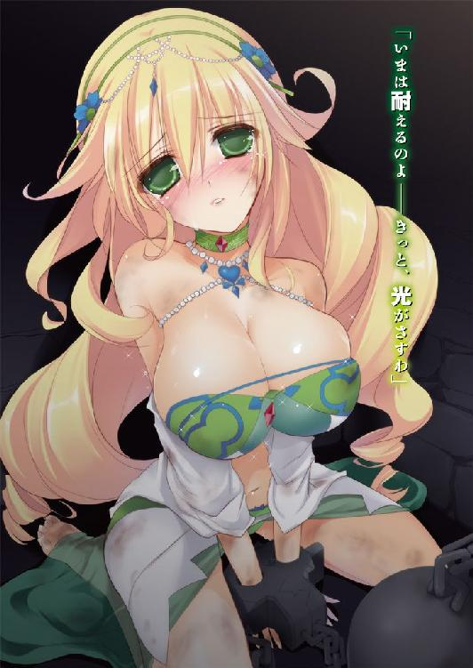
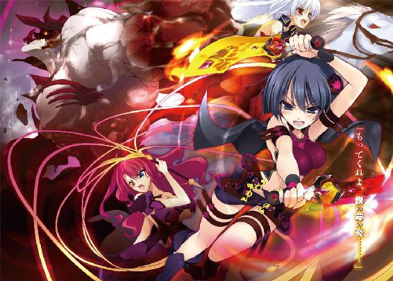
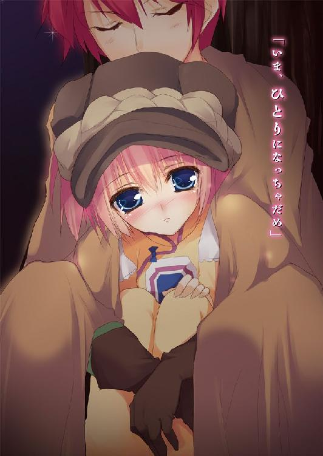
ＭＦ文庫Ｊ
魔弾の王と戦姫７
川口士
口絵・本文イラスト●よし☆ヲ
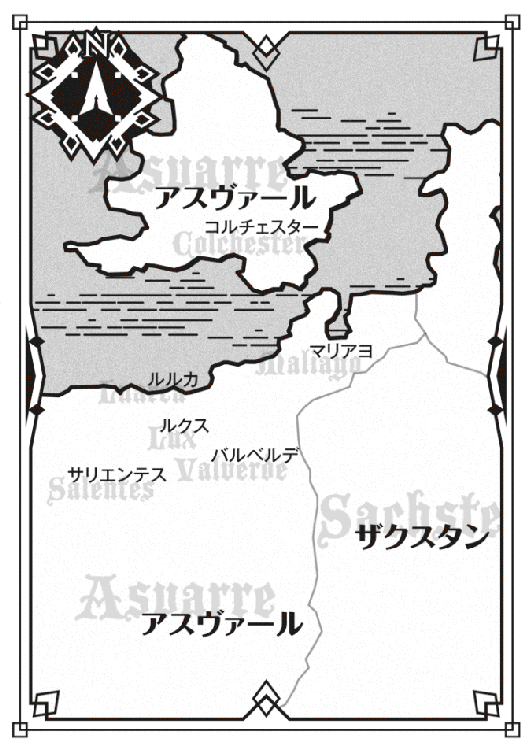
「──ティグルヴルムド卿は、村を焼いたことはありますか？」
淡々とした声で思いもよらない質問をぶつけられ、若者は面食らった。テーブルを挟んで向かい側に座っている金色の髪の女性──リムアリーシャをまじまじと見つめる。
親しい者からリムという愛称で呼ばれている彼女は、若者より三つ年長の二十歳だ。彼女は青い瞳の奥に罪悪感をにじませたものの、そのまま話を続けた。
「不愉快な質問であることについてはお詫びいたします。ですが、できればお話を......」
「ああ、いや、別に気分を害したというわけじゃないんだ。すこし驚いただけで」
若者は気にしていないというふうに手を振る。リムのこうした生真面目な部分を、若者は嫌いではなかった。
若者の名はティグルヴルムド＝ヴォルン。親しい者は名前を縮めてティグルと呼ぶ。
ティグルはいま、彼女の講義を受けているところだった。
白銀の髪の戦姫エレオノーラ＝ヴィルターリアの副官であり、親友でもあるリムは政事や戦術などに幅広い知識を備えている。最近の彼女は、ティグルという生徒に自分の知っているさまざまなことを教えるのをひそかな楽しみにしていた。
彼女の質問に、ティグルはいつもどおりの表情と口調で答えようとしたが、視線は彼女から外れ、声も苦みを帯びる。
「村の半分近くを焼いたことは、あるよ。疫病が流行って......」
それは何年も昔、まだ若者の父が生きていたころのことだ。薬どころか治療法もろくにわからない疫病を前にして、人々がとれる対策は病に罹った者の隔離と、建物を焼き払うことぐらいしかなかった。
「......申し訳ありません」
辛い過去を思いださせてしまったことに、リムは頭を下げて詫びる。頭の左側で結んでいる艶のない金色の髪が揺れた。
「昔のことだよ。それにしても、どうしてそんな質問を？」
ティグルの視線がテーブルへと向けられる。そこには何枚かの地図と、指でつまめるほどの小さな駒が二十ばかり散らばっていた。
今日の講義は、戦の演習だった。リムが地図の上に駒を並べて状況を説明し、かぎられた時間内でティグルが最善手を答えるという形式のものだ。
彼女は厳しい教師だったが、ティグルが必死に知恵を絞って最善手を導きだすと、無愛想な表情を緩ませて短く賞賛してくれた。そうして何度か地図や駒の配置を換えながら演習を行い、一息入れたところで唐突にリムはさきほどの質問をしてきたのだった。
「私はもちろん、ティグルヴルムド卿がそうした真似をなさらない方であることを知っています。だからこそ、こうした余裕のあるときに考えていただきたいのです」
リムは一枚の地図をテーブルに置くと、いくつかの駒をつかんでその上に並べる。
「あなたは百の兵とともに、とある小さな村で休息をとっています。村の住人は......そうですね、五十人としましょう」
それほど大きな村ではないなと考えながら若者はうなずく。ティグルがかつて治めていたアルサスという領土は山や森が多く、町や村など片手で数えられるほどしかなかった。それだけに想像しやすい。リムは話を先に進めた。
「この村から徒歩で一日の距離に、敵軍が現れました。その数は五百。こちらの援軍は、もっとも近くにいる部隊でも到着に二日かかります」
どうしますかとリムは視線でティグルに問いかける。若者はくすんだ赤い髪をかきまわし、渋面をつくって地図と駒を見つめた。
敵はこちらの五倍。援軍は間に合わない。
──間違えるな。リムが俺に求めているのは敵に勝つ方法じゃない。最善の手だ。
最初のころ、ティグルはそれを勘違いして何度か彼女に叱られたものだったが、いまならそんなへまはしない。
「村人を避難させながら、こちらも後退する。それしかないだろう」
「避難させるのはよいとして、村はどうしますか？」
ティグルは顔をしかめた。どういう意味だと言いかけて、彼女の言葉の意味に気づく。
「......燃やすかどうか、っていうことか？」
仏頂面で確認する若者に、リムは冷然とうなずいた。
「敵は徒歩で一日の距離にいます。逃げる時間は半日もなく、荷物をまとめる時間もかぎられます。置いていったものは当然敵に奪われ、利用されます。逆に、これらを燃やすことによって敵に打撃を与えることができるのです」
村を利用することで得られるものは少なくない。空き家で夜を明かすことができれば、幕舎の中で寝たり、地面に寝転がったりするよりもはるかに疲れがとれるのだ。
食糧や水を補充できるし、戦利品を獲ることで士気が上がるのも期待できる。むろん罠を警戒する必要はあるが。
「家々に火を放ち、井戸があれば毒を入れる。状況にもよりますが、最悪の場合はそこまでの判断が必要となります」
ティグルは憤然として地図と駒を睨みつけた。村を焼くなどというのは、野盗の所業だと思っている。だが、疫病ならばともかく戦において、いつか自分がそうした必要に迫られるかもしれないなどとは考えたこともなかった。
他に何か手はないのかと必死に考えたが、思い浮かばない。
「そのときには、それをしろということか......」
忌々しげに降参を認めたティグルに、リムはいいえと否定する。
「ご自身がなさる必要はありません。そのとき私がいれば、私にお命じください」
ティグルは息を呑み、目を丸くしてリムを見つめた。このような発言をするときでさえ彼女は顔色一つ変えない。背筋を伸ばしてティグルの視線を受け止める。仮定の話と思っているからではなく、覚悟ができているからだった。
「必要な処置ではありますが、村人の信用を失うのも確実。一軍の将ならば戦のあとのことについても考えておかなければなりません。ですから──」
「だめだ」
ティグルは強い語調でリムの言葉を遮ると、彼女を睨みつける。
「必要があると思ったときは、俺自身で手を下す。誰かに汚れ役を押しつける気はない」
「軍全体の士気に関わることです」
リムは腰を椅子から浮かせかけて即座に反論したが、ティグルは引き下がらなかった。
「それでもだ。たしかに、誰かにいやなことを命じなければならないときがあるかもしれない。でも、これは違うはずだ」
「民の恨みや憎しみを買わないようにするのも、将たる者の務めです」
「名誉が傷ついたとしても、他のことで挽回すればいい。君の言うことは正しい。でも、民の恨みを避けきることなんてできないんだ。失敗しないように注意を払うのは大前提だけど、そればかり気にしていたら何もできないだろう」
ティグル自身は、アルサスの領主だった期間が二年半ほどと短かったせいか大きな失敗はなかった。しかし、父ウルスが悩んでいた場面を見たことは何度かある。
父の親友であり、ティグルに何かとよくしてくれたマスハスも言っていた。民が不満を持たない統治などないと。
ティグルとリムはしばらく睨みあっていたが、折れたのはリムの方だった。小さくため息をついて、彼女は椅子に座り直す。わかりましたと残念そうに言った。
「......ですが、私が申しあげたような考え方もあるということは覚えておいてください」
「じゃあ、俺からも頼む。こういう状況に陥り、村を焼いたとして......。その後、どういった形で民の信用を取り戻していくかをいっしょに考えよう」
そう言ってティグルが笑顔をつくると、リムもほんのかすかではあったが、口元に笑みをにじませた。
ライトメリッツに夏が訪れる直前、ティグルが賓客としてこの公宮で生活をはじめて数ヶ月が過ぎたころのことだった。
◎
ティグルは深刻な顔でテーブルの上に広げられた何枚かの地図を見つめながら、数ヶ月前に受けたリムの講義を思いだしていた。
ここはライトメリッツの公宮ではない。そもそもジスタート王国ですらなかった。
大陸の西方アスヴァール王国。そこにあるルクス城砦の会議室だ。
薄暗い天井を見上げたティグルはふと、どうして自分はこんなところにいるのだろうかと考えずにはいられなかった。
ティグルヴルムド＝ヴォルンはジスタートの人間ではない。ブリューヌ王国の辺境にあるアルサスを治めていた小貴族だった。爵位は伯爵。取り柄といえるものは弓の技量ぐらいだったが、弓を蔑視するブリューヌではまったく評価されなかった。
若者の運命を大きく変えたのは、昨年ブリューヌとジスタートの間で起こった戦だ。
ティグルはジスタートに七人しかいない戦姫のひとりであるエレンの捕虜となり、その後、紆余曲折あってブリューヌで起こった内乱の渦中に身を投じることとなった。
最終的に、ティグルは行方不明とされていた王女レギンを救出し、内乱を終結に導くことに成功する。だが、内乱終結後のブリューヌとジスタートの交渉の中で、ティグルはエレンの賓客としてライトメリッツで生活することとなった。
ライトメリッツで春を迎え、そして夏の終わりを見届けようとするころ、ティグルはジスタート王ヴィクトールからある頼みごとをされる。ひそかにアスヴァール王国へ赴き、ジャーメイン王子に協力を申しでて盟約を結ぶというものだった。
アスヴァールでは国王亡きあと、二人の王子が玉座を賭けて争っていたのだ。一国の王の頼みとあってティグルは断ることができず、アスヴァールを訪れる。
ジャーメイン王子には会えたものの謀殺されかけ、窮地を脱してみると王子は叛乱を起こした部下に殺害されていた。その部下タラード＝グラムは、ティグルにこう言った。
「オレは王を目指す。──頼む。どうか力を貸してくれ」
ティグルがタラードに協力することを決めたのには、いくつか理由がある。
この青年がジスタートと友好を結ぶつもりであるのに対し、敵手であるエリオット王子はムオジネル王国と手を組んだこと。ジスタートから使者として派遣された戦姫ソフィーヤ＝オベルタスが、エリオット王子に囚われていることなど。また、タラードの明朗な人柄に惹かれたというのもあった。
ティグルは彼から三千の兵を借り受け、ルクス城砦を攻略した。それが昨夜から今朝にかけてのことだ。
そして現在。
ティグルたちの拠点となったルクス城砦は、ものものしい雰囲気に包まれていた。
城砦の外では、西の空を金色に輝かせて太陽が沈みつつある。黄昏時の光を浴びて城砦の西側は赤みを帯び、対照的に東側は黒い影に覆われていた。
城壁上を巡回し、あるいは中庭で休息をとっている兵たちの顔は言いようのない不安に彩られている。激戦の末に勝利と城砦を手にした者たちの表情ではない。
彼らを怯えさせているのは、さきほどある兵士がもたらした一つの報告だった。
「エリオット王子が三万の海賊を率いて上陸しました！ 彼らはこの城砦から二日ほどの距離にいるようです」
その知らせが兵たちに与えた衝撃ははかりしれない。むろんティグルとて例外ではなかった。自分たちの実に十倍もの敵が、たった二日の距離にいるのだ。
「──とりあえず、やるべきことをやろうか」
そう言って仲間たちを落ち着かせたものの、地図を用意させてあらためて状況を確認したティグルは、その深刻さに唸らざるを得なかった。
「わたしに何かできることはあるか？」
薄紅色の髪をした美しい少女が、黒真珠を思わせる大きな瞳をティグルに向ける。年のころは十三、四。年齢の割に無表情で子供らしさに欠け、口調も大人びているが、そのたたずまいは不思議と愛敬を感じさせた。
彼女はオルガ＝タム。エレンらと同じジスタートの戦姫である。わけあって一人旅をしていたが、ティグルと会って行動をともにするようになった。触れれば折れそうなほどに華奢な身体つきながら、大の男を軽々と投げ飛ばしてみせる力の持ち主だ。
この会議室にはティグルとオルガの他に、もうひとりいる。
三十代半ば、陽に焼けた赤銅色の肌を持つ巨漢で、名をマトヴェイといった。レグニーツァの戦姫サーシャことアレクサンドラ＝アルシャーヴィンの信頼が厚い元船乗りで、この旅においてもティグルを何かと助けてくれている。
「どうぞ遠慮なくおっしゃってください。あなたの命令でしたら、たいていのことには従いましょう」
マトヴェイは太い腕を組み、凄みのある笑みを浮かべた。強面のために、好意からの笑顔でも凶悪なものに見えてしまうのはこの男の欠点かもしれない。
ふたりがいなければ、ティグルは異国の地における数々の窮地を切り抜けることはできなかっただろう。このうえなく頼もしい仲間たちだ。
若者はたったいま思いついたことは話さず、ごまかすように苦笑を浮かべた。ティグル自身がいまだ決断しかねていたことと、顔触れがそろっていないためだ。
部屋の外から、足音と甲冑の鳴る音が重なりあって近づいてくる。ひとつしかない扉が開いて、ふたりの男が入ってきた。
ひとりは中肉中背で容姿も平凡ながら、穏やかな微笑が印象に残る男だ。鎧はつけておらず、腰に剣を下げただけの軽装だが、隙のないその動きは歴戦の戦士であることをうかがわせる。
男の名はバイルド＝ルドラー。タラードに仕えており、ここにいるおよそ三千の兵たちの総指揮官である。タラードはティグルを総指揮官に据えようとしたのだが、ティグルはそれを断ってルドラーの副官という立場に身を置いたのだった。
もうひとりは、対照的に荒くれ者の雰囲気をまとっている。ちょうど三十歳だが、左頬の大きな傷跡さえなければ十代といっても通用するだろう童顔の持ち主だった。
サイモンという名のこの男は、三百近くいる傭兵たちの隊長だ。実力主義、現実主義の傭兵たちが従うだけあって、実力と人望を兼ね備えた熟練の戦士だった。
「兵たちの様子はどうだった？」
二人が椅子に座るのを待って、ティグルは尋ねる。ふんぞり返って椅子の背もたれをきしませながら、傭兵隊長のサイモンは不機嫌そうに答えた。
「ひでえもんだな。どいつもこいつもしけた面しやがって」
「とりあえず混乱は避けられましたが、一刻も早く新たな指示を出す必要があります」
ルドラーも控えめな口調で懸念を示す。ふたりは、エリオット軍の突然の上陸に慌てる兵たちをなだめ、叱咤して混乱を鎮めてきたのだった。
──仕方がないか。どうにか勝って気が緩んだところにこれだからな......。
マトヴェイが水の入った銅杯を人数分、テーブルの上に置く。
「酒じゃねえのか」
銅杯の中身を覗きこんでサイモンが笑ったが、それは不満ではなく冗句だった。彼も、この状況が酒を飲みながら話せるようなものではないことは充分承知している。
ティグルは、ルクス城砦を中心にして周辺一帯が描かれた地図をテーブルに置いた。
「状況を確認しよう。まず、エリオット王子の軍は、いまどこにいる？」
「このあたりです」
身を乗りだしたルドラーが、地図の一点を指で示す。他の者たちも立ち上がって地図を覗きこんだ。この城砦から北へ二日ほどの距離にある大陸沿岸。そこに、かすれかけた文字でルルカと書いてある。
「このあたりには漁村が二、三あるのですが、ルルカはその中でもとくに大きな村です。敵はマリアヨを陥とすと思っていましたが......」
ルドラーは重苦しい息を吐きだした。完全に裏をかかれたのだ。
「教えてくれたのはどこの兵だ？ 斥候はここまで出していなかったと思ったが」
ティグルの疑問に、ルドラーは地図の上に置いたままの指を左下へと動かした。ルルカ村からは南西、ルクス城砦から見れば北西にあたる。
「ここにサリメという小さな町があります。襲われた村人がこの町まで逃げてきて事情を伝え、話を聞いた町の兵士が馬を飛ばしてくれたのです」
それからルドラーは、海賊たちの襲撃について詳しく説明した。
「村が襲われたのは、夜が明けて間もないころだったそうです。私たちがこの城砦を攻めたのと同じか、少しあとですね。このあたりの漁村には簡単な造りの船着き場があるのですが、海賊どもは船から大量の小舟を出してそこへ乗りつけてきたと......」
まだ暗さの濃く残る空の下、展開されたのは目を覆わんばかりの惨劇だった。突然のことで呆然としている村人たちに、海賊は容赦なく剣や斧を振りおろした。家の中へ侵入して目につくものを奪い、あるいは破壊し、女性を犯し、火を放った。
逃げ延びることができた者は十人に満たなかったという。
ティグルの顔に怒りと苦渋の色がにじんだ。若者が生まれ育った故郷の町も、昨年テナルディエ公爵の軍に襲われたことがある。
そのことを思いだし、また理不尽に生活を奪われた村人のことを考えると自分にはどうしようもなかったとはいえ、やりきれなさが心を侵食した。
オルガとマトヴェイも、ティグルほどではないが海賊に対して憤りを覚えている。平然としているのは、こうしたことは戦ではつきものと割り切っているサイモンぐらいだが、彼も「手際がいいな」と皮肉っぽく言うだけに留めた。
ティグルはひとつ深呼吸をして気を取り直すと、仲間たちの顔を見回す。
「エリオット王子はこれからどう動くと思う？」
「街道を通ってまっすぐバルベルデを目指すでしょう」
そう断言したのはルドラーだ。
「ご覧の通り、ルルカ村のそばを通っている街道は東と南西に延びています。南西に進めばサリメの町へ、東を行けば街道は二股にわかれて、それぞれマリアヨとバルベルデに続いています。いずれの道であっても、このルクス城砦に直接通じてはおりません」
バルベルデはタラードが拠点としている都市である。エリオットにしてみれば、まずバルベルデを攻略することが勝利への第一歩となるのだった。
「我々がこの城砦を陥としたことを、まだエリオット王子は知らないはずです。レスター将軍と合流するつもりだとしても、左右どちらかの街道を通ることになる。ならば、バルベルデへ向かった方が無駄がありません」
レスターの名が出たとき、無言で地図を眺めていたオルガがわずかに首を動かしてティグルを横目で見た。それに気づいたティグルは首を横に振る。
レスターはこの城砦を守る将軍だったが、その正体は人間ではなく、トルバランと名のるおそろしい異形の怪物だった。それを知っているのは、実際に戦ったティグルとオルガのふたりだけだ。説明するとややこしくなるので、このまま黙っているつもりだった。
──レスター将軍が怪物だったことを、エリオット王子は知っていたんだろうか。
頭をかすめた疑問を、ティグルは頭の片隅に追いやる。いまは他に考えなければならないことがいくつもあるのだ。
「だが、この城砦がわたしたちの手に落ちたことを、エリオット王子がいつまでも知らないということはないだろう。知ったら、動きを変えてくるのではないか」
ルドラーの言葉にオルガが首をかしげる。赤い髪の騎士は穏やかに肯定した。
「その通りです。考えられる手としては、全体の行軍速度を落としつつ、五千ほどの偵察部隊を用意して街道を先行させるか......」
「でなければ、別働隊を編成してこちらへさしむけるといったところかな」
ティグルがそう言うと、ルドラーは目元にかすかな緊張をにじませてうなずいた。
エリオットはルクス城砦を放っておくことはできない。この城砦を無視してバルベルデに向かえば、城砦にいる敵に側面ないし背後を突かれる恐れがあるからだ。
だからこそ、上陸する前の段階でレスターに寝返りを誘ったのだろう。もし城砦攻めに手間取っていたら、ティグルたちはレスターとエリオット王子の軍勢に挟まれて撤退を余儀なくされていたに違いない。
「別働隊の場合、街道を外れてこちらへ向かってくるかもしれないのが厄介ですね」
ルドラーが地図に視線を落として唸る。オルガは黒曜石の瞳に疑問を宿してアスヴァールの騎士を見上げ、それからティグルに聞いた。
「街道を外れて進めば、足が鈍って行軍が大幅に遅れると思うのだが、ありえるのか」
エリオットが上陸したルルカ村から、この城砦へまっすぐ南下しようとするなら、草原を抜け、大小いくつもの丘が連なる一帯を越え、広大な森を突破しなければならない。ルクス城砦は、その森を抜けたところにそびえたっているのだ。
草原や丘陵地帯はまだしも、森の中を進むのはおおいに手間取るだろう。
「そうだな。敵の進軍を食い止めようと思ったら、ふつうは街道を兵で固めるんだ」
ティグルは地図に指を置くと、漁村と城砦の間に広がる一帯を丸で囲む。
「街道から外れたところにまで兵は割けない。斥候を放って警戒するのが精一杯だ。敵がそこを突いてくる可能性は充分にある」
なるほどと納得するオルガの横で、それまで黙っていたマトヴェイが口を開いた。
「ルドラー殿。エリオット王子の人柄について何かご存じのことはありませんか。今後彼がどう動くかについて、参考にできるやもしれません」
ティグルは驚いて元船乗りを見つめた。敵への怒りや現状に対する焦りがあったとはいえ、その点に思い至らなかったのだ。
ルドラーは難しそうな顔で首をひねった。
「私はエリオット王子にお会いしたことはありませんが、タラード閣下から聞いたことはあります。それによれば、非常に尊大で疑い深い方であると」
──エレンから聞いた話と同じだな。
ライトメリッツの公宮で白銀の髪の戦姫が教えてくれたことを、ティグルは思いだす。ジャーメイン王子と同じく傲慢で、猜疑心が強い。エレンはそう言っていた。
「ただ、閣下はこうも言っておられました。大胆さと慎重さを併せ持っており、決して油断のできない相手であると」
「大胆さと慎重さ？」
顔をしかめておうむ返しに聞いたマトヴェイに、ルドラーはうなずく。
「ジャーメイン王子がご自分の弟妹たちを宮廷に呼びだし、謀叛の疑いをかけて殺害したときのことです。エリオット王子は危険を察知し、いざとなれば逃げられるよう事前に手配してから宮廷へ向かいました」
エリオットは見事にジャーメインの魔の手から逃げおおせた。また、ギネヴィア王女もそれによって生じた混乱を利用し、逃亡に成功したのだった。
「大胆さについては、説明する必要もないでしょう。一国の王子が海賊と交渉し、配下として従えるなど尋常なことではありません」
「それに、こちらの裏をかいた漁村への上陸か。奇をてらうことが好きな王子様だな」
サイモンが皮肉っぽい笑みを浮かべ、銅杯を手でもてあそびながらルドラーに聞く。
「とにかく俺たちだけじゃ勝負にもならねえ。タラードはあと何日でここに来る？」
彼はいまごろ、アスヴァール国内を奔走して兵をかき集めているはずだ。その数が一万に達したらティグルらと合流し、北上してエリオットと戦う予定になっていた。ティグルたちがバルベルデを発った日から数えれば、十日近くが過ぎている。
「申し訳ありません」
ルドラーは苦しげな顔でうつむいた。わからないということだ。
タラードがティグルに語った戦略では、エリオットはマリアヨの港町を攻めることに時間を費やすはずだった。エリオットの行動力が、タラードの予想を上回ったといえる。
「伝令がバルベルデに着くのは、早くても明日の昼過ぎです。また、閣下がいるともかぎりません。兵を集めるべくバルベルデを離れていることはありえるので......」
「おてあげだな」
空になった銅杯を指先でくるくるまわし、おどけた口調でサイモンは肩をすくめた。この男が笑うと、左頬の傷跡が歪む。その不真面目な態度にオルガは不機嫌そうな顔をしたが、ティグルとマトヴェイは苦笑で受け流した。彼の気持ちはわかる。
なにしろ、ここにいる三千弱だけで、三万の敵の相手をしなければならないのだ。
だが、ティグルはタラードを積極的に恨む気にもなれなかった。兵を集める苦労は、ブリューヌの内乱のときに充分すぎるほど経験している。
──さてどうする。
落ち着いてやるべきことをやろう、と自分は彼らに呼びかけた。いまやるべきこととは何なのか。三万もの敵を打ち倒す妙手、奇策を考えることなのか。
そうではない。机の上へ手を伸ばし、ティグルは別の地図を一番上へと持ってくる。
ルクス城砦を中心に、周辺の村々の位置を描いたものだ。十数人で生活しているような小さな集落まで含めれば、村の数は実に十を数える。
ルルカ村の惨劇を聞くかぎり、エリオット王子の軍勢は慈悲や寛容の対極にある。この村々を容赦ない略奪の対象とすることは疑いなかった。
「いま俺たちがやるべきは、村人の安全を確保することだ。そのためにふたつ手を打つ。ひとつは、二千騎ばかり選んで敵に夜襲をかける」
「敵の数を考えると、二千では効果があるとはとても......」
「大戦果なんて期待しない。敵の足をすこしでも鈍らせることができれば充分だ」
首をひねるルドラーにそう答えて、ティグルはふたつめを切りだそうとし、一瞬だけ目を泳がせる。迷いがあった。だが、すぐにそれを振り切って事務的な口調で言う。
「ふたつめだが、村人たちを避難させる。村と敵の位置を考えると、避難させたあとに夜襲という流れになるな。彼らにはバルベルデに駆けこんでもらうのが望ましいが、最低でも城砦より南へ逃げてもらう」
ティグルは地図から顔を上げてルドラーを見た。若者の顔には深刻さと沈痛さの深い影がよぎっている。
「彼らは従ってくれるか？」
「村人たちは戦に慣れております。海賊が迫っている、逃げろ、といえば聞くでしょう。夜明けを待って兵を向かわせるとして......」
考えをまとめるルドラーのつぶやきを聞きとがめて、訝しげな顔でオルガが聞いた。
「今夜中ではないのか？ ことは一刻を争うのだろう」
「もう日が沈んでいます。いまから城砦を出たとして、兵が村に着くのは真夜中。領民たちは明かりを消して寝静まっているでしょう。そのような状況で彼らを集めて話しても、混乱するだけです。夜明けを待って動いた方が間違いは起こりにくいのですよ」
夜の闇は混乱を容易に助長させる。避難が進まないばかりか、迷う者や置いていかれる者が続出するに違いなかった。
「この城砦を攻めるのに雇った領民たちも、帰らせてしまいましたからね......」
ため息をついて、ルドラーは間の悪さを嘆く。
「で、逃がすのはいいけどよ、それで終わりってわけじゃねえだろう」
そう口を挟んできたのは歴戦の傭兵隊長だ。
「村は人っ子一人いなくなった段階で焼き払う。井戸には毒を放りこむ。それでいいな」
当たり前のように確認するサイモンに、オルガとマトヴェイ、ルドラーはそれぞれ眉をひそめる。ティグルだけはそうした反応を見せず、諦め混じりのため息をこぼすと、髪を乱暴にかきまわした。地図の中に村々を見つけたときから、予想はしていたのだ。
──リムは本当にいい先生だ......。
金色の髪を頭の左側で結んだ、愛想のない彼女の顔を脳裏に思い浮かべる。会議をはじめる前に思いだしたリムとのやりとりは、まさしく現在の状況に合致していた。村人たちを避難させたとして、村や井戸をそのままにしておけば海賊に利用されてしまう。
井戸を使えないようにすれば、敵はどこかから水を調達しなければならなくなる。敵に疲労や面倒を強いるのは戦において基本中の基本だ。
しかし、これは傭兵のサイモンだからこそためらいなく発言できたことでもある。ティグルも彼の言葉の正しさは理解しているが、納得はできなかった。
──毒を投げこめば、戦が終わったあとも井戸を使うことはできなくなる。
それは村を滅ぼすに等しい行為だ。燃やした家は新たに建て直すことができても、水がなければ人間は生きていけない。
「......焼くのはともかく、毒を使わずにすませることはできないか？ たとえば石を投げこんで、水を得られないていどに埋めるとか」
懇願するような口調でティグルは訊いた。できれば村を潰したくない。だが、サイモンは無情にも首を横に振った。
「敵の数を考えると無駄だな。すぐに石を除けちまうよ」
沈黙が訪れる。それは、誰も代案を示せないということだった。
ティグルは視線を地図に戻し、まるで親の仇ででもあるかのように睨みつける。
──あのとき俺はリムに言った。俺自身も手を下すと。
仮定は現実のものとなった。むろん村を焼かず、井戸もそのままにしておくという選択肢はある。だが、敵に少しでも打撃を与えておかなければ、彼らと戦う兵たちはもちろん村人の安全さえ危うくなる。
エリオット軍は早ければ二日か三日でこの城砦にたどりつくだろう。どのように対応するにせよ、準備にも実行にも時間が必要だ。ろくに考える時間すら、いまのティグルには与えられていない。
「ティグルヴルムド卿。この隊の総指揮官はあなたではなく、私です」
哀れむような目をしつつ、あえてたしなめるような口調でルドラーが言った。
「決断し、命令するのは私なのです。あなたが気に病むことはありません」
ああ、とティグルはうなずく。納得したのではなく、自分を気遣ってくれたルドラーに配慮して、わかったふりをしたのだ。
ルドラーの言っていることは間違いではない。だが、ティグルは命令に従うだけの一兵士ではなく、ルドラーに意見を言える立場だ。タラードが最初、ティグルを総指揮官に据えようとしていたことを考えれば同格とさえいってもよい。
そして、若者はジスタートにいるリムにも、自分にも嘘をつくことができなかった。
「ルドラー。村人たちへの補償を頼む」
「私の名にかけて、命に代えても。必ず」
赤い髪の騎士の真摯な即答が、せめてもの救いだった。
◎
月が西の空へ大きく傾き、夜空はその暗さを徐々に薄れさせている。闇はその濃淡を何段階にも細かくわけることで、夜の終わりが近いことを教えていた。
三千弱の兵のうち約一千はルドラーとともに城砦に残り、ティグルは二千の騎兵を率いて城砦を出る。夜明けまでには、まだ一刻以上の余裕があったが、騎兵で森を抜けるのは時間がかかるため早めに行動を開始したのだ。
森を抜けたときには空は青く澄みきって、太陽は低い位置ながらも白く輝いていた。
ティグルは予定通り、二千の兵を十の部隊にわけてそれぞれ村へ向かわせる。ティグル自身も三百に満たない数の騎兵を率いて、村のひとつへと向かった。若者の左右にはオルガとマトヴェイの姿がある。
兵たちは革鎧を身につけ、ほとんどの者が槍の他に弓を携えていた。ルルカ村が襲われたときの話から敵の装備を推測したティグルとルドラーが、そのようにさせたのだ。
ティグルたちが村に着いたときには、野良仕事をはじめている村人たちの姿がぽつぽつと確認できた。この村の住人の数はおよそ七十。村の周囲にあるカラスムギ畑からの収穫と、一ベルスタ（約一キロ）離れた森の恵みとで日々を過ごしている。
家は木造の壁に漆喰を塗り、茅葺き屋根の素朴な造りばかりだ。
ティグルは村長をはじめとする村の有力者たちを呼びだすと、村長の家に集まって用件を率直に告げた。
海賊たちが迫っている。昼までに荷物をまとめてここから逃げろと。
当然というべきか村長たちは困惑の色も露わに顔を見合わせた。
「昼までに、ですか？」
「いくらなんでも急すぎやしませんか。第一、逃げるといってもどこへ......」
「バルベルデだ」
ティグルはことさらに事務的な口調で告げる。マトヴェイに教わったばかりの不慣れなアスヴァール語であるために、聞く者にはよけいそっけなく響いただろう。
城砦を発つ前に覚悟を決め、心に氷の衣を幾重にも着せていたにもかかわらず、ティグルは自分の言葉に嘔吐感を覚えた。
異国の、昨日まで名前も知らなかったような村だからこそこのように扱えるのだという自覚がある。それが、若者の心を音もなくきしませていた。故郷であるアルサスのどこかの村だったら、このような決断を自分はできただろうか。
「ここからでは二日以上かかります」
有力者のひとりが悲鳴にも似た声をあげた。五十半ばの男で、髪にも短い髭にも白いものが目立っている。ティグルはふと、ブリューヌにいるマスハスのことを思いだした。もう半年以上会っていないが、元気でやっているだろうか。
「まずはルクス城砦より南側へ向かってほしい。そのあたりの村や町に逃げこめるならそれでかまわない。それが無理なようなら、進路を東に切り替えてバルベルデだ」
こうした長い台詞になるとティグルがまずジスタート語で答え、それをマトヴェイがアスヴァール語で告げる形になる。ティグルの冷厳な態度に、マトヴェイの凶悪な面構えとたくましい巨躯が加わって、傍から見ればもはや恫喝だった。
「女や子供、老人もいるのに......。病人だって」
他の男がぼそぼそと苦情めいたつぶやきを口にする。子供、老人といった単語を聞きとがめたティグルは彼の言葉を推測して、態度も声音も冷淡さを維持したまま答えた。
「我々から荷車を二台提供する。それに乗せればいい。この村にもあるだろう」
「──カラスムギ」また別の有力者が言った。
「ようやく脱穀が終わって、共同の納屋にしまったんだ。何日か後にはバルベルデに運ぶはずの......」
ティグルの表情がかすかに強張る。マリアヨからバルベルデに向かう途中で見た麦畑の様子が脳裏によみがえった。
実った麦の刈り入れをすませたら、次は脱穀しなければならない。半ばから割れている木の棒に麦穂を挟んで前後に引き、麦を落とす。根気のいる作業だ。
それをすませたら麻の袋に詰めて、共同の納屋にしまう。このうちの何割かは後日、租税として荷車に積み、最寄りの都市へ運ぶ。村人たちは残ったもので次の収穫までを過ごすのである。それはどこの国でも変わらない風景のはずだった。
「あなたがたへの補償は要請してある」
そういうことではないとわかっていながら、若者はそのように言うことしかできない。
もちろん租税の問題もあるだろう。だが、それ以上に種を撒き、耕し、日照りや豪雨を心配し、虫や鳥の害に頭を悩ませ、何ヶ月にもわたる労苦の末に得られたものを捨てていけという要求に、村人たちは悲しみと憤りを覚えているのだ。
「海賊がここに来る前に、何とかしてくださらんのですか」
有力者のひとりが非難がましい目をティグルに向けた。男は感情が昂ぶってきたのか、ティグルがそれに答えようとするよりも先に早口で言い募る。
「わしはここに残るぞ。そもそも海賊がこんなところまで来るなんて信じられるか。わしはこの村で四十年以上生きてきたが、盗賊や山賊は見ても海賊なんて見たことはねえ」
ティグルはうんざりしたと言いたげな顔をつくり、居丈高に言い放った。
「ならば、サリメの町へ行って話を聞いてくるといい。いま、あそこには海賊から辛うじて逃げ延びた者たちがいる。彼らの口から聞けば、あなたがたも決意を固めるだろう。もっとも、そのときには手遅れかもしれないが」
場に沈黙が満ちる。厳しさと冷たさをまとった、滅多な発言を許さない類の沈黙が。村長たちは不安そうに視線をかわしあうものの、誰も一言も発しない。
ティグルは男から視線を外して、村長を見た。
「──村長。村から出ようとしない者がいる場合、縛りあげて、荷物といっしょに荷車に乗せて運んでくれ。何度も言っていることだが、時間がない。我々はここで敵を防ぐ」
話は終わりだと言わんばかりにティグルは立ち上がる。突き放すような台詞は彼らをねじ伏せたかに見えた。
しかし、そうはならなかった。村の者の中でもっとも年長だろう老人が、皺だらけの顔を動かしてたどたどしく言葉を紡ぐ。
「わしらは......わしらは、おとなしく暮らしとりました。ジャーメイン殿下の兵が暴れても。畑を踏みにじられ、柵や樽を壊され、若いのが理不尽に殴られても、反抗せずにじっと耐えておりました」
老人は恨めしげな目でティグルを見上げた。
「今度はわしらに、村を捨てろとおっしゃるんですか」
村人たちが荷物をまとめて村から去ったときには、太陽は空高く上がっていた。
ティグルは不機嫌さを隠そうともせず、空を仰いで苛立ちのこもった息を吐く。予定より半刻ばかり時間がかかったものの、どうにか村を無人にすることはできた。
通りには彼らの捨てていった服や鍋、釜、農具などが散乱している。あと半刻後には火が放たれ、これらもすべて家々や畑とともに燃えてしまうのだ。
念のため、逃げ遅れた者がいないかどうかを兵たちに調べさせた。ティグル自身はオルガ、マトヴェイとともに中央の広場から動かず、報告を待つ。
「損な役回りをなさる」
そうつぶやいたマトヴェイの視線の先には、誰もいない家に入っていく兵たちの姿があった。その動きは鈍く、何人かはあからさまに非好意的か、あるいは一切の感情を封じこめた目つきでティグルたち三人を見ている。
兵のほとんどは平民だ。戦がなければ町や村で日々を過ごしている。ルドラーに言い含められたとはいえ、村を焼くという行為は彼らにとっても耐え難いものであり、現場の指揮官であるティグルに非難がましい目を向けるのも仕方のないことだった。
「こういうのは、よそ者の俺がやった方がいいからな。それに──俺も同感だ」
そう応じるティグルの黒い瞳には、自虐的で陰鬱な光が瞬いている。もしも自分が彼らと同じ立場であったなら、やはりそのような命令を出した者に怒りを覚えただろう。
だが、指揮官としての自分が心の中で冷たく告げている。血を吐くような思いをしてでもこれをやらなければ、ティグルたちはより過酷な状況に立たされる。空き家で身体を休め、水も確保した万全の状態の敵と戦うことになるのだ。
「すまなかったな、マトヴェイ。俺がアスヴァール語を話せれば......」
「あなたは言うべきことを言ったのです。お気になさらず」
闊達に笑う元船乗りに、ティグルはうなずくことで謝意を示した。彼を紹介してくれたレグニーツァのサーシャにも、あらためて内心で感謝する。
兵たちの懐疑的な視線はオルガとマトヴェイにも向けられていた。ふたりともティグルの仲間だと見られているからだ。しかし、マトヴェイは鼻で笑い、オルガは無表情を微塵も変えずに泰然としている。
不意に、オルガがティグルのそばに馬を寄せてきた。薄紅色の髪の戦姫は一言も発さないが、その堂々とした態度からはティグルを守ろうとする静かな気迫が感じられる。
「ありがとう。でも、俺はだいじょうぶだ」
ティグルはそう言って、少女の頭を軽く撫でた。
やがて誰も残っていないという報告が届けられると、若者は火を放つよう命じる。
村に二つあった井戸には、ティグル自身が毒を投げこんだ。手の震えを兵たちに見られないよう、オルガとマトヴェイだけをそばに置いて。
炎に包まれる家屋を見つめるティグルの顔には、何の感情も浮かんでいなかった。
ただ、爪がてのひらに食いこんで血を流させるほど拳を強く握りしめていた。
◎
ティグルたちの去った村から北に一ベルスタ（約一キロ）進んだところにある草原が、合流予定の場所だ。
ティグルたちがそこへ到着したときには、すでに一千近い騎兵が集まっていた。それぞれの部隊の隊長が、先頭に立つティグルを発見して足早に向かってくる。
幾人かは苦々しい顔で結果を報告したが、ティグルは落ち着いた姿勢を崩さず、順番に聞いていった。心情はともかく、彼らは命令通り村人を避難させてくれたらしい。
ティグルは謝罪やねぎらいの言葉を一切かけなかった。かえって彼らの感情を逆撫でするだけだとわかっていたからだ。ただ、報告にしっかり耳を傾けることで、彼らの怒りも悔しさも受け止めているのだと態度で示した。
すべての報告を聞き終えると、ティグルは隊長たちを集めた。
「斥候を出す。疲労の少ない者を八十騎ほど用意してくれ。十騎で一組の部隊を八つつくって、北と東へそれぞれ四部隊ずつ向かわせるんだ」
北に目を向ければ、なだらかな丘陵が遠くに見える。東に視線を転じれば、枯れ草色のまばらに混じった草原が広がっていた。草原を抜ければ街道に出る。
どちらも見晴らしがよいとはいえ、なかなかに広い。敵を見落とさないよう、ティグルは八つの部隊をすべて違う進路で出発させた。
それがすむと、野営の準備を命じる。夜襲に備えていまのうちに休ませるつもりだった。
野営といっても、幕舎は荷物になるので持ってきていない。周囲を木の柵で囲い、要所に見張りを立てて交代で休息し、食事をとり、横になる際は地面に外套を重ねて敷くという簡単なものだ。
兵たちから離れたところで、ティグルはオルガ、マトヴェイのふたりと話しあった。幕舎がないので、兵によけいなことを聞かれないよう距離をとるしかないのだ。オルガはほとんど喋らないので、男ふたりが中心の会話となった。
「ルクス城砦の陥落を、エリオット王子はもう知ったと思うか」
「知ったと考えておいた方がいいでしょうな」
沿岸周辺の、ティグルたちが避難を呼びかけるには遠すぎた村々、海賊に出くわしてしまった不運な旅人や行商人、エリオットに恐れをなして使者を派遣する小貴族など、敵が情報を入手する可能性はいくらでも考えられる。
「悲観的な考えは好きじゃないんだが、厄介な事態を想定しておこう。敵は城砦の陥落を知っている。先行部隊の数は七千。草原を抜けて丘陵地帯半ば、というあたりかな」
「七千はちと多い気がしますが、この際多めに見積もっておいた方がいいですな」
だが、ふたりのこの予想は外れた。
日が暮れてきたころに戻ってきた斥候は、ティグルの前まで駆けてくると、汗も拭かず、呼吸も整えないまま次のように報告したのだ。
「敵と思われる一団を発見しました。ここから、徒歩でおおよそ二刻ほどの距離。二万は確実にいる大軍団です！」
ティグルだけでなく、オルガとマトヴェイまでもが驚愕に目を瞠った。
──二万!? それに徒歩で二刻？
一刻のうちに徒歩で進める距離は、十ベルスタ（約十キロ）とされている。エリオット軍は、ティグルたちの予想をはるかに超える速さで進んでいた。
「そうか。敵の様子について、詳しく聞かせてくれないか」
ティグルはすぐに驚きを表情から消し、なるべく余裕のある口調で尋ねる。圧倒的な大軍を目にしたせいだろう、兵は興奮している。これ以上動揺させてはならなかった。
「敵は赤い竜の軍旗を掲げ、その隊列はおおいに乱れており......」
エリオット軍は隊列などまるで気にせず、誰もが全速力で丘陵地帯のなだらかな斜面を駆けていたという。武装については棍棒や手斧、鉈が目立ち、鎧は身につけていないか、着こんでいてもせいぜい革鎧ていど。馬に乗っている者はいなかったそうだ。
「二万という数字はたしかなのか？ それほどまでに敵の隊列が乱れているのならば、数えるのは難しいと思うが」
いつもの無表情に戻ってオルガが淡々と問う。数千、数万もの敵となるとその数を把握するのは容易ではない。しかし、伝令ははっきりと答えた。
「私は長く伝令を務めており、歩兵の一千ならばどのていどの塊となるか、わかります。さきほど申しあげましたように敵の中で馬に乗っている者はなく、その隊列は前後に大きく伸びていたため、一千ずつを数えていくのは可能でした」
「そうか。あなたの言葉を疑ってすまなかった」
オルガは素直に謝罪する。その隣で、ティグルは伝令が報告した内容について考えを巡らせていたのだが、敵の意図に気づいた瞬間おもわず叫びだしそうになった。しかし、それを表に出すことはせず、落ち着いた笑みを浮かべて兵にいたわりの言葉をかける。
「ご苦労だった。下がって休め。酒は駄目だが、軽い食事なら許す」
兵士がティグルの前から歩き去ると、オルガとマトヴェイは怪訝そうな目を若者に向けた。ティグルの顔には、あきらかな緊張と不安の色が浮かんでいる。もどかしそうな手つきで懐から地図を取りだした。オルガが尋ねる。
「何かわかったの？」
「敵は全軍でまっすぐ南下してきたんだ。それも、かなりの強行軍で」
エリオットは大胆な気性の持ち主であるという話を、ティグルは思いだしていた。
アスヴァールの第二王子は別働隊を編成するような真似はせず、ルクス城砦の攻略を優先することにして全軍の進路を変えたのだ。
「......では、敵はその強行軍で一万も脱落者を出したということですか」
マトヴェイが唖然とした顔で言った。エリオット軍は三万のはずだから、実に三分の一も減ったことになる。
「敵はこう考えているんだろう。たとえ一万脱落しても、二万残ると」
この状況においては正しい考えだった。仮に、エリオット軍がさらに脱落者を出して半分の一万五千に減ったとしても、ティグルたちの五倍だ。タラードの援軍一万が間に合っても、まだ数において優る。そして、脱落者たちは時間がたてば到着するのだ。
「でも、それだけの無理をすれば、疲れきって戦いどころではなくなる」
眉をひそめるオルガに、マトヴェイがやんわりと首を横に振った。
「こんなところに兵を配置するはずがない。あるいは配置してあったとしても少数だろうから難なく突破できる、というところでしょう。私でも、十倍の敵に挑むのは正直ごめんですな。敵は強行軍で疲れているから絶対に勝てると言われても、です」
敵の疲れのていどを見誤れば、簡単に撃退される。下手をすれば取り囲まれて殲滅されかねない。賭けとしてはあまりにも分が悪い。
エリオットはそう判断し、自分たちの進む先に万を超える数の敵はいないと見越して、驚くべき速さで突き進んでいるに違いなかった。ティグルは戦慄を禁じ得ない。刃を撃ちかわすどころかまだ遭遇すらしていない。しかし、戦いはすでにはじまっているのだ。
ティグルは紙と筆を用意させると、すばやく手紙をしたためた。伝令兵を呼ぶ。
「いまから急いでルクス城砦へ戻り、ルドラー殿にこれを渡してくれ」
手紙を受けとった伝令兵は、それを大事そうに懐にしまうと一礼して退出した。
ティグルの後ろに控えていたオルガとマトヴェイは顔を見合わせる。口頭で伝えないということは、一兵士には知らせられない内容ということだ。これから仕掛ける予定の夜襲に何か関係あることだろうかと考え、遠慮がちにオルガが尋ねる。
「夜襲はどうする？」
「やる」
ティグルは断固とした意志を示すように短く言い切った。
「なんとしてでも、ここで敵の足を鈍らせる。稼げる時間は半日ぐらいだろうけど」
もちろん十倍の敵にぶつかることの恐怖はある。だが、このままでは村人たちを逃がしきれないことがティグルにはわかっていた。
村人たちが避難をはじめたのが、今日の朝から昼にかけてだ。荷物を抱え、老人や子供を連れての行動である。城砦までたどりつけたかどうかすら怪しい。
海賊たちが村の焼け跡を見て警戒し、慎重になればよいが、そうならずに明日も同じ速さで進軍してきたら確実に追いつく。それだけはさせてはならなかった。今日、何のために村を焼き、この手で井戸に毒を投じたのか。
「マトヴェイの言ったことは正しいと思う。だけど、見方を変えれば敵はこちらを警戒していないということだ。斥候を出した様子もない。──好機だ」
「博打ですな。それも大博打だ」
大きな肩を震わせてマトヴェイがにやりと笑った。嵐に挑む船乗りの笑みだ。オルガは無言でティグルを見つめているが、反対の意見を口にすることはなかった。
偵察に出した部隊がすべて帰還し、ティグルは敵が行軍を止めたことを知った。丘陵地帯を抜けてすぐ、ティグルたちのいるところから徒歩で一刻と少し離れたところだ。彼らが斥候を出していないらしいことも同時に確認する。
念のためにティグルは野営地を引き払い、部隊を南へと後退させる。野営地とはいえ柵を立てただけだったので、時間はかからない。
森が見えてきたところでティグルは後退を止めた。森を背にする形で、あらためて野営地を設営する。
設営が終わったときには、日が沈みかけていた。空にわだかまる雲は、落日の光を浴びて朱色に染まっている。森も、枝葉を大きく広げたその巨大な影で地上の一部を黒く染め、兵や馬の影はその中に沈んでしまっていた。マトヴェイが感心したように言った。
「これなら火でも使っていないかぎり、遠くからは見つけにくいですな」
「もう少ししたら火の使用は禁止にする。いまから夜目に慣れさせておきたい」
それからティグルは各隊の隊長たちを集めると、いくつかの指示を出す。
「兵たちに投石紐を作らせておいてくれ。石は森の中で拾っておくように。それと......」
投石紐は、遠心力によって石をより遠くまで飛ばす道具だ。紐と、布の切れ端だけで簡単に作ることができ、ティグルも狩りの際に一、二度使ったことがある。目標に命中させることは難しいが、百アルシン（約百メートル）ほども石を飛ばすことができた。
ここにいる二千の兵のうち、弓矢を用意できている者は半分の一千ほどしかいない。その不足を補うための手だった。
指示を出し終えると、ティグルは小さくため息をつく。肩のあたりが重い。肉体的な疲労はそれほどでもないが、精神的な消耗が激しかった。
「──半刻ほど休む」
そう言うと、ティグルは薄汚れた外套を羽織ってマトヴェイたちに背を向ける。
「用でも足しに行かれるのですかな？」
冗談めいた口調で尋ねる元船乗りの男に、ティグルは振り返らず言葉だけを返した。
「すこし離れたところで休むだけだよ。何かあったらすぐに戻る」
マトヴェイは空を仰ぎ見たあと、わかりましたと答えて若者を見送る。
わだかまる雲が月と星を隠しているため、秋の夜空はいつもより暗さを増していた。これならティグルが軍から離れてひとりで休んでいても、目立つことはないだろう。
不本意なことをあえて行ったあとで、十倍の敵に挑む。しかも、異国の地で異国の兵を率いて。マトヴェイとしても、ティグルには休めるときに休んでおいてほしかった。
兵たちから離れたティグルは、森を形成する木々の中の一本に寄りかかるとそのまま地面に座りこむ。離れたといっても、ふつうの話し声ならば聞こえないだろうが、大声を出せば耳に届くていどの距離だ。それ以上離れることはさすがにできない。
目を閉じたものの、気が昂ぶってティグルはすぐには眠れなかった。
──どう戦う？
昨年、ブリューヌへ攻めこんできた二万のムオジネル兵を、ティグルは二千の兵で迎え撃ったことがある。あのときは兵の士気が高く、ルーリックなど信頼できる部下がいた。
地の利もあった。ムオジネル軍は断崖に挟まれた細い峡谷を進んできたために、二万という兵力を充分に活かすことができず、かつ奴隷を連れていて行軍速度が遅かった。策を巡らす余裕があったのだ。マスハスやオージェが援軍を連れてくるという期待も持てた。
ひるがえって現状はどうか。オルガとマトヴェイは頼れるが、ふたりには兵を指揮した経験がなく、権限もない。兵たちが自分の命令に従うかどうかも心許ない。地の利に精通しているともいえず、なによりあらゆる意味において時間がない。
「......なんとかするさ」
身体の内外に負荷をかける重圧を、声にならないつぶやきでティグルははねのけた。ふと、何かが近づいてくる気配を感じて面倒くさげに首をもたげる。
オルガが立っていた。数歩先もよく見えないほど暗くなっていたが、薄紅色の髪と小さすぎる身体、なにより彼女の手にある灰色の刃を持つ斧は見間違えようがない。
何をしに来たのだろうかと思っていると、薄紅色の髪の戦姫は華奢な身体をかがめて、するりとティグルの身体の内側へ入りこんできた。
「わたしも休む」
ティグルは眉をひそめ、こらと小声でたしなめる。オルガは淡々と言葉を返した。
「火を使ってはいけないとマトヴェイから聞いた。こうした方が熱を失わずにすむ」
「しかしだな......」
ティグルは言いよどむ。本音としては、しばらくひとりきりになりたかった。てきとうな理屈を考えていると、先にオルガが口を開いた。
「だめ」
短く、そしていつになく強い口調だった。驚くティグルに、オルガは静かに続ける。
「わたしには、ティグルの気持ちをすべて理解することはできない。だけど、わかることもある。いまひとりになっちゃだめ」
台詞の後半は彼女らしくない、非常に子供らしい言い方だったが、その言葉は不思議なくらいティグルの心に入りこんできた。
「わたしはあなたのそばにいる」
オルガがティグルのやったことに対して何を思っているのかはわからない。だが、彼女は励ましも慰めもせず、肯定も否定もせず、ただ自分がどうするかだけを告げた。強い意志を感じさせるその言葉に、しかし不思議と押しつけがましさはない。
ティグルはとっさにどう言えばいいのかわからず、まじまじと少女を見つめる。放っておいてほしいという気持ちが完全に消えたわけではなかったが、だいぶ薄らいだのはたしかだった。ささやくような声でありがとう、とだけ言う。
若者はそのときになってはじめて、薄汚れた服を通して少女の身体から伝わってくるぬくもりに気づいた。そのあたたかさには、心を安らかな気持ちにさせる何かがあった。急速に睡魔が襲ってきて、ティグルは自分よりも小さなその背中に体重をあずける。
オルガはいやがる様子を見せず、むしろより身体を密着させてきた。薄紅色の髪のあまやかな匂いに鼻腔をくすぐられながら、ティグルは眠りに落ちていった。
ティグルの寝息が聞こえてきたことに、オルガは胸を撫で下ろす。
村を焼くというティグルの決断と行動に対して、思うところがないわけではない。
だが、それ以上に、苦渋の表情を村人や兵たちには見せまいとしているティグルに対して何を言えばいいのか彼女にはわからなかった。なぐさめの言葉がいくつか思い浮かびはしたものの、そのどれもが自分の感情を表現するには不足している気がする。
だから、オルガはせめてそばに在ることで若者を支え、その力になりたかった。
夜も深まったころ、ティグルたちは動きだした。馬には木を削って作った板を噛ませ、蹄を布で包んで音が出ないようにしている。
「なるほど。よく考えられていますな」
感心した顔で言ったのはマトヴェイだ。海の上で人生のほとんどを過ごしてきたこの男には、珍しかったらしい。ティグルは幾分かの照れを含んだ口調で応じた。
「俺の発想じゃないよ。騎兵での奇襲や夜襲が得意な知りあいに教えてもらったんだ」
その人物は、いまごろジスタート王国のライトメリッツでティグルの帰りを待ってくれているはずだ。彼女のためにもソフィー──ソフィーヤ＝オベルタスを助けだし、無事に帰らなければならない。
若者の声音から、気分がよくなったらしいことを察してマトヴェイはにやりと笑った。
「ゆっくり休めたようですな」
「おかげさまでな」
ティグルの隣で馬を引くオルガの表情には、嬉しさと誇らしさとが入り混じっている。
空の雲は消えておらず、月も星もほとんど隠れていた。夜襲には絶好の状況だ。
二千の兵は全員馬から下りて、馬を引きながら暗闇に包まれた草原を進む。明かりがないために、その歩みは慎重でゆっくりとしたものだ。
夜目に慣れさせたとはいえ、闇の濃さの違いがわかるというていどでしかない。草を踏んでいる感触が靴を通して足に伝わっても、足元は闇に閉ざされて何も見えないのだ。距離感も狂うので、すぐに疲労がたまる。
兵を疲れさせないように、ティグルは何度か休憩をとった。
「時間は充分にある。声を出すな、音も。転ぶことのないように」
半刻ほども進んだころ、遠くにいくつかの明かりが見えた。海賊の焚いたかがり火だ。
「幕舎も張らずに野営ですか」
ティグルの傍らに立っているマトヴェイが、ささやくような声で笑った。この闇の中、彼の姿は黒い影でしかないが、若者の脳裏には外見だけはあくまで凶悪な笑顔が浮かぶ。
──敵は野営地らしいものを築かず、まとまって休んでいる様子もない、か。斥候の報告通りだな。
かがり火を目安に三百アルシンほどの距離まで近づいたところで、ティグルは各隊の隊長たちに指示を出した。どのように動き、攻めるかは、野営地を離れるときにすでに告げてある。予定通りに、とだけ言えばよかった。
──俺が火矢を空に向けて放つ。それを合図に矢と投石で攻撃して混乱させ、突撃。敵の先頭を叩いたら、戦場から離脱して撤収だ。
先頭だけを攻撃するのは、闇の中で下手に踏みこむのは危険だと判断したからだ。もしも体勢を立て直した海賊たちに包囲されたら、全滅はまぬがれない。
ティグル隊とでも呼ぶべき二千の兵は声を押し殺したまま、静かに左右へと広がっていく。その動きは、上空から見れば鳥が翼を広げるさまに似ていた。
兵たちはじりじりと海賊に接近する。ティグルの額に汗がにじんだ。自分や兵たちの呼吸、馬の足音、靴が草に擦れる音がやけに大きく聞こえる。勘のいい敵に発見されやしないだろうかという不安で、心臓が激しく脈打つ。
──矢や投石を届かせるには、百アルシン......。
必ずしも当てる必要はない。だが、届かせなくてはならない。ティグルならばこの距離から狙い撃つことさえできるが、兵たちはむろんそのような技量を持たない。
もっとも弱い兵を基準に考える。リムやマスハスが教えてくれたことだ。
ついに百アルシンと思われる距離まで近づいた。ティグルはマトヴェイを振り返る。巨躯の元船乗りは二本の棒を取りだした。棒の片方は、先端が焼け焦げて黒い。
そばにいた兵たちが彼のまわりに立って壁をつくり、マトヴェイは棒を激しく擦りあわせた。先端に火が灯り、ティグルは用意していた矢を取りだす。鏃に油を塗ったものだ。
マトヴェイの持つ火に矢を近づける。ぽっと小さな音をたてて鏃が燃えた。
ティグルは黒弓に矢をすばやくつがえ、空高く放つ。燃えさかる矢はまっすぐ夜空へ飛びたっていき、それを目にした海賊たちがざわめきの声を発した。
だが、彼らの声は別の音にかき消される。
一千近い数の弓弦が虚空にその音を響かせ、投石と矢が風を切り裂いた。かがり火が照らしていた夜空に、無数の黒い影が現れる。悲鳴と絶叫が重なり、敵襲を知らせる叫びはティグルたちのところまで聞こえた。
ティグルは黒弓に矢をつがえたものの、射放ちはしない。兵の状況を把握するのが先だった。いまのところ、こちら側に乱れはない。
二つめの石を投げ終えた兵たちは、突撃に備えて馬に噛ませていた板を剥ぎとり、蹄から布を取り去る。投石紐をしまい、あるいは投げ捨てて槍を握りしめた。
再度、矢が放たれる。数百本の矢は黒い針の雨となって闇の中に放物線を描き、海賊たちに降り注いだ。海賊たちの混乱の声が一際大きくなる。
ティグルは弓につがえていた矢を一旦外す。己の馬に騎乗した。隣には無言で馬に跨っているオルガの姿がある。兵たちも弓を鞍に差し、槍を持って馬上のひととなった。
「──突撃！」
喊声があがる。ティグル隊は馬蹄を轟かせ、丸く押し包むような形で海賊たちへと駆けた。かがり火が次第に大きくなり、その向こうで右往左往するいくつもの人影が輪郭をはっきりとさせてくる。
海賊たちは武器を手元に置き、革鎧を身につけたままだったが、不意をつかれた衝撃からまだ立ち直っていなかった。闇の中から現れたティグル隊に仰天し、武器を放り捨てて逃げまどう。中には武器を手に戦おうとする者もいたが、騎兵に跳ね飛ばされた。
炎が大気を、鮮血が地面を赤く染めあげる。
騎兵たちは海賊にまったく容赦しなかった。村人を追い立て、残された村を焼き、井戸に毒を投げこんだことについて割り切っている者はほとんどいない。彼らはその怒りを海賊へと叩きつけた。馬蹄で蹴散らし、槍で打ち据え、払い、貫く。
ティグルも黒弓に矢をつがえて二人射倒した。オルガはティグルのそばから離れずにいたこともあって、まだ斧を振るっていない。
海賊たちが暗がりの中へ逃げ、あるいは物言わぬ死体となって地面に倒れ、周囲での戦闘が散発的なものになっていくとティグルは顔を上げる。
暗がりに目を向けて、息を呑んだ。
闇の中に、かがり火が転々と灯って細長いいびつな列を形作り、遠くまで続いている。
それらはことごとく敵だった。万を超える敵が、闇の向こうにいる。乾いた笑みが浮かんだ。彼らが武器を持って殺到すればティグルたちは瞬く間に飲みこまれ、足元に転がっている血まみれの死体たちの仲間入りをすることになるだろう。
たしかな一撃は与えた。引き返すべきか。
──いや、まだいける......！
ティグルはそう判断した。敵は速さを優先するあまり、それ以外を疎かにした。休息でさえ、このざまだ。その失敗につけこまない手はない。
「近くにいる兵を集めてくれ。もう一度、突撃する」
こちらは騎兵だ。もう一撃くらわせてから逃げても、徒歩の敵なら余裕をもって振り切れる。マトヴェイもそれがわかったのか、周囲の兵たちに命じて闇の中へ呼びかけた。
かがり火に照らされて闇の中から現れる兵たちの顔は、どれもが戦場の興奮と緊張に彩られている。士気は低くない。
ティグルは黒弓を振りかざして、離れたところでゆらめくかがり火を示した。
「あそこだ。海賊を蹴散らしたら散開し、仲間たちとともに森まで引き返す。引き返すときはかがり火を背にするように伝えろ」
暗闇と戦場の混乱の中で、合流するのは難しい。ティグルたちもすべての兵を呼び集めることができたわけではない。仕方がないと割り切る。いま大事なのは速さだ。敵が立ち直る前に、すべてを終わらせなければならなかった。
「──突撃！」
再び叫ぶ。馬蹄の轟きが大地を揺るがし、喊声が夜空に響き渡る。この音と声が暗闇の中から迫ってくるというだけでも、海賊たちには恐怖であろう。
ティグル隊はそこにいた海賊も同じように蹴散らした。ティグルはオルガとマトヴェイ、さらに十騎以下の騎兵をともなって敵のただ中を突破し、暗がりへと飛びこむ。
暗闇の中で方角を知るすべはない。だが、この状況ではかがり火は北にしかないのだから、それを背にして進めば間違いはなかった。
「うまくいきましたな」
マトヴェイが嬉しそうな声音で言う。彼も奮闘していたらしく、手にしている槍の穂先は血で濡れていた。
ティグルたちはほどなく森の前までたどりつく。森に入ってしまえば、敵はこちらの姿を見失い、また森の中の罠や伏兵を警戒して追撃を控えるだろう。敵の混乱ぶりを考えればそもそも追撃の可能性はないだろうが、油断はできない。ここは戦場なのだ。
「隊列を整えろ。負傷者に手当てを。まだ気を緩めるな」
確認してみると、いま森の前にそろっている騎兵の数は一千に満たなかった。その中で戦いを続けるのが難しいほどの負傷をしている兵は、五十人ほど。ティグルは彼らに二十人ばかり仲間をつけて、先に城砦へ戻るように言った。
「それにしても、半分がやられたとは思えないが......」
闇の中で彷徨い、孤立しているのだろうか。それなら助けださなければならない。
考えていると、闇の奥からひどくまとまりのない馬蹄の音が近づいてきた。マトヴェイが誰何の声をあげる。
「クリフ隊の者です......」
馬蹄の音の主は、ある隊長の名を挙げた。喘ぐような呼吸で、声に力がない。
十に満たない数の騎兵が闇の中から現れる。誰もが負傷しており、血の匂いが夜気をつたわってこちらまで漂ってきた。先頭にいる兵は馬首にもたれかかっており、その背には細長い何かが生えている。
──矢......か？ それにしては長いような。
暗がりの中で目を凝らすと、それは間違いなく矢だった。だが、ティグルや兵たちの持っているものより拳一つ分以上長い。
「我が隊とジェレミー隊は、敵の反撃を受けて......」
クリフもジェレミーも、ティグル隊のいわば左翼を受け持っていた隊長だ。事態を理解したティグルはマトヴェイを振り返り、もう一働きだと告げる。手当てをするよう命じながら、クリフ隊の兵に尋ねた。
「何にやられた？」
兵の答えをマトヴェイが通訳する。長弓という言葉に、やはりとティグルはつぶやいた。
昔、一度だけ見たことがある。まだ父が生きていたころ、マスハスが手に入れて持ってきたことがあったのだ。異国の珍しい弓だといって。
弓幹が、当時のティグルの背丈よりも長かった。二十チェート（約二メートル）はあったのではないだろうか。長いだけあって弓弦を引くのにそうとうな膂力を要求され、ティグルはもちろん、父やマスハスでさえ充分に引くことはできなかった。
『引くのにかなりの力がいるが、それだけに矢は飛ぶぞ。三百アルシンは軽いらしい』
マスハスがそう言っていたのをティグルはよく覚えている。
──立ち直りが早いと思ったら、長弓の部隊か！
慄然とした。兵の負傷や話しぶりからしても、長弓の使い手が一人や二人ということはないだろう。数十人から数百人の部隊として存在しているはずだ。自分たちはおそらくそこへ飛びこまなければならない。
「味方はまだ残っているのか？」
マトヴェイを介してのティグルの質問に、兵士は弱々しくうなずいた。
「ご苦労だった。仲間は俺たちが助ける。傷の浅い者を案内として三人選んだら、おまえたちは森まで退がれ」
クリフ隊の兵に先導させ、九百を切ったティグル隊は闇の中を進む。戦場の叫喚が徐々に大きくなってきたところで、若者は黒弓に矢をつがえた。
「マトヴェイ。指揮を頼む」
そのときには味方と敵の位置がだいたいわかっている。かがり火の近くで整然とした隊列を組んでいるのが敵。かがり火の明かりが届かない暗がりで蠢いているのが味方だ。
自分たちの発する馬蹄の轟きに混じって、何十、何百にも重なる風切り音が鼓膜をくすぐる。長弓から放たれた矢が、夜気を引き裂いて遠くにいる味方を襲っている音だった。
ティグルは奥歯を噛みしめる。自分たちに気づいた敵が、こちらへ向きを変えようとしていた。まだおたがいの距離は三百アルシンほども離れているが、敵にとっては問題がないと考えるべきだろう。
ティグルは鐙を踏む足に力をこめ、黒弓を持つ左手を前へまっすぐ伸ばして弓弦を引き絞る。さらに百アルシン近く距離を縮めたところで、矢を放った。
矢は山なりの軌道を描き、長弓をかまえる敵の部隊へ吸いこまれるように飛んでいく。ひとりの兵の額を貫いた。その兵が倒れると、他の兵たちの間に動揺が広がる。
ティグルはとくに喜びも見せず、黙々と作業を続ける職人のように新たな矢を弓につがえる。誰でもいいと思って射放っているのではない。狙いは定めている。
二射目。さきほどよりいっそう接近しているので命中させるのは難しくなかった。長弓をかまえかけていた敵の動きが再び鈍くなる。それは、この状況では致命的だった。
長弓から矢が放たれたが、その数は敵兵の半分にも満たない。
矢に当たったティグル隊の兵は次々に落馬したが、それでも突撃の勢いが鈍ることはなく、数百もの騎兵は長弓兵の部隊へ踊りこんだ。
弓兵たちはいずれも大柄な体躯を持ち、たくましい身体つきをしていたが、やはりというべきか弓兵だった。接近されたときに戦う術を持たない彼らは、長弓を放り捨てて逃げだす。黒弓に矢をつがえながらティグルは叫んだ。
「敵は追うな！ 味方を助けろ！」
その叫びをマトヴェイがアスヴァール語で繰り返す。あまり時間をかけられない。他に長弓兵の部隊があれば、こちらの攻撃が届かない距離からいっせいに矢を射掛けてくるに違いないからだ。
大声を出したことが、敵の注意を惹きつける。ようやく体勢を立て直した海賊たちが、棍棒や斧を振りかざしてティグルに襲いかかった。
だが、両者の間に割りこむようにオルガが馬を進ませる。そのときにはすでに、薄紅色の髪の少女の手にある斧は長柄のそれへと変わっていた。
彼女の竜具である羅轟は、その形状を使い手の意思に従って変化させる能力を備えている。戦場の混乱と闇を利用して、オルガは斧を変化させたのだ。
少女の細腕では持ち上げることすらできないだろうと思われる両刃の斧を、オルガはまるで棒切れのように軽々と振りまわした。群がる敵の頭部を叩き割り、腕を武器ごと吹きとばす。闇の中で暴風が産み落とされたかのようだった。
鮮血に混じって、引き裂かれた肉片と砕かれた骨片が飛び散る。脳漿と臓物がぶちまけられる。とても少女の膂力とは思えなかった。くらったと思ったときには、灰色の刃が何もかもを吹きとばしているのだ。
休みなく斧を振るい続けても、オルガの表情に変化は見られない。一兵たりともティグルには近寄らせないという意志を黒い双眸にみなぎらせて、羅轟の月姫は敵の死体を量産し続ける。その姿には、海賊たちさえもたじろがせるものがあった。
四半刻ほどの時間が過ぎて、ティグルは兵たちとともに戦場から離脱する。森へと急いだ。状況を確認すると、クリフは生きていたが、ジェレミーはすでにこの世の者ではなくなっていた。
「......申し訳ありません」
力なく頭を下げたクリフの顔には疲労の色が濃く、身体は傷だらけだった。
森の中まで戻ってくると、ティグルは休息をとるよう兵たちに命じる。そして、必要以上の数の火を熾すようにと言った。
「様子をさぐりに来るかもしれない。こちらはまだ大勢いると敵に思わせるんだ」
指示を出すティグルの声は淡々として、冷静な指揮官のようだったが、それは内心の焦りを隠すためのものだった。
──手をひとつ封じられた......。
ブリューヌに侵攻してきたムオジネル軍を撃退したときのことだ。ティグルは突撃を強行して、先遣部隊の指揮官であるカシムに三百アルシンの距離まで近づき、弓矢でもって彼を討ち取った。
今回はその策を使えそうにない。エリオットのまわりに長弓兵の部隊がいれば、彼らは指揮官を狙うティグルに対し、矢の雨をここぞとばかりに浴びせてくるだろう。そうなればさすがに狙撃どころではない。
──とにかく時間を稼ぐしかない......。
夜明けが迫るころ、ティグルたちは城砦へと帰還した。
◎
二千近い死者と、それに倍する数の負傷者が出たという報告に、アスヴァール王国の第二王子エリオットは一瞬驚きと怒りを露わにしたものの、その海賊を怒鳴りつけるような真似はしなかった。
ここはエリオット軍の幕営だ。幕営といっても壕や柵で囲われてもいなければ、兵の数だけ幕舎があるわけでもない。
海賊たちはてきとうに寄り集まって火を熾し、地面にじかに寝転がっていた。村で奪った毛布や外套を使っている者もいるが、ごく少数だ。その姿は軍というより、野盗の群れといったほうが的確だった。
そんな幕営の中心に、ふたつの天幕が張られている。その内のひとつはこの軍の総指揮官であるエリオットが使用していた。天幕の中には粗末な造りのものながら机と椅子が置かれ、机には葡萄酒の瓶と銀製の杯がある。
報告を終えた海賊をさがらせると、エリオットは舌打ちをして地面を蹴りつけた。眉目の整った秀麗な顔が荒々しい感情に染まって歪んでいる。
「城砦を奪ったと思えば、その次は夜襲か。漁村生まれの平民が小癪な真似をしやがる」
漁村生まれの平民とはタラードのことである。もともと言葉遣いの荒っぽい王子ではあったが、海賊たちに影響されて王族とは思えないもの言いをするようになっていた。
今日の昼までは、何もかもが思い通りに進んでいたのだ。ルルカ村をはじめとするいくつかの漁村を焼き払い、捕らえた村人たちの中で奴隷として売れそうな者を船に載せたあと、エリオットは海賊たちを率いて意気揚々と街道を驀進した。
街道沿いの村も当然のごとく襲ったのだが、そのとき捕らえた村の有力者に、タラード＝グラムと彼の率いる軍の動向について聞いたところ、驚くべき答えが返ってきたのだ。
ルクス城砦はタラードの攻撃によって陥落し、レスター将軍は討ち取られたとも、いずこかへ落ち延びたともいう。
エリオットはすぐに街道を外れて、ルクス城砦へ急行することにした。この話が真実である場合、街道を進めばバルベルデに着く前に奇襲を受けるのは間違いないからだ。全体の半分までなら脱落してもかまわないとばかりに急がせた。
そこへ、この夜襲だ。相手の対応の早さに舌を巻く思いだった。
「この先にはちっぽけな村が十近くあったはずだが......」
ルクス城砦へ向かうことを決めたとき、エリオットはそれらの村を襲って食糧はじめ必要な物資を調達するつもりでいた。上陸に際してこの王子が用意した食糧は、四日分しかない。迅速に行動するため、輜重部隊などは用意せず海賊たちに持たせたのだ。
敵の隙を突く形で上陸を果たしても、その後の動きが遅くては意味がない。また、海賊たちの士気を維持するために略奪という行為は手っ取り早かった。
しかし、敵がここまで来たとなれば話は変わってくる。
──タラードのやつは民の支持を拠りどころにしている。村の者たちを見捨てるような真似はせず、避難させただろう。村にある食糧も回収したか、焼き払ったに違いない。
「ルクス城砦を取り返すまで、食糧と水は補充できない。そう考えた方がよさそうだな」
何かあったときに備えて、同盟相手のムオジネルに食糧物資を運んでもらうよう頼んではいたが、エリオット軍は常に移動している。何日かずれが起こる可能性はあった。
すっかりぬるくなっている葡萄酒を銀杯に注ぎ、乱暴な手つきで喉へと流しこむ。そのとき、外で見張りに立っていた海賊が来訪者の存在を告げた。不機嫌さを隠そうともせずエリオットは入れるようにと答える。
十を数えるほどの間を置いて入ってきたのは、二十代半ばの若い男だった。長身で、たくましいというよりごついという形容が似合うだろう肉体の持ち主だ。とくに腕が太い。装飾のほどこされた革鎧を身につけ、その背と同じぐらい長大な弓を手にしている。
エリオットは椅子から立ちあがって笑みを浮かべ、歓迎するように両手を広げた。
「礼を言うぜ、ハミッシュ。おまえのおかげで敵を撃退することができた」
ハミッシュと呼ばれた男は謹厳な表情を崩さず一礼する。
「その件で、ひとつ殿下にお尋ねしたいことがあってまいりました」
「......何か気になったことでもあるのか？」
先王ザカリアスが存命だったころ、エリオットは第二王子という気楽さも手伝って、同じくらいの年ごろの下級貴族を集めて放埓な生活を送っていた。ハミッシュはその放蕩仲間のひとりだ。いまでは非常に数少ない、信頼できる部下だ。
ジャーメインとエリオットが国を二つに割って争うようになったとき、ハミッシュは表向き中立を宣言して静観するかまえをとったのだが、実際にはエリオットと緊密に連絡をとり、さまざまな情報を送っていた。レスターに働きかけたのもこの男である。
子爵相当の小貴族で、領土は小さく、動かせる兵も少ない。
しかし、ハミッシュ配下の兵のうち四百ほどは、いささか特殊だった。
彼らは長弓の扱いに習熟しているのだ。
長弓から放たれる矢は、強力だ。近距離であれば鎖かたびらや鉄製の甲冑でさえ貫く。
飛距離もすさまじい。命中させるだけでよければ、三百アルシン先にいる敵でも標的にできた。並の弓、並の射手では決して届かない距離だ。弩ならば不可能ではないが、そちらは速射性において大きく劣る。
扱うにはまず弓弦を充分に引くことのできる膂力が必要だが、鍛錬を重ねてそれを備えた長弓の使い手たちは恐るべき集団だった。
その長弓使いたちの指揮官であるハミッシュは渋面をつくって言った。
「敵の中に、尋常ならざる弓の技量を持った者がおります」
ハミッシュは声を高める。正確には、まだ見ぬ敵手の姿を頭に思い浮かべたため感情が昂ぶり、自然と声が高まったのだ。
「その者は矢を三百アルシン以上飛ばし、しかも馬上から、正確に狙ってくるのです」
エリオットは腕組みをして、大柄な体躯のハミッシュを見上げる。眉をひそめ、部下の言葉の意味を理解すると呆れた顔になった。
「ただの矢が三百アルシンも飛んでたまるか。弩か長弓と間違えたんだろう」
「我が隊の百弓長が二人やられたのですが、いずれも矢はふつうのものでした」
百弓長とは、文字通り百人の長弓兵を指揮する者のことだ。ハミッシュの下には四人の百弓長がいたのだが、一晩で半分に減ったことになる。手痛い損失だった。
「すでに報告をすませた通り、我々が敵の騎兵部隊を打ち倒しているとき、敵の別の部隊から襲撃を受けました。その中にいた弓使いが、三百アルシンの距離から矢を放って百弓長を続けざまに射倒したのです」
ハミッシュの声には怒りと悲しみだけでなく、いくらかの感嘆が含まれている。
百弓長が倒されたために兵たちが混乱し、迎撃が間にあわず少なくない犠牲を出した。怒りと悲しみはそれに対してのものだ。その一方で、敵とはいえ優れた技量の持ち主に対する尊敬を、ハミッシュは持つことができた。
「殿下、私は決しておおげさなことを申しあげているのではありません。恐るべき敵がいるのです。真夜中の、戦場の混乱の中で、走る馬の上から矢を放ち、敵に命中させる、化け物じみた弓使いが」
台詞の後半からは一語一語を強調して、ハミッシュは熱っぽく説明する。エリオットはその態度にやや驚きつつも、手を振って落ち着くよう命じた。長弓使いは気を取り直し、頭を下げて非礼を詫びる。
「話はわかった。おまえが俺に聞きたいのは、その弓使いのことか。しかし、あいにくだが俺もそんなやつは聞いたことが──」
ない、と言いかけて、不意にエリオットは表情を強張らせた。
「そういえば、タラードめは弓の扱いに長けると聞いたな......」
アスヴァールの第二王子の声が急速に不安を帯びる。彼がタラードに対して抱いている感情は憎悪であり、軽蔑であり、そして恐怖だった。
およそ半年前にジャーメインと争いはじめてから、エリオットがタラードに勝利したことは一度もない。それどころか、局地戦では敗北を強いられたことさえある。
王子として生まれ、王子として皆にかしずかれて育ったエリオットは、漁村生まれの漁村育ちであるタラードをごく自然に見下していたのだが、それだけに何度戦っても勝てないという事実は屈辱であり、同時に恐ろしかった。
「いえ、殿下。タラード卿ではありません」
控えめな口調で述べたハミッシュへ、エリオットは剣呑な眼差しをぶつける。
「姿を見たのか？」
「一瞬だけですが。矢を射る余裕まではありませんでした」
余裕がなかったのは、百弓長を立て続けに倒されたために兵たちが混乱したからだ。だが、そのことは言わずにハミッシュは敵の特徴だけを述べる。
「二十歳には達していないだろう若者です。髪の色は暗め。ありふれた革鎧に飾り気のない弓という姿で、貴族などではないと思われます。兵の中にもその弓使いを見た者がおりまして、確認したところ間違いないかと」
「タラードではないのか......」
エリオットは内心で安堵の息をついたが、同時に厄介な状況であることも理解した。タラードの他に、優れた技量を持つ弓使いが敵にいるということだ。
「あれほどの力量の持ち主ならば、名が知られていると思ったのですが」
「知らないものは仕方がない。おまえはその弓使いに勝てるか？」
「......四百アルシン離れていれば」
ハミッシュの長弓は、最大限まで弓弦を引き絞れば四百アルシン先の目標を狙い撃つことができる。彼の技量はもちろんだが、長弓だからこそ達成できる飛距離だった。
「いいだろう。おまえの部隊は、俺を守る親衛隊として本陣に配置する。こちらは数百。敵はひとりならば、心配することもない」
「はい。ですが、殿下はお気をつけください。矢の届く距離まで接近し、一矢をもって敵将を討ち、勝利する。敵はそういった戦い方ができるのですから」
ハミッシュの言葉にエリオットはうなずくと、これからの予定について告げる。ルクス城砦を奪還し、それからバルベルデへ向かうということを。
「食糧は足りるのでしょうか」
ハミッシュが真っ先に尋ねたのはそのことだ。エリオットは憮然として答えた。
「余裕はない。だから、無駄な行動はできん」
「サリメなど近くの町を脅迫して、食糧を供出させてはいかがでしょうか」
「寄り道などしていたら、タラードに時間を与えることになるだろうが」
タラードに対策をたてる余裕を与えず、一気呵成に葬り去るための急襲なのだ。ルクス城砦は仕方ないが、バルベルデを攻略するまでこれ以上の寄り道は絶対にできなかった。
「そうだ、ハミッシュ。いいものを見せてやろう」
話題を変え、エリオットは笑顔で立ち上がった。ハミッシュを伴って天幕を出る。すぐ隣に張られている、もうひとつの天幕へと足を運んだ。天幕の前に立っている見張りに、誰か近づいた者はいないかと確認する。見張りはたどたどしい口調で答えた。
「何人かはおりやしたが、入れさせはしやせんでした」
エリオットは満足げにうなずくと、天幕の中へ足を踏み入れる。
「ごきげんいかがかな、ソフィーヤ殿」
そこには、ひとりの女性がいた。白い肌は強いられた長旅で汚れ、腰まで伸びた金色の髪は艶を失ってくすんでいるものの、知性と可憐さを兼ね備えた美貌はいささかも損なわれてはいない。顔には疲労の色が濃いが、緑柱石の瞳には意志の強さが感じられる。
華奢な肩はむき出しになっているが、豊かな胸と細い腰、すらりと伸びた脚は薄緑色のドレスに包まれていた。そのドレスも端はほつれ、汚れが目立ってきている。
何よりも見る者に痛々しさを感じさせるのは、彼女の細い腕を拘束する無骨な鉄の鎖だろう。鎖の先端には重そうな鉄球が転がっており、彼女を立ち上がるのも困難な状況に置いていた。
彼女はソフィーヤ＝オベルタス。ジスタートの戦姫だ。彼女は自分の身体を舐めまわすようなエリオットの視線に怯えるどころか、気丈にも微笑さえ浮かべて応じた。
「おかげさまでゆっくり過ごせていますわ、殿下」
エリオットは彼女に言葉を返さず、ハミッシュを振り返る。
「ハミッシュよ。こちらがジスタートの戦姫ソフィーヤ＝オベルタス殿だ。ムオジネルに引き渡さねばならんのが実にもったいない美女だろう」
ハミッシュはすぐには答えない。ソフィーの美しさに見惚れており、その場に呆然と立ち尽くしていたのだ。エリオットの視線に気づいて長弓使いが我に返るまで、三つ数えるほどの時間が必要だった。
顔を真っ赤にして己の非礼を詫びるハミッシュに、エリオットは鷹揚にうなずいてみせる。しかし、声を低めて釘をさすことだけは忘れなかった。
「ハミッシュよ。俺はな、この女の安全のために海賊どもを十人近く処刑している。それほどに貴重なんだ。おまえでも例外にはできないぐらいにな」
「承知しております」
答えてから、ハミッシュはソフィーの両腕へと視線を向けた。
「しかしながら、殿下。か弱い女を鎖につなぐのは、いささかやりすぎでは」
この言葉は純粋な同情から出たものらしい。しかし、エリオットは鼻で笑った。
「ジスタートの戦姫はいずれも男顔負け、一騎当千の戦士揃いと聞いている。それに、我が軍があれではな。このていどの措置は必要だろうよ」
エリオットの揶揄に、ハミッシュもうなずく。要所に見張りを立ててはいるものの、規律については期待できない。事実、夜襲を防げずに二千もの死者を出したのだ。
「ソフィーヤ殿。いましばらく辛抱してもらおう。あと数日のうちに、ムオジネルがあんたを引き取りにくるはずだからな。一応言っておくが、逃げだしたければかまわないぜ。ただ、王都にいる連中は死ぬことになるがな」
王都にいる連中とは、ソフィーが使者としてアスヴァールを訪れた際に、彼女の護衛を務めていた者たちのことだ。エリオットは捕らえたソフィーを人質にして彼らを降伏させたあと、王都に監禁していた。
もっとも、エリオットは人質をとっていれば安全だなどとはまったく思っていない。ソフィーが人質を見捨てる可能性すら考えていた。自分が彼女の立場ならば、当然のようにそうするからだ。
「そうだ、ハミッシュ。例の三百アルシンだかの弓使い。やつを討ちとったら、多少のことは考えてやらなくもないぜ。ムオジネルにばれない範囲でな」
どこまで本気ともつかない口調で言いながら、エリオットはソフィーに背を向けると、ハミッシュを伴って天幕を出る。いくらかの気分転換にはなった。不快なことが続きはしたが、こちらにはムオジネルという味方がいる。
──そうだとも。タラードごときがいくらあがこうと、影響はない。
ハミッシュと別れると、エリオットは笑みを浮かべて己の天幕へ戻ったのだった。
エリオットたちが天幕から去ったのを確認して、ソフィーは手が白くなるほど強く、ドレスの裾を握りしめる。自分の置かれた状況に歯がゆさを覚えた。
──まだ何もされていないでしょう。いまは耐えるのよ。
懸命に、自分に言い聞かせる。できることならば、この忌々しい鎖を断ち切って逃げだしたかった。彼女の竜具である光華はいま手元にないが、所有者たる彼女が強く念じればすぐにでも手の中に出現させることができる。
エリオット軍の行軍や幕営がどれほどひどいものなのかは、よくわかっている。船から下ろされたあと、ソフィーは両腕を鎖につながれたまま粗末な戸板に乗せられ、ここまで運ばれたのだ。
その気になれば逃げることは難しくなかったが、そうしなかった理由はふたつ。ひとつはエリオットも言っていたが、アスヴァールの王都にいる人質の存在だ。
自分が逃げれば、あの海賊王子はためらいなく彼らを殺すだろう。後々問題になったとしても、彼にはすべての責任を押しつけられる海賊という手駒がいる。
ふたつめは、ソフィーがこのあたりの地理に疎いことだった。アスヴァール本島については出発前に詳しく調べたものの、大陸の領土の方は時間がなかったこともあって、あまり調べなかったのだ。
街道を歩けば見つかる可能性は高い。かといって山や森を歩けば遭難の恐れがある。女の一人歩きとなれば、恐ろしいのは獣や野盗だけではない。それに、虜囚生活で疲労もたまっている。安全なところへ逃げきれる自信が、ないのだった。
「光明がないわけじゃない、というのが救いね......」
運ばれている途中にかわされていた海賊たちの会話や、天幕越しに聞こえる雑談の断片から、ソフィーは現在の状況をだいたい把握している。あと数日もしないうちに、エリオット軍とタラード軍が激突するのは間違いなかった。
望ましいのはエリオットの敗北だが、もし彼が勝ったとしても何かしらの変化はあるだろう。また、ムオジネルの使者が自分を引き取りに来るときにも、この状況を打開する機会が見つかるかもしれない。
ソフィーは横になると、身を守るように背中を丸める。休むことですこしでも疲れをとり、体力を回復しなければならなかった。
──そういえば。
この天幕を出ていったときのエリオットの言葉を、ソフィーはふと思いだす。三百アルシンの弓使い。矢を三百アルシン飛ばせる弓使いという意味だろうか。それならば、彼女にはひとり心当たりがあった。
ブリューヌ生まれの、くすんだ赤い髪をした若者の顔が頭の中に浮かぶ。
──まさかね......。ここはアスヴァールだもの。あの子がいる理由がないわ。
目を閉じると、ソフィーは静かに眠りについたのだった。
ティグルたちがルクス城砦へ帰還したのは、東の空が白みはじめてきたころだった。夜の森を抜けるのに時間がかかったのだ。
森に面した裏門で彼らを出迎えたルドラーは、すぐに負傷者たちを部屋へ運ばせ、残りの者には空いている部屋を使って休むよう命じる。そうしてすべての兵を収容したあと、裏門の内側に土砂を詰めた麻袋を積みあげた。
「オルガとマトヴェイもいまのうちに休んでくれ」
ティグルがそう言うと、マトヴェイは一礼して歩き去ったが、オルガは無言でその場から動かない。若者のそばから離れるつもりはないと、黒真珠の瞳が訴えている。ティグルは苦笑を浮かべると、彼女の自由にさせることにした。
城砦内の廊下をルドラーと並んで歩きながら、ティグルは彼に確認する。
「俺の手紙は読んでくれたか？」
「はい。手紙を読み終えてすぐに作業をはじめ、食糧や予備の武器、その他の物資についてはすでに半分ほど外へ運ばせました。表の正門の仕掛けについても、日没までには」
穏和な微笑を湛えて答えたルドラーを、ティグルは意外さを隠せない顔でまじまじと見つめた。赤い髪の騎士はその反応に首をかしげる。
「どうされました？」
「......いや、早い対応に驚いただけだ。助かる」
夜襲を仕掛ける前に、ティグルがルドラーに送った手紙。その内容は、籠城などせず、ルクス城砦を放棄するというものだった。むろん、すべての物資を外に運びだして。
──だけど......。
この城砦は無傷で手に入れたわけではない。ここを守る三千の兵と刃をまじえ、血を流し、数百の犠牲を出した末にようやく陥落させたのである。それを放棄しようというのだから、ルドラーが渋るとティグルは予想し、説得しなければとさえ考えていたのだ。
だが、彼はティグルの案に迷わず乗った。その決断の早さと執着心のなさに、若者はかえって薄気味悪さを覚える。
──いや。俺と同じで、考える時間がろくになかったというだけだろう。
首を振って内心に湧きあがった思いを打ち消すと、ティグルは次の質問に移った。
「村人たちはどこまで逃げた？」
「もっとも遅れている者で、この城砦から南へ、徒歩で半日足らず......といったところです。荷物のこともあったのでしょうが、森を抜けるのにそうとう手間取ったようで」
「半日足らずか......」
ティグルは唸った。昨日の昼に村を出たということを考えれば、遅すぎるというほどではない。だが、勝手を言えばもう少し遠くへ逃げていてほしかった。
「もうすこし時間を稼がないとだめだな。タラードからの連絡はあったか？」
ルドラーは笑みを消し、申し訳なさそうな顔で首を横に振る。
「今日、もう一度伝令を出します。現状や今後の予定についても報告しておかねばなりませんから」
ルドラーの言葉に頼むと応じて、ティグルは夜襲について話した。
「負傷者がかなり出た。できれば今日中にバルベルデへ向かわせてしまいたいんだが」
「わかりました。難しいところですが、何とかやってみましょう」
ルドラーは思案顔になったが、請け負った。今日か明日にはまた戦いがはじまる。籠城戦をしない以上、負傷者を先に逃がしておきたいのは彼も同じだった。
ティグルが長弓の部隊について触れると、ルドラーの顔は厳しいものになる。
「おそらくハミッシュ卿の部隊でしょう。エリオット王子と親しい男です。今回の内乱では中立の立場をとっていましたが、ひそかに連絡をとりあっていたに違いありません」
「彼らはどれくらい矢を飛ばせる？」
「誰でも三百アルシンは確実に。彼らの主であるハミッシュ卿は、四百アルシン先の的を狙い撃てるとも聞きます」
「四百......」
息を呑む。ティグルでも不可能な芸当だが、それも当然といえた。弓弦を引く膂力の問題もあるだろうが、なんといっても弓の大きさが違うのだ。ただ、相応の膂力を必要とする分、長弓の速射性はふつうの弓に劣る。そこに勝機を見い出すしかなさそうだった。
「ところで、エリオット王子の信頼する将軍は、ハミッシュ卿の他に誰がいるかな？」
「名の知られた者は何人かいましたが、この半年の内乱でほとんど戦死しております。海賊が主体であるならば、残った者たちは本島の守りについているのではないかと」
それから今後の予定を話しあい、ティグルも休息をとることにしてルドラーと別れた。さきほどから無言でそばにいたオルガと並んで城砦内の廊下を歩く。オルガに割り当てられた部屋の方が遠いのだが、ティグルはそちらまでつきあった。
オルガは自室の扉を開ける。部屋の中へ入ろうとしてふと足を止め、若者を振り返った。
「どうした？」
怪訝な顔をするティグルに、オルガは一瞬言いよどんだものの、思い直して口を開く。
「ティグルは、いろいろ抱えこみすぎているように思う」
まだ幼さが残る顔の中、黒曜石の瞳が静かな決意を宿して若者を見つめた。
「いざとなれば、わたしと、ティグルと、マトヴェイとで敵陣に潜入して、ソフィーヤ＝オベルタスを助けだせばいい。彼女の救出以外にわたしたちの目的はない」
ティグルはちょっと驚いたという顔で十四歳の戦姫を見下ろす。笑みを浮かべ、礼を言う代わりに小さな頭にぽんと手を置いて、軽く撫でた。
「ありがとう。でも、俺はこれでいいんだ」
いま抱えこんでいるものを放りだしてしまえば、たしかに一時的には楽になるだろう。
だが、代償はすぐに訪れる。抱えていたもの以上の重さと深さと昏さを伴った後悔が、ティグルの心を闇の底へ引きずりこむのだ。
それに、ティグルにも譲れないものがある。自分の中に、この状況から逃げだすのを許さない自分がいることを、若者はよくわかっていた。
「俺のことより、オルガこそいいのか？ この戦いはもっと面倒になるぞ」
「平気」
無表情をかすかに動かして薄い笑みを浮かべると、オルガはするりとティグルの手から離れて部屋の中に入っていった。おやすみという短い言葉とともに扉が閉まる。
ティグルも扉越しにおやすみと声をかけ、休むことにした。
彼女との会話でいくらか気が楽になったことにティグルが気づいたのは、自分の部屋に入ったあとのことだった。
夜襲に加えて村を焼いたことが功を奏したのだろう、エリオット軍はその日のうちには現れなかった。
彼らが城砦の北側にある森を抜けて姿を見せたのは、翌朝のことだ。
行軍速度を落とした代わりに足並みをそろえたらしく、まるで森から押しだされるようにして次々と現れた海賊たちの数は二万を超えている。士気は高く、獣じみた雄叫びをあげながら彼らは城砦を取り囲んだものの、すぐに異変に気づかされた。
城壁上に敵の姿がないのだ。また、城砦には軍旗をかかげるものだが、それも見当たらない。城砦全体があまりにも静かすぎる。
城砦の正面にまわった海賊たちはさらに驚愕した。
城門が大きく開け放たれ、中庭が覗いている。これには彼らもさすがに不審を抱いた。距離をとって城砦を包囲すると、何人かがエリオットのもとへ報告に向かう。
海賊どもを束ねる王子の反応は、そっけない命令だった。
「特別報酬を用意する。五十人ばかり志願者を募って突撃させろ」
エリオットは、このような罠に時間をかける気は毛頭ない。
「敵の狙いは明白だ。こちらを悩ませ、すこしでも時間を稼ぎたいんだろうぜ。そんな小細工はねじ伏せてやる」
半刻近い時間をかけて、五十人が集まった。彼らは最初の数歩こそ慎重な足取りだったが、意を決して一気に駆けだす。城門をくぐり、城砦内への突入を果たしたかに見えた。
直後、くぐもった音とともに彼らの足元が沈みこむ。あっと叫んだときには遅く、海賊たちは一人残らず巧妙に隠されていた穴に落下した。
穴の深さは彼らの腰ぐらいまでしかないが、落ちると同時に何十本もの丸太が彼らの上に落ちかかる。穴の底に縄が張り巡らされており、それに体重をかけると丸太が引っ張られる仕組みになっていた。
丸太がぶつかりあいながら人間を潰す不快な音がいくつも重なり、哀れな悲鳴をかき消す。頭や腕が骨ごと砕け、肉が引きちぎられて血と体液が飛び散った。辛うじて助かった者も、穴からよろよろと這い出たところを隠れていた兵士に槍で突き倒される。
城砦の外側にいてなりゆきを見守っていた海賊たちは、仲間を助ける暇もなかった。城門の内側に隠れていたタラード軍の兵士が、すばやく城門を閉めたからだ。
本格的な戦いに入る前に、エリオット軍は五十の海賊を失った。
突撃してきた五十人の敵を全滅させたという報告を、ティグルとオルガ、マトヴェイの三人は城壁の上で食事をとりながら受けとった。
食事の内容はパンと水、鱈の干物の切り身。焦げ目がつくほど炙った豆に酢漬けのニンジンだ。鱈の干物が塩辛すぎるので、他のもので舌を休めつつ食べるのである。
駆け足で持ち場へ戻る兵士を見送ると、ティグルは食べかけだったパンを呑みこみ、まいったと言いたげな顔でくすんだ赤い髪をかきまわす。
「慣れないことをやるもんじゃないな。リムの言った通りだった」
ティグルが試したのは、ジスタートで暮らしていた半年の間に古い書物から得た策だった。兵の姿を隠し、軍旗をすべて下ろし、城門を開け放っていかにも罠があるように見せるのだ。そうすると敵は警戒して退却するか、近寄ってこないというものである。
ちなみに、これを知ったティグルがリムに相談してみたところ、教師役を任じている彼女の反応は冷たかった。
「よほど名の知られた人物が仕掛けるのでもないかぎり、非現実的ですね」
実行してみるとまったくもってその通りで、半刻ほどしか時間を稼げていない。かかった手間にくらべて成果の乏しいことおびただしかった。
オルガとマトヴェイは、ティグルの左右にそれぞれ腰を下ろしている。
薄紅色の髪の戦姫は酢漬けのニンジンを食べるのははじめてで、一口かじっただけで盛大に顔をしかめた。吐きだそうとしたが、ティグルと目が合ったので仕方なさそうに我慢し、どうにか呑みこむ。一方、マトヴェイはニンジンをぼりぼりとかじっていた。
「オルガ殿はこれを食べるのははじめてですかな」
「......どうして酢漬けにするのか理解できない。生の方がおいしいのに」
「こちらを食べ慣れた身としては、生の方がいささか味気なく思うものですが。臭みもありますし。まあ、そのうち慣れるでしょう」
明るく笑うマトヴェイをオルガは恨みがましい目で見上げたが、食糧はこれだけしかないのだから仕方がない。これから戦闘が待っていることを考えれば、食べないわけにもいかなかった。
「ティグルは、どっちが好き？」
酢漬けのニンジンを食べたオルガが、ティグルを見る。若者は首をひねった。
「とくにどちらが、ということもないけど生の方が慣れてるかな」
特別な理由があるわけではなく、アルサスで暮らしていたころは生で食べる機会が多かったというだけである。秋から冬ごろに領内の村を視察すると、収穫したばかりのニンジンをもらうことがよくあったのだ。もちろんその場で生のままかじった。
ティグルの答えに、オルガは安心したような笑みを浮かべる。そんな彼女を微笑ましそうに眺めながら、若者は侍女のティッタのことを思いだしていた。ティッタもあまり酢漬けの野菜が好きではなかった。
──エレンやリム、ミラはどうなんだろうな。ルーリックや他の連中は......。
会いたい者たちの顔が連鎖的に浮かぶ。帰らないととティグルは思った。こんなところにいつまでもいられない。
「しかしまあ、なんとも壮観ですな」
ニンジンを食べ終えたマトヴェイが、胸壁に身を隠しつつ地上の様子を眺めてため息をついた。豪胆なこの元船乗りが圧倒されてしまうほどに、陽の光の下で見る二万以上という数はすさまじい。城壁の外は東、西、南のいずれも海賊に埋め尽くされている。
北は黒々とした森が広がっているが、そこにも彼らの姿はまばらにあった。
いまのところ海賊たちは城砦を包囲し、城壁に向かって怒号を浴びせているだけだが、それでも兵たちを萎縮させるには充分だろう。中庭に視線を転じれば、兵たちの動きがぎこちないのがはっきりとわかった。
──まあ、いま城砦にいるのはたった二百だからな。
相手が二万だとして、実に百倍の敵と相対していることになる。先日の夜襲も十倍の敵に攻めかかるというひどいものだったが、その比ではない。
ティグルたちがこんなところで食事をとっていたのも、指揮官が余裕でいることを彼らに見せるための演技だった。
総指揮官であるルドラーはここにはいない。城砦の地下水路と、そこから外へ通じる地下道を調べに行っている。地下道はこの城砦を攻めるとき、兵に命じて掘らせたものだ。
彼の代わりに、ティグルたちが堂々としている姿を兵に見せておかねばならなかった。
「ところで、何かいい手はないか？」
打開策が思い浮かばず、ティグルは左右の二人に案を求める。オルガが手を挙げた。
「わたしがエリオット王子に一騎打ちを申しこむ」
「マトヴェイは何かないか？」
十四歳の戦姫の台詞を聞かなかったことにして、ティグルは大柄な身体を窮屈そうに縮めている元船乗りに尋ねる。マトヴェイは腕組みをして唸った。
「降伏するといって交渉を長引かせ、時間を稼ぐというのはどうでしょう」
「無駄だろう。向こうに交渉する気があれば、降伏勧告ぐらいはしてくるはずだ」
そう答えたティグルの服の裾を、オルガが横から軽く引っ張る。
「どうしてだめなのか理由を聞かせてほしい」
「むしろ俺は、君がどうしてそんなふうに育ったのかを知りたい」
ティグルは困ったような笑みを浮かべて肩をすくめる。この城砦を攻めたときもそうだったが、この少女には単独で行動してものごとの解決をはかる癖があるようだった。
──一人旅を長く続けていたせいかな。
他には、一部の兵たちの彼女を見る目が変わったことも関係しているのかもしれない。
夜襲におけるオルガの奮戦を見た者たちは、一様に彼女への認識をあらためていた。よくてティグルの従者という扱いだったのが、ひとりの戦士として見ている。オルガもそのことに気づいているようで、やる気も出るというものだった。
「オルガ殿を悪く言うつもりはありませんが」
慰めるようにマトヴェイが笑いかけた。事情を知らない者には、ごろつきがいたいけな少女を恫喝しているように見えるかもしれない。
「あなたが単独で城砦から出たとして、エリオットはおそらく相手にしないでしょう」
「それならこちらから斬りこみ、てきとうに暴れて引き上げる」
オルガは憤然として、己の竜具を握りしめた。たしかに彼女の技量と『崩呪の弦武』ムマの力があれば可能かもしれない。
「そうすると、今度は矢を大量に射掛けてくるだろうな」
ティグルは笑みを消し、厳しい表情をつくって身体ごとオルガに向き直る。この少女は真面目すぎるのだ。だから、こちらも真剣に答えなければならない。
「オルガの気持ちは嬉しいよ。でも、いまはだめだ。君を危険にさらすだけだからな」
不満そうに口を引き結び、じっと若者を見上げていたオルガだが、ティグルが言い終えたときには沈んだ表情でうなだれていた。
「......ごめんなさい」
ティグルは彼女の肩を叩いてなぐさめる。
海賊たちの喊声に混じって、遠くから鋭く甲高い音が聞こえたのはそのときだった。ティグルもオルガもマトヴェイも動きを止め、不審そうに顔を見合わせる。
一呼吸ほどの間を置いて、再び同じ音が響いた。それだけではない、音は増えて重唱となったのだ。ティグルは首をひねった。聞いたことがあるというよりも、どこか馴染み深い音だったからだ。
ティグルとマトヴェイは胸壁に身を隠しながら、慎重に海賊たちの様子をうかがう。
城砦の近くにいる者たちは変わらずこちらを警戒するように睨みつけていたが、後方にいる者たちは食事をとっているようだった。五、六人ほどの集団をいくつもつくり、湯気を立ち昇らせる大釜を囲んでパンや干し魚らしきものをかじっている。
「見事に舐められてますな」
「それは仕方ないさ。ただ、あいつらとこの音は関係あるみたいだな」
二人が話している間も、甲高い音は一定の間隔で響き続けている。だというのに海賊たちの誰も、そちらへ注意を向けていない。彼らはこの音の正体を知っているのだ。
「......あっちから聞こえてくる」
音に耳を傾けていたオルガが、北に視線を向ける。ティグルは胡乱げな顔でそちらを見つめた。城砦の北にあるものといえば、森だ。
「まさか！」
おもわず叫んだのはマトヴェイだった。勢いよく立ち上がりかけたが、すぐに何気ない動作で座り直す。驚いた様子を兵たちに隠すためだ。指揮官の動揺や狼狽は、兵たちをたちどころに不安にさせる。
訝しげな顔をするティグルに、マトヴェイは緊迫した表情で答えた。
「うかつでした。あれは木を切り倒している音です。連中、梯子をつくっていっせいに攻撃を仕掛けるつもりなのですよ。早ければ昼過ぎには」
声をあげそうになったのを、ティグルは手元の黒弓を握りしめることでかろうじて堪えた。オルガはまだ理解できなかったようで、小首をかしげる。
「城攻めのための梯子は、そんなに早く作れるものなのか？」
「まともな軍がまともなやり方で作るなら、もうすこし時間はかかるでしょうが......。まず、一本の木を切り倒します。邪魔になりそうな枝を落として、長さも調整します。七、八アルシンあたりが妥当でしょうか。これで作業の半分は終わりです」
マトヴェイの説明に、オルガはますますわけがわからないという顔になり、眉をひそめた。元船乗りは苦笑を浮かべると小さく頭を下げる。
「もったいぶった説明で申し訳ありません。次の作業ですが、そうやってできた丸太を二本用意し、それぞれの端を合わせて縄できつく結びます。これでだいたい十五アルシンの長さを持つ丸太になりますな。あとはもう一方の端を引っかけやすいように削ります」
「その丸太をこの城壁に引っかけて、上ってくると？」
ようやく理解したオルガだが、黒い瞳には懐疑的な感情が浮かんでいた。丸太を上ってくるのがそれほど簡単とは思えないからだ。マトヴェイは彼女の内心を察して説明する。
「その丸太に、等間隔に縄を巻きつけるのです。太い釘を打ちこむ場合もありますな。そうしたら、その縄なり釘なりにつかまりながら上ればいい。手間をかけない分、重量はかなりのものですが、それを運べるだけの人手が向こうにはあります」
この説明にはティグルも唸らずにはいられなかった。とうてい梯子と呼べる代物ではない。戦のさまざまなことを教えてくれたリムやマスハス、リュドミラもこのような梯子について話したことはなかった。だが、有効な手だ。
「それは......船乗りとしての知識だな？」
確認するように尋ねると、マトヴェイは深刻な表情でうなずく。
「帆柱を上るのとそう変わりませんからな。船乗りにとっては慣れたものでしょう。聞こえてくる音の間隔からして、こまめに交代して作業をやっていると思われます」
「攻めてくるときも同じようなやり方だろうな。丸太からは破城槌も作れる。城門を攻撃しつつ、三方向から何十もの丸太の梯子を引っかけるというところか」
ティグルはゆっくりと立ち上がると、城砦を囲んで草原を埋め尽くす海賊たちを見下ろした。身構えていなければくじけそうになる分厚い人間たちの壁。その向こうに天幕が二つある。エリオット王子のいる本陣だろう。
──強行軍もそうだったが、つくづく数を活かすのが上手い。
内心で悪態をついてから、ティグルは引っかかるものを覚えて首をひねった。
──たしかに上手い。だけど、それならなぜ......。
頭の片隅で思考を巡らせながら、ティグルは悠然とした足取りで歩きだす。くすんだ赤い髪をかきまわしながらオルガとマトヴェイに呼びかけた。
「兵を集めてくれ。予定よりかなり早いが、とんずらの時間だ」
それから半刻後、城砦に残っていた二百の兵たちは、脛まで水に浸からせながら黙々と地下水路を進んでいた。火を灯した松明を持っているため、暗さについては問題ない。
この地下水路は、城砦攻めのときに掘った地下道につながっている。城砦から離れた小さな丘のふもとに出られるのだ。出入り口付近にエリオット軍の兵がいないことは、ルドラーがさきほど確認した。
すべての兵が地下水路を抜けたことを確認すると、ルドラーは用意していた毒を水路に投じる。彼は他に、城砦内部に火を放つことも考えていたのだが、それはエリオット軍に城砦奪還を諦めさせる恐れがあったのでやらなかった。
ティグルたちはルクス城砦を放棄した。
◎
無人となったルクス城砦に海賊たちが攻撃をはじめたのは、ティグルたちが去ってから四半刻後のことだった。
東と西、南の城壁に向かって彼らはいっせいに梯子をかける。その数はすべて合わせると三十本以上。さらに、南の正門に破城槌を叩きつけもした。
予想していた抵抗はまるでなく、海賊たちはやすやすと城壁に達して城砦に踊りこむ。
だが、そこに敵兵の姿はなかった。戦意を削がれた海賊たちは、不審に思いながらも内側から城門を開け放ち、仲間を招き入れる。
なだれこんだ海賊たちは衝動の赴くままに城砦内を駆け、倒すべき敵と奪うべきものをさがしまわったが、敵の姿は影さえも見当たらなかった。捨て去られた調度品や服などはあったが、思い描いていたものからはほど遠い。
食糧庫も空っぽで、運びだす途中でこぼれ落ちたらしいわずかなカラスムギや、しなびた野菜、果物などが床に転がっているばかりだ。
さらに海賊たちは城砦内を探索し、地下水路に毒が投じられていることと、敵が逃げていったのだろう地下道が半ばで崩されていたことまで知った。
城砦から離れた本陣で成果を待っていたエリオットは、これらの報告に、整った顔を憤怒で赤黒く染め、手にしていた銀杯を地面に叩きつけて踏みにじった。
「あいつら、城砦を捨てて逃げやがった！ しかも、食糧だけでなく水まで......！」
傍らに置いていた机を蹴り倒す。机に載っていた葡萄酒の瓶が地面に落下し、悲鳴にも似た音を放って砕け散った。
──城砦など放っておいてバルベルデを目指すべきだったか？ いや、それは無理だ。ならば兵を二分......それも駄目だ。どうする？ どうすればいい？
海賊たちの猛々しいまでの戦意は、方向性を見失って不満に変化しつつある。これを何とかしなければならない。食糧と水もどこかで調達する必要があった。
エリオットはどうにか考えをまとめると、ハミッシュを呼んで命じる。
「斥候を出せ。やつらはまだそれほど遠くへ逃げてはいないはずだ。見つけだして、俺を虚仮にした報いを受けさせてやる」
まずはそれだと、アスヴァールの第二王子は自分に言い聞かせた。怒りのためだけではない。強い警戒心を、彼はまだ見ぬ敵手に抱いていた。
──こいつをタラードに合流させては危険だ。いまのうちに息の根を止めなければ。
それから、エリオットは梯子や破城槌といった攻城兵器を城砦の中へ運ばせる。即席で造りあげたものだが、バルベルデ攻めの際にも使えると考えたのだ。
やがて斥候が戻ってきた。南の方におよそ二千五百の軍勢を発見したという報告を聞いて、エリオットは顔をしかめる。自分をここまで苦しめている敵にしては、ずいぶんと数が少ない。そう思ったのだ。
傍らに控えているハミッシュに訊くと、巨躯の長弓使いは首をかしげつつ答えた。
「相次ぐ戦いで数を減らしたのではないのでしょうか。ルクス城砦を攻略するのに無傷ですんだとは思えませぬ。また、先日の夜襲ではこちらも敵に一矢報いました」
「そんなところか」
完全に納得できたわけではなかったが、エリオットはうなずいてみせる。これ以上のことは、敵を倒したあとに生き残った者から聞き出せばいいと考え直した。
「では、さっさとひねり潰してやるとしようか」
エリオットは傲然と南への進軍を命じた。
サリエンテスの野は、ルクス城砦から南へ一刻と少しばかり歩いたところにある。
起伏のゆるやかな草原が広がる一帯で、この季節には色褪せた緑色と枯れ草の黄色、土色のまだら模様に染まる。その中でわずかな隙間を埋めるようにサフランやヒガンバナ、コスモスがささやかな彩りを添えていた。
東には小高い丘が点在し、天気のよい日に丘の上に立って北を見れば、森を背にそびえるルクス城砦の偉容を確認することができるだろう。
大軍の展開が容易であり、つまりはエリオット軍に有利な地形なのだが、ティグルはあえてここを戦いの場として選んだ。
理由はふたつある。ひとつは、エリオット軍をこの地へ誘いこむためだ。
ルクス城砦を奪い返したエリオットは、おそらくバルベルデに向かうだろう。そうなったら、バルベルデを目指して逃げている村人たちに追いつく可能性がある。だから、下手な動きを見せれば側面か背後を突くぞと牽制するべくここへ足を運んだのだった。
もうひとつの理由は、バルベルデからあまり離れたくなかったのだ。タラードの援軍が間に合うとまでは思わないが、もしかしたら来るかもと敵に思わせておく必要はあった。
ティグルとルドラーに率いられたタラード軍は、東にぽつぽつと点在する丘のうちのひとつにいる。彼らは大小ふたつ連なっている丘の、大きい方に上って陣形を整えた。数は二千五百余りで、無傷の者はほとんどいない。
エリオット軍が赤い竜の軍旗をはためかせながら現れたのは、ティグルが布陣を終えてからおよそ半刻後のことだった。
こちらはおよそ二万六千。そのうち海賊は二万五千近く。夜襲によって二千を失い、また負傷者の中でもとくに傷の深い者は行軍中に見捨ててきたのだった。
残り一千のうち、約四百はハミッシュの率いる長弓兵の部隊だ。彼らはエリオットを守るように後方の本陣に待機している。
そして、残り六百。彼らは、エリオット軍の到着より少しあとに現れた。食糧や水、武器などの雑具を載せた巨大な荷車を十数台も牛馬に引かせて。
この一団は、アスヴァール人でもなければ海賊でもなかった。
エリオット軍の本陣で、アスヴァールの第二王子は自分の前に進みでた青年へおもしろくなさそうな視線を投げかけていた。
青年の肌は褐色で、頭部に白い布を巻いている。顔は細面で目つきは鋭い。アスヴァールにあるものとは造りの違う革鎧を身につけ、腰には反りのある剣を帯びていた。
ムオジネル人だ。エリオットはムオジネルの地を踏んだことなどないが、ムオジネル人の交易商人や海賊を見たことは何度もある。いま彼の前に立っている者はそのどちらでもなく、ムオジネル王国から派遣された使者だった。
「食糧と水を、二万の兵で三日分。たしかに届けタ」
濁りのあるアスヴァール語でその男は言った。彼は六百の兵とともに、エリオットとは別のところから上陸を果たして、ここまで食糧と水、雑具を運んできたのだ。
「この他に、二万の兵で十日分の食糧をアビレスに用意していル」
アビレスは、北の沿岸にある小さな漁村だ。エリオットが襲ったルルカ村から東へ歩いて二日ほどの距離にある。
「契約は果たしタ。それでは、ジスタートの戦姫をいただこウ」
エリオットは一瞬だけ眉をひそめる。青年のアスヴァール語の響きが気に入らなかったからだ。だが、すぐに愛想笑いを浮かべた。
エリオット軍は食糧も水も尽きかけている。それに、ムオジネルとは今後も良好なつきあいを続けねばならない。粗略に扱うことはできなかった。
「そのことだが、いますこし待ってもらえないか。見ればわかるだろうが、ここはまもなく戦場となる。それが終わるまで、貴公らにはここにいてほしいのだ。いや、ともに戦えとは言わん。いてくれるだけで、敵への効果は大きいからな」
その気になれば、それなりに丁寧な対応はできるのである。エリオットはにこやかな笑みを浮かべて、青年を本陣にある天幕へと案内した。中を見るように手で示す。
青年が覗きこむと、中には薄汚れたドレスに身を包んだ金色の髪の美女が力なく倒れていた。ソフィーだ。白く細いその両腕には黒い鉄の枷がはめられ、そこから鉄鎖が伸びて鉄球につながれている。
「ご覧の通り、戦姫はしっかり捕らえてある。こちらに貴公らをだます意思などはない」
天幕から顔を離したムオジネル人の青年は、エリオットの言葉など聞いていないかのように鋭い目を険しいものに変えて言った。
「てぬるイ」
「......なんだと？」
エリオットは苛立ちも露わにムオジネル人を睨みつける。自分に対してこのような態度をとる者など、本来ならとうに斬り捨てているところだ。だが、ムオジネル人の青年は自分の方が怒っているとばかりに激しい口調で言った。
「首と、脚にも枷をはめてくレ。逃げだしにくくなるよう服も剥ぎとってほしイ。それから眠らせるなどして、動きを封じるべきダ」
「小娘ひとりにたいした念の入れようだな？ それがムオジネルのやり方か」
いつもの態度に戻ってエリオットは冷笑を浮かべ、嘲るように吐き捨てた。
「俺はそんな臆病者ではないわ。確認はさせた。引き渡すのは戦のあとにしてもらうぞ。こちらも、まだ貴様らが運んできた食糧と水には手をつけていないのだからな！」
「......間抜け野郎め」
青年は毒気をはらんだ声でぼそりとつぶやいたが、それはムオジネル語だったのでエリオットにはわからなかった。
◎
丘の上で、タラード軍は密集して円陣をつくる。約五百の騎兵を中央に配置し、槍や弓を持った二千の歩兵が騎兵を囲むように円を描いた。
敵は丘を取り囲んでいっせいに攻撃を仕掛けてくるだろうから、それに対応できるような形をとったのだ。騎兵部隊には総指揮官であるルドラーに、ティグルとオルガ、マトヴェイもいる。傭兵隊長のサイモンも、自分の持ち場を離れて顔を出していた。
「ティグルヴルムド卿の言ったとおり、本当に全軍で現れましたね」
兵への指示を終えたルドラーが、草原にひしめくエリオット軍を不快そうな顔で見下ろす。普段穏やかなこの男がいつになく憤っているのは、海賊たちがアスヴァール王国を象徴する赤い竜の軍旗を掲げているからだ。
丘の上に布陣するとティグルが言ったとき、ルドラーは疑問を挟んだ。敵が、全軍で自分たちを追ってくるとはかぎらないのではないかと。
丘の上に布陣すれば守りの戦いは容易になるが、移動もままならなくなる。エリオットがたとえば軍を二分して、一方でティグルたちを牽制しつつ、もう一方でバルベルデを目指した場合、ティグルたちはバルベルデへ向かう敵に何もできなくなるのだ。
ルドラーの疑問に対して、ティグルは明快に答えた。
「エリオット王子は絶対に軍をわけない。必ず全軍で追ってくる」
ルドラーはティグルのその言葉を信じ、こうして丘の上に布陣したのだが、驚きを隠せないようだった。なぜわかったのかと視線で問いかけてくるアスヴァール騎士に、ティグルはなんでもないことのように答える。
「あの王子は疑い深いひとだってルドラーも言っていただろう。彼は別働隊をつくらないんじゃない。つくれないんだ」
別働隊を用意するには、それを率いるための指揮官がいる。能力、人格ともに信頼のおける人物が。人一倍猜疑心の強いエリオットにとって、信頼できる部下は本隊を守らせているハミッシュぐらいなのだろう。
「だから、エリオット王子の戦略はとてもはっきりしている。大兵力でまっすぐ目的地を目指す。敵が複数いる場合は、弱い勢力から順に叩き潰す。すばやく、力ずくでだ」
「正しい用兵ですね」
ルドラーはため息をついた。皮肉ではない、本音だ。正しい情報を入手し、敵より多くの兵をそろえ、食糧と武具を用意し、有利な地形を選んで圧倒する。それが戦の常道だ。少数の兵で多数の兵を打ち破るというのは結局のところ邪道に過ぎない。
「俺も正しいと思う。エリオットに問題があるとすれば、その先だろうな」
そのとき、兵が円陣の完成を報告に現れた。ルドラーはうなずくと、ティグルに期待するような視線を向ける。若者は少し緊張した表情でくすんだ赤い髪をかきまわした。戦いに先だって、訓示か叱咤激励の類をお願いしたいとルドラーに頼まれていたのだ。
そういうのは総指揮官の務めだろうと言ってティグルは断ったのだが、アスヴァールの騎士は一歩も譲らず、やむなく引き受けてしまったのである。また、ティグルも言いたいことがないわけではなかった。
軍の中心に、ティグルは馬を進める。手を挙げて、静かに呼びかけた。
「──おまえたちに、話がある」
それほど声は大きくなかったにもかかわらず、ざわめいていた兵たちはすぐに口を閉じて、若者に注意を向ける。
彼らのティグルを見る目には、まだいくらかの敵意や嫌悪感が含まれてはいたが、それだけではなく敬意や信頼も感じられた。夜襲において身体を張って味方を助けたことや、二百の兵とともに城砦に残ったことなどが、彼らにティグルを認めさせたのだ。
丘の上が静寂に包まれたのを確認してから、ティグルは沈黙を破る。
「俺は、民の生活を奪った」
その言葉に、幾人かの兵が表情を引き締めた。
「村を焼き、井戸に毒を投じた。そのことに後悔はない。そうしなければ、あの海賊たちは逃げる村人に追いついただろうからだ。この中にも村を焼いた者はいるだろうが、命じたのは俺だ。おまえたちじゃない」
後悔がないなどというのは、嘘だ。だが、ここでは演技をしなければならない。揺るがぬ強い意志を見せて、彼らを安心させなければならなかった。
「この戦いは、まだ終わっていない」
ティグルは声を張りあげる。感情をこめすぎないように気をつけながら。
「俺たちがここで負けたら、海賊は今度こそ村人に追いつくだろう。他の村や町を、思うがままに踏みにじるだろう。そんなことをさせていいのか？ いいはずがない。ならばどうする？ 戦って、勝つしかない。俺たちが守るべきものを、家族を、仲間を、そして自分自身を守り通すために」
兵の誰かが声にならない叫び声をあげた。数人がそれに続き、さらに数十人、数百人が拳を振り上げて声を張りあげ、丘の上は熱狂的な歓声に包まれる。彼らが空へ噴きあげる気炎が、目に見えるようだった。
ルドラーがティグルに馬を寄せ、肩をぽんと叩く。
「やはり、あなたが最初から総指揮官を務めるべきでした」
「俺はよそ者だよ。それに、この軍は『タラード軍』だろう」
苦笑を浮かべてティグルは首を振った。いまここにいないとはいえ、彼らもルドラーもタラードの兵であり将なのだ。
オルガとマトヴェイ、サイモンたちもこちらへ馬を寄せてくる。
オルガは無言ながらその表情で嬉しさをいっぱいに表現し、マトヴェイは「おつかれさまでした」と頭を下げ、サイモンは「まぁ、悪くはなかったな」と皮肉っぽく笑った。
「飯が届いて、向こうさんはずいぶん士気が上がっちまったなと思ったが、あんたの口上もなかなかのもんだ。これならいい勝負ができるかもな」
ティグルは左頬に傷跡のある傭兵隊長を見つめると、不思議そうな顔で訊いた。
「気になっていたんだが、どうして残ったんだ？」
傭兵は損得で動く。それは、報酬が割に合わないものになればあっさり離脱するということだ。彼らは貴族や騎士のように名誉を守る必要はなく、土地に対する愛着や、民への共感も持っていない。敵に寝返ることさえ珍しくない。
この追いつめられた状況で、ティグルたちと生死をともにする理由はないはずだった。
「そりゃあ稼げるからに決まってるだろう」
頬の傷跡を撫でながらサイモンはにやりと笑う。傷跡が隠れると、童顔のせいで十代の若者に見えた。
「すでに契約した報酬とは別に、特別手当をもらうようルドラーに話をつけた。首ふたつにつき銀貨五枚だ」
「この危険に見合う額なのか？」
直接傭兵を雇ったことのないティグルにはいまひとつわからないが、サイモンの表情からしてかなり高額の手当なのだろう。だが、死んでしまっては意味がない。
もちろんと物騒な笑みでうなずくと、サイモンは配下の傭兵たちのところへ歩き去る。彼の後ろ姿を見送ったティグルを、それまで黙ってそばに控えていたオルガが呼んだ。ささやくような声で尋ねる。
「やっぱり竜技を使っちゃだめ？」
「できれば、ぎりぎりまで控えてくれ」
深刻さをかすかに含んだ真剣な表情でティグルは答えた。理由はふたつある。
人智を超えた力を見せることでアスヴァール兵に恐怖と警戒心を抱かせたくないというのがひとつ。もうひとつは、魔物の出現に備えてのことだ。
異形の魔物トルバランとの遭遇は、あまりにも突然だった。
加えて、ルドラーだけでなく投降した兵たちでさえ魔物のことは知らなかった。レスターというひとりの人間だと信じきっていた。
その特殊な嗜好はともかく、トルバランは人間の社会に溶けこんでいたのだ。
人間に化けた魔物がどこかに潜んでいる可能性を、ティグルは捨てきれなかった。
「敵が動きだしましたな」
マトヴェイが緊張をはらんだ声を発し、ティグルはそちらに目を向ける。
ここに到着したときは無秩序そのもので、さながら虫の群れがわだかまっているかのようだったエリオット軍だが、隊列を組み、それなりに形を整えていた。
エリオットのいる本隊は長弓兵の部隊に守られて後方にある。天幕がふたつ張られたままなのでわかりやすい。そのさらに後ろに、ムオジネル兵たちが待機している。
二万五千の海賊たちは五つの部隊にわかれていた。一つの部隊だけが本隊のそばから動かず、残り四つの部隊は本隊の吹き鳴らす角笛の響きに従い、ゆっくりとした動きでこちらへ向かってくる。
「怯えるな！ 海賊など、陸に上がればたいしたものではない！ それに、全員が一度に上がってくることは不可能だ！」
円陣の中央でルドラーが兵たちを叱咤した。十倍の敵が徐々に距離を狭めてくる光景は、よほど豪胆な者でも恐怖を覚えずにはいられないだろう。海賊たちの手にある鉈や手斧が、秋の陽射しを浴びて鈍い輝きを放っていた。
二万もの敵を睥睨しながら、ティグルは自分でも意外なほどに落ち着いた気分でいる。エリオットが、自分の考えた通りに海賊たちを動かしたからかもしれない。
猜疑心ゆえの兵力の集中。兵力を集中したために可能になった、脱落者を気にせずにいられるほどの苛烈で迅速な行軍。大兵力が実現させた、きわめて短時間での城砦攻略。
エリオットの能力はおそろしく、すさまじい。しかし、欠点もあった。
やがて、海賊たちはタラード軍を完全に包囲する。三つの部隊は丘のふもとを埋め尽くし、もう一隊はタラード軍のいる丘に連なる小さな丘へと上った。五千もの海賊が集まるには窮屈で、隊列が乱れているのがここからでもわかる。
太陽があと少しで中天にさしかかろうというころ、エリオット軍の本陣が角笛を吹き鳴らした。その響きは草原を渡って海賊たちの耳に届く。彼らは獰猛な笑みを浮かべ、武器を振りまわして喊声をあげた。丘の上のタラード軍も負けじとばかりに叫んだ。
「始祖アルトリウスよ！ 女王ゼフィーリアよ！ 円卓の騎士たちよ！ 我らの戦をご照覧あれ！」
兵たちの声をかき消すかのように、海賊たちが雄叫びをあげて動きだす。斜面を彩る草花がたちまち踏みにじられ、タラード軍もすぐにその後を追うかに思われた。
ルドラーの命令を受けて、タラード軍の中央に青い旗が揚がる。直後、怒濤の勢いで敵に迫っていた海賊たちが派手に転倒した。斜面に泥だらけのロープが張られており、それに引っかかったのだ。ティグルはこれを、以前にリムから教わっていた。
ぶざまに転倒した者たちを踏みつけて駆けあがる海賊もいたが、つまずいて同じように倒れる者も少なくない。全体としては、やはり動きが鈍る。そこへ、タラード軍は無慈悲に投石と矢の雨を浴びせた。
高所から放たれる石と矢が、大気を裂いて海賊たちに降り注ぐ。短い悲鳴が丘のあちこちからあがった。我先にと、斜面を埋めつくさんばかりに上っていた彼らは避けようもなく、さらに数十人が体勢を崩して斜面を転げ落ちていく。
だが、海賊の数は実に二万だ。うずくまる仲間を踏み越え、矢と石の嵐も潜り抜けて何十、何百もの海賊が武器を振りまわしながら斜面を駆け上った。それを見て、タラード軍の兵たちが槍をかまえる。
円陣という密集した形では、もはやそれは槍の壁とでもいうべきものだった。鈍く光る無数の穂先の中へ斬りこんでいける者など、そうはいない。
後ろからは仲間たちが迫り、中途半端に立ち止まっていれば矢や石が飛んでくる。おもいきって踏みこめば、槍に突かれて斜面を転げ落ちる。
「このまま持ち堪えられますかな」
兵たちの必死の応戦を、額に汗をにじませながらマトヴェイは見守っている。ティグルは声を出さず、小さくうなずくことで彼に応じた。
もちろん黒弓に矢をつがえて射放っては海賊を次々に倒しているが、斜面を覆い尽くす勢いで迫る海賊を見ているとどれだけ効果があるのか疑問だった。
ルドラーの言ったように、すべての敵を一度に相手にすることはない。ティグルがここを戦場に選んだのは、そういう意図もあった。しかし、それは敵の布陣に厚みを持たせることでもある。どれほど倒しても、その後ろから新手が際限なく向かってくるのだ。
ついに、海賊がタラード軍へ斬りこむ。一ヵ所や二ヵ所ではなく、円陣の十数ヵ所でそれはほぼ同時に起こった。矢や石が少なくなってきて勢いが弱まったのと、槍を持った兵たちの疲労のためだ。
海賊たちは、溜めこんでいた怒りと戦意をついに爆発させた。猛獣のように吼え猛り、手斧や鉈を手当たり次第に振りまわす。肉の切り裂かれる鈍い音に悲鳴が加わり、血飛沫が地面を赤く染め、血の臭いが大気を濁らせた。
「見渡すかぎり銀貨の山、のはずなんだがな」
傭兵隊長のサイモンは顔の汗を乱暴に拭いながらため息をつく。彼の手にあるのは剣ではなく、血にまみれた鎚矛だった。鉄製の棍棒とでもいうべき武器で、先端には無数の棘を持つ鉄球がついている。これで殴られれば肉は引き裂かれ、骨は砕けるのだ。
血と脂で切れ味が鈍ることもなければ、刃こぼれすることもなく、こうした戦いではサイモンはよく鎚矛を使った。部下たちにも鎚矛や斧などを持たせている。
配下の傭兵たちを振り返って、サイモンは声を張りあげた。
「おまえら、全然稼げてねえぞ！ 銀貨が群れで来てると思ってもうちっと気張れ！」
その叫び声が注意を引いたのだろう、サイモンに向かって手斧が高速で回転しながら飛んでくる。童顔の傭兵隊長はとっさに鎚矛で弾いた。火花を散らし、耳障りな金属音を響かせて手斧は地面に突き刺さる。
サイモンは声にならない悪態をついて手斧を拾うと、飛んできた方向へ勢いよく投げつけた。海賊のひとりが頭部を割られ、声もなく斜面を転がり落ちていく。傭兵たちは隊長に喝采を浴びせた。
だが、兵たちがどれほど奮戦しても海賊の攻勢は弱まらない。斜面の下の方にいた者たちは、仲間の死体を盾にして上ってくる。地面に転がっている手斧や短剣を投げつけて、兵士を打ち倒す者まで現れた。
血と土にまみれて動かない海賊たちの死体に、もの言わぬ兵士たちの死体が折り重なって、丘の斜面はその厚みをひとまわり増すかと思えるほどだった。
もし海賊たちの攻勢があと四半刻も続いていたら、ティグルたちは敵を支えきれずに蹂躙されていたかもしれない。しかし、そうはならなかった。
ついにというべきか、海賊たちは息を切らしはじめる。左右の仲間と視線をかわし、波が引くように後退をはじめた。死体はそのままだ。
夜明けごろから動きはじめて森を抜け、丸太を何十本も切り倒して城砦を攻め、さらにここまで歩いてきたのだ。前日はしっかり休んだとはいえ、体力が続くものではない。それに、敵を囲んでいるという安心感もある。
ティグルとルドラーが待ち望んでいたのは、まさしくこの瞬間だった。
ルドラーが腰の剣を抜き放ち、高々と掲げる。それを合図に円陣の一部が崩れた。ルドラーの剣は、自分たちのいる丘に連なっている小さな丘を示す。
「突撃せよ！」
それまで中央で待機していた五百の騎兵が、鬨の声をあげた。崩れた部分から円陣の外へと飛びだし、大地を揺らす勢いで猛然と斜面を駆け下りる。
そちら側にいた海賊たちはとっさに応戦しようとしたが、ほとんど不可能だった。
後退しかけていたところを突かれたというのもあるが、彼らは大小ふたつの丘の間にあって隊列が乱れ、思うように動けずにいる。もともと、小さな丘の方に五千もの海賊を配置するというのが乱暴な話だったのだ。
タラード軍の騎兵は右往左往する海賊たちをあっけなく粉砕した。はね飛ばし、蹴散らして一気に突破する。歩兵たちは海賊に目もくれず、急いで騎兵に続いた。海賊たちは騎兵の突撃によって混乱しており、それを阻むどころではない。
タラード軍は海賊たちの包囲を完全に抜けた。海賊の他の三つの部隊のうち、ふたつまでは丘を越えるかまわりこまなければならず、追いつくのに時間がかかる。残りの一隊がやむをえず動きだした。
海賊たちも疲労している。だが、彼らにはまだ数という支えがあった。何より、彼らには奪うべきものはあっても守るべきものはなかった。捕まれば死ぬこともわかっていた。戦意と欲望の命じるままに、猛り狂いながら進んでいくしかないのだ。
疲れているのはタラード軍の兵も同様だった。ルクス城砦攻略から村人たちの避難、夜襲、城砦からの脱出と誰もが充分な休息をとる余裕もなくここまで来たのだ。彼らの体力は限界に近づきつつあった。
タラード軍の先頭を駆ける騎兵たちから、三人が部隊から外れる。歩兵たちの横を逆走して海賊たちへと向かった。ティグルとオルガ、マトヴェイだ。マトヴェイは弓を持っている。
「ティグルとマトヴェイは後ろにいて」
言い終えたときには、オルガは馬の速度を上げている。握りしめている斧の柄は馬上で振りまわせるよう、すでに長くしてあった。
猛然と追いすがる海賊たちの中へ、薄紅色の髪の戦姫はたじろぐ様子も見せずに馬を踊りこませる。虚空に灰色の光が走ったと思ったときには、もっとも接近していた海賊の頭部が真っ二つに割られていた。
海賊の首や腕が血の尾を引いて宙を舞い、打ち砕かれた斧や鉈が地面に刺さる。
刃と柄の接合部に大きな黄玉が埋めこまれ、先端や柄頭に淡い色の装飾がほどこされた美麗な斧は芸術品にしか見えない。だが、オルガはそれを苦もなく振るっては地面に無数の血だまりをつくり、屍を積みあげていった。
「あれは、肩を並べていてはかえって足を引っ張ってしまいますな」
オルガから数十歩離れたところに馬を止めているマトヴェイがつぶやく。ティグルと彼は、オルガを避けてこちらへ向かってこようとする者だけを狙って射倒していった。ちなみにマトヴェイの弓の腕前は、三本に一本は命中させられるというていどである。
──そろそろ退くべきだな。
矢の残り本数を確認しながら、ティグルは考える。オルガも無限の体力を持っているわけではない。力尽きる前に、彼女とともに逃げなければならなかった。
太陽の位置から考えて、もう充分時間は稼いだ。兵たちも限界だ。あとは、敵に潰されないようバルベルデまで逃げるだけだ。
だが、ここでティグルにとって予想外のことが起こった。
「あのような小さな女の子に、我が軍の殿を任せていてよいのか！」
その叫びは、ティグルのはるか後方から聞こえた。味方のものだった。
「あの健気な少女を助けるぞ！ 心ある者は我らに続けっ！」
ティグルは唖然とした。二百ほどの騎兵が、さきほどの自分たちと同じようにこちらへ向かってくる。こんなことは予定にない。
マトヴェイも、問題児の暴走を目にした教師のような顔で空を仰いだ。
「夜襲のときもそうでしたが、まったくもって世話の焼ける連中ですな」
だが、見捨てるわけにもいかない。それに海賊たちは徒歩だが、こちらは騎兵だ。うまくやれば、一撃をくらわせて離脱できるかもしれなかった。
「マトヴェイはルドラーに抗議しておいてくれ。俺はオルガのところへ行く」
そう言ってティグルは馬を走らせたが、元船乗りの男はすぐ隣に馬を並べてきた。弓を放り捨てて腰の剣を抜く。鉈に似た、反りのある刀身だ。
「ここで私だけ仲間外れというのはいただけませんな」
「気をつけろよ」
まもなく後方にいた騎兵たちが追いついてきた。ティグルは彼らの先頭に立って、血煙のただ中へ飛びこむ。マトヴェイと騎士たちがティグルの左右へ飛びだし、それぞれ剣と槍で海賊たちを薙ぎ払った。吹き抜ける風に血と呻き声が混じる。
ティグルはすでに黒弓につがえていた矢を、離れたところにいる海賊へ放った。その海賊が額を貫かれて地面に倒れるのとほぼ同時に、オルガが馬を寄せてくる。
「......これは何？」
「オルガの戦う姿に心打たれたんだそうだ」
つい皮肉っぽい口調になってしまったのは仕方がない。ただ、この突撃もまったく無意味というわけではなく、海賊たちはうろたえて前進を止めた。そこへオルガが馬の鞍を蹴って跳躍し、両手で握りしめた斧を勢いよく振りあげる。
「──角貫の弐！」
少女の叫びとともに、その手にある斧が形を変えた。長柄はそのままだが、細かな紋様の刻まれた灰色の刃が二回り以上大きくなる。
オルガはそれをおもいきり地面に叩きつける。閃光とともに大地が弾け、地中から突き上げられたすさまじい量の土砂が真上へ噴きあがる。土色の柱が出現したかのようだった。数人の海賊が、その土砂に呑みこまれて吹き飛んだ。
突如起こった不可思議な現象に、海賊たちの足が止まる。土砂の噴出はほぼ一瞬でおさまったが、目の前の少女がそれを起こしたように、彼らには見えたのだ。
実際そのとおりなのだが、彼らにしてみればそんなことはあるはずがない。目にした光景に理解が追いつかず、気が抜けたように棒立ちとなった。
もっとも、それはタラード軍についても同じことだ。思いがけない大地の揺れと衝撃に馬は慌て、何人かが落馬する。かろうじて馬を御した者も呆然としていた。
ティグルと、そしてマトヴェイだけが落ち着いており、ふたりは騎兵たちに命令を下していくばくかの冷静さを取り戻させる。馬に乗り、彼らに混じって駆け戻ってきたオルガを、若者はしかめっ面で叱った。
「使うなって言っただろう」
「いまのはそれほど疲れるものじゃない」
無表情で即座に言い返したオルガを、ティグルは困った顔で見下ろす。この少女が竜技を使ったのは、騎兵たちをできるかぎり無事に退かせるためだろう。予想外の事態に対して、荒業で解決をはかろうとしたのだ。強くは責められない。
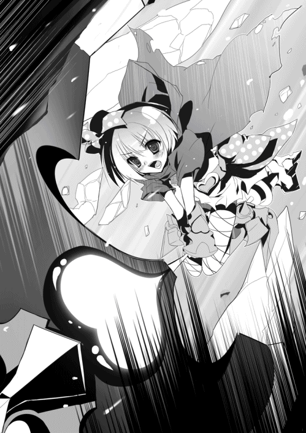
ともかく敵の動きが止まった以上、早くこの場を離れるべきだった。
ティグルの指揮によって二百の騎兵はすばやくまとまり、海賊たちから距離をとる。
だが、そのまま逃走へ移ることはかなわなかった。ふたつの丘の間にいた海賊の部隊がようやく混乱から立ち直り、猛々しい叫びとともに襲いかかってきたのだ。避けることもできず、ティグル率いる二百の騎兵は海賊たちと衝突する。
色の違うふたつの絵の具をぶつけあわせたかのように両軍は入り乱れ、混戦となった。
これは、ティグルたちにとって非常に危険な状況だった。
もともと数では圧倒的に劣っている上に、離脱しようとしていたところを攻撃されたのだ。秩序だった反撃など望めない。ひとりの騎兵が槍を振るってひとりの海賊を打ち倒す間に、数人の騎兵がそれ以上の数の海賊に叩き潰される。
オルガは歯噛みした。どれだけ斬り伏せても、猛り狂った海賊たちは次から次へと襲いかかってくるのだ。おもいきって竜技で一掃しようにも、彼らはこちらに深く斬りこんでおり、いかに加減しようと味方を巻きこんでしまう。
幼さの残る顔を幾筋もの汗が伝い、薄紅色の髪が額と頬に張りついた。
ティグルも同じ理由から、黒弓の力に手を出しかねている。もはやためらっている状況ではないが、こうも敵味方が入り乱れていては、さすがに力の行使に踏み切れなかった。
──だけど、これ以上オルガに使わせるわけにはいかない。
黒弓を握り直し、ティグルがいよいよ決意を固めかけた、そのときだ。
──何だ......？
大気の変化に似たものを感じ、ティグルは南の方へ視線を向ける。若者に襲いかかろうとした海賊がいたが、マトヴェイに阻まれ、オルガに斬り捨てられた。薄紅色の髪の戦姫は怪訝な顔でティグルを見上げる。
「ティグル......？」
直後、遠くからあがった鬨の声が大気を激しく震わせた。味方も敵も驚いて双方の動きが止まる。声の聞こえてきた方向──南を見た。
彼らの視線の先には、数千もの騎影がある。風を受けてはためく彼らの軍旗には、アスヴァール王国の赤い竜が描かれていた。
騎兵たちは一塊の黒い影となって草原を駆け、大地を揺るがす勢いで向かってくる。彼らの槍や甲冑が、陽光を浴びて鋭い輝きを放った。
「タラード......？」
ティグルは、騎兵たちの先頭にいる男を驚きの眼差しで見つめる。兜をかぶっていないのではっきりとわかった。短い金色の髪に、引き締まった凜々しい顔。間違いない。
──間に合ったのか？
そのころになって、海賊たちも突然現れたこの騎兵集団が敵であることにようやく気付いた。だが、遅かった。タラードに率いられた騎兵たちは槍を振りかざして突撃する。
馬蹄で蹴散らされ、槍で突き崩されて海賊たちはおおいに乱れた。この騎兵たちは、彼らがいままで戦っていた者たちと違って体力に満ちあふれている。必死の抵抗はむなしく粉砕され、背を向けて逃げだしたがたやすく追いつかれた。
戦いの中で、タラードは目ざとくティグルを見つけて駆けよってくる。
「どうなっているかと思ったが、元気そうじゃないか」
さわやかな笑顔でそんな台詞を吐くものだから、ティグルとしては苦笑するしかない。顔は汗と埃と血飛沫にまみれ、矢の撃ちすぎで腕と手は痺れ、馬に乗りっぱなしで尻が痛いというのに。服だって何ヵ所か擦り切れており、汗と砂塵でぼろぼろだ。
「あなたにとって、疲れているというのはどういう状態なんだ？」
「一言で答えるなら、目が死んでいるかどうかだな。あんたの目はまだやる気に満ちている。そうだろう？」
「これは忠告だが、もっと条件を緩くした方がいい」
きわめて真剣な顔でティグルは言った。いまの返事が本気ならば、この男の部下はきっと過労で死んでしまうに違いない。
そのとき、ルドラーが兵を率いて戻ってきた。遅れたのは歩兵の足に合わせていたためだろう。赤い髪の騎士の簡単な敬礼にタラードはうなずくことで答えると、それが当然のような口調で言った。
「ルドラー。おまえは一旦南東へ退がれ。負傷者はサイモンに任せて、動ける者をまとめたら俺のところへ来い。それとこいつを借りていくぞ」
一方的な宣言にルドラーは困った顔になり、ティグルはため息をつく。ここは混乱と熱狂の渦中にある戦場であり、そういう場合ではないとティグルもルドラーもわかっているのだが、それでも最低限の説明は必要ではないだろうか。
「わかった。ただし、オルガとマトヴェイも連れていくぞ」
「ああ。最初のうちは動きだけ合わせてくれれば休んでいていいぞ」
あっさりとタラードは答え、ティグルは眉をひそめたものの彼に従うことにした。駆けつけたオルガとマトヴェイに「いっしょに来てくれ」とだけ告げる。ルドラーは兵をまとめて後退した。
タラードはティグルらを連れて、騎兵集団の後方へと移動する。騎兵たちを横目で眺めながらティグルは短く尋ねた。
「どれくらいいるんだ？」
七千だと答えて、タラードはようやく説明をはじめる。
「あんたがサリエンテスで戦うことを知ったのは、今日の夜明けごろだ。そのころオレはここからもっと南──バルベルデの南西あたりにいてな。間一髪だった」
ルドラーの放った伝令がバルベルデに着いたのは、昨日の夜だったらしい。伝令はそこからさらに南西へと馬を走らせ、ようやくタラードに会うことができたのだった。
ティグルは現在の状況を説明する。
「敵は二万近くいる。それから丘の向こうの敵本陣に五千から六千」
だいじょうぶなのかと言いかけて、ティグルは言葉を呑みこんだ。タラードの碧眼が不敵な輝きを宿し、口元に戦意をにじませた笑みが浮かんだからだ。
「見ていろ。海の上ならともかく、陸に上がった海賊なんぞオレの敵じゃあない」
海賊たちをさんざん蹂躙したタラード軍七千は、そこで急に前進を止め、隊列を整えて後退をはじめた。海賊たちは不思議がったが、すぐにその理由に気づく。丘の向こうにいた自分たちの仲間が、ようやくこちらへまわりこんできたのだ。
タラード軍が手出しをしてこないので、海賊たちは無事に合流を果たした。すでに四千近い死者を出していたが、それでもまだ一万六千を超える数が残っている。
やられっぱなしで引き下がれるかという思いで、海賊たちはタラード軍を睨みつけた。
彼らの視点から見ると、敵はふたつ存在する。さきほどまで戦っていたルドラー指揮下の約二千と、新たに現れたタラード率いる七千とだ。本来なら二千の敵を先に潰すべきだが、そうすれば七千の敵から攻められるのはあきらかだ。
「あいつらから仕留めろ！」
海賊の中でも統率力のある何人かが、タラードの率いる騎兵たちを武器や手で示しながら叫ぶ。疲れきっている二千の敵は援護もままならないはずだ。となれば、七千の新手から先に葬り去るべきだった。
殺意と暴力の奔流と化して、一万六千の海賊たちは地面を駆ける。彼らと対峙していたタラード軍は、恐れをなしたかのように次々と馬首を巡らせて逃げだした。
タラードの隣で馬を走らせながら、ティグルは感嘆の想いで左右や後ろへ視線を走らせる。逃げているというのに騎兵の隊列はほとんど乱れておらず、海賊たちとは常に一定の距離を保っているのだ。それは、タラードの統率力の高さを証明するものだった。
ふと、ティグルは眉をひそめて前方に目を凝らす。正確には、左斜め前。
三百アルシン先に、何台もの大きな荷車が並んでいた。そのまわりにはこれまた数人がかりでなければ抱えられなさそうな大きな袋がいくつも置かれている。
最初、ティグルは食糧やさまざまな消耗品を載せた輜重部隊かと考えたのだが、すぐに違うとわかった。遠目には木材で組み立てられており、車輪もついているので荷車に見えなくもないが、そうではない。
「目ざといな」
ティグルの表情の変化から見抜いたのだろう。タラードが戦意に満ちた笑みを浮かべ、馬足を緩めながら剣を掲げる。彼のあとに続く騎兵たちも同じように速度を落とした。
「投石機だ。ザクスタンのものを買い入れて、ラフォール──オレの部下が改良した」
──そんなものまで......。
タラードが現れてから、ティグルは驚かされっぱなしだ。
「七千もの騎兵もそうだけど、よくそろえられたな」
「たいしたことはしちゃいない。まあ、女をひとり口説いただけだ」
言葉はいかにも謙遜しているふうだが、青年の表情はあきらかに得意がっていた。
タラード軍は投石機の近くまで来ると馬を止める。それを待っていたかのように、投石機のそばに立って兵たちが慌ただしく作業を開始した。
大気を貫いて、石や土砂を詰めこんだ麻袋が次々と撃ちだされる。それらはティグルたちの頭上を越えて空に放物線を描き、追ってきた海賊たちの頭上に落下した。
とてつもない重量の麻袋が海賊たちを押し潰し、衝撃の余波でもって吹き飛ばす。地響きは、着弾地点から離れている騎兵たちの肌さえもびりびりと震わせた。
土砂が跳ねあがり、砂塵が舞う。血と肉片と骨片が泥に混じり、地面に溶ける。腕や脚はちぎれ、身体はひしゃげて原形をとどめない。悲鳴よりもむしろ、絶望の呻きが彼らを包みこんだ。
投石機によって命を落とした者は二百に満たない。だが、この攻撃は彼らの精神に打撃を与え、すくみあがらせ、浮き足立たせた。その隙にタラード軍七千は隊列を整えて反転し、海賊たちに再び槍先を向ける。馬蹄の音を響かせて地を蹴った。
先頭にいた海賊たちはもはや戦意を喪失している。わっと叫んで左右へ逃げ散った。
その後ろ、投石機による攻撃をまぬがれた者たちはまだ戦意を残していたが、息の上がっていない者はごく少数で、騎兵の突撃に耐えるだけの力はほとんど残っていない。隊列も細長く伸びて乱れきっている。
展開されたのは一方的な蹂躙だった。熟しきった果物を切るのにも似た容易さで、タラード軍は海賊たちを真っ二つに引き裂く。猛々しく馬を駆って彼らの後方へ突き抜けた。
事前にタラードが命令していたのだろう、騎兵たちは流れるような動きで左右に展開する。突破され、分断されて混乱している海賊たちの横を疾駆し、側面に喰らいついた。
タラードの用兵は、いってしまえば定石通りだ。中央突破によって分断した敵を、さらに細切れにしてしまおうというものである。ただし、その手腕は兵を指揮した経験のある者ならば誰もが目を瞠るほどに鮮やかだった。
槍で突かれ、あるいは薙ぎ払われて海賊たちは見る見るその数を減らしていく。一万六千もの海賊たちは、その半分以下の敵に翻弄されていた。
投石機が前進する。わずか十アルシン進み、そこから石を詰めこんだ麻袋を撃ちだすだけでも百五十秒近い時間を必要とする兵器だが、それだけの破壊力があった。
タラード軍の騎兵は敵の後方から中央あたりにいるため、投石機は海賊たちの先頭からその手前を狙う。命中せずともよいのだ。巨大な石が降ってくるというだけで、敵は怯えて戦いどころではなくなる。
「あの投石機を潰せ！」
海賊たちの誰かが叫び、それを聞いた数百人が死体を踏み越えて駆けだした。
投石機までの距離は二百アルシンに満たない。動きも鈍い。いっせいに突撃すれば、たやすく破壊できるだろう。
しかし、彼らの望みはかなわなかった。投石機を動かしていた兵たちは、敵の接近に気づくと弩を地面から拾いあげてかまえたのだ。敵が向かってきたときに備えて、地面に用意しておいたのだった。弩には、すでに太矢が装填されている。
機械的な射出音が数百にも重なって大気を打ち砕いた。正面から太矢の嵐をくらった海賊たちはもんどりうって地面に倒れる。後続の者たちはおもわず足を止めたが、タラード軍に新たな矢を装填する時間を与えただけだった。
第二射目が新たな犠牲者を地面に叩きつける。ここに至って、ついに海賊たちの戦意は尽きた。敵に背を向けて逃げだした数人が、瞬く間に数十人となり、数百人に増える。朽ち果てた帆布が風に煽られてぼろぼろとちぎれるように、海賊たちは瓦解した。
「海賊どもは追うな。まだ戦いは終わっていない！」
タラードは追撃を禁じ、逃げる海賊たちは放っておいて隊列を整えるよう命じる。タラードとティグル、オルガ、マトヴェイは馬足を速めて騎兵たちの脇を抜け、再び彼らの先頭に立った。左手にそびえるふたつの丘を見上げて、タラードは聞いた。
「この丘の向こうにエリオットがいるんだったな？」
「俺たちが丘の上にいたときの話だ。あれから少なくとも四半刻は過ぎている」
ティグルは慎重に答える。タラードは問題ないというふうに笑った。
七千の騎兵は丘のふもとに沿って進み、ぐるりとまわりこむ。遠くにエリオット軍の本隊が見えた。ティグルが最後に確認したときと、ほとんど位置は変わっていない。
──このまま真正面から決戦を挑むとも思えないが......。
正面には約五千の海賊。彼らを突破しないことには、エリオットのいる本陣には近づけない。また、突破できたとしてもハミッシュの率いる長弓部隊が待ちかまえている。
そして、タラード軍の兵たちは士気こそ高いものの、倍以上の海賊との戦いでさすがに疲労していた。負傷者も数十人ほどいる。
そのとき、まるでティグルの懸念を見透かしたかのようにタラードがこちらを見た。碧い瞳をきらめかせ、いかに驚かせようかとたくらむ手品師のような笑みを浮かべて。
「突撃はしない。だが、ぎりぎりまでやつらに近づく」
海賊たちとの距離が三百アルシンほどまで縮まったところで、タラードはさっと手を挙げた。タラード軍は速度を落として進軍を止める。
ティグルはさすがに驚きを隠せない顔でタラードを見た。敵を目の前にして馬を止めるなど、自殺行為としか思えない。これには敵の海賊たちですら不審そうな目を向ける。
軍には停止を命じたまま、タラードは悠然と馬を前へ進ませた。それが合図だったかのように、騎兵たちの中から大柄な体躯を持つ者が十数人ばかり現れて彼につき従う。
──わからない。タラードは何をしようとしているんだ？
ティグルは額から頬につたう汗など気にもかけず、矢筒から矢を取りだした。黒弓につがえこそしないものの、即座に射放てるよう身構える。
海賊たちとの接触まであと百アルシンというあたりで、タラードは馬を止めた。マトヴェイに優るとも劣らない大柄な騎兵たちは、横一列になって彼の後ろに並ぶ。
タラードはおもいきり息を吸いこむと、声をかぎりに叫んだ。
「エリオット第二王子殿下！ エリオット＝ブルーム＝ゴドウィン＝ナサニエル＝ガラハッド＝アスヴァールに申しあげる！」
このとき、ティグルははじめてエリオットの正式な名を知った。
アスヴァールの王族は男性ならば名を三つ、女性の場合は名を二つ持つ。一つめの名、姓、二つめの名、三つめの名、円卓の騎士の名、国名という順だ。円卓の騎士の名は、その加護を与えられるようにという願いがこめられている。
金髪の青年の台詞を、彼の後ろに控えている巨躯の騎兵たちが大声で唱和した。タラードひとりの叫びならば海賊たちに聞かせるのがせいぜいだったが、彼らが声をそろえて虚空に吼えると、それは風に乗って本陣にいるエリオットのもとまで届く。
「我が名はタラード＝グラム！ 第一王女殿下たるギネヴィア＝コルチカム＝オフィーリア＝ベディヴィア＝アスヴァールさまの命を受けてここに参上した！ 貴様に第一王女殿下のお言葉を伝える！」
タラードがこの言葉を聞かせたい相手は海賊ではない。その向こうにいるエリオットだ。
「兄に殺されかけた貴様にも言い分はあろう。だが、平和と安寧に尽力せよという先王ザカリアス陛下の遺命を忘れたか！ 海賊を従えて海を荒らし、民を害し、無法のかぎりを尽くす貴様に赤い竜の旗を掲げる資格はない！ 王族の咎は王族が罰する。我が名において貴様を討ち、アスヴァールの政事を正しき道に戻す！」
タラードが言葉を切ると、沈黙が戦場に訪れる。ほとんどの者が、この短い金髪の青年の放つ覇気に圧倒されていた。
◎
エリオット軍の本陣では、総指揮官たるエリオットが呆けた表情で立ち尽くしている。
「ギ、ギネヴィア？ ギネヴィアだと......？」
タラードの登場というもっとも恐れていた事態に加え、思いもよらない名前が出てきたことに愕然として、エリオットは妹の名を繰り返しつぶやいた。
父と母を同じくする兄妹とはいえ、とくに仲がよかったわけではない。エリオットが彼女を相手にしなかったのは、ジャーメインという先に討ち果たすべき敵がいたからだ。
それだけに、衝撃は大きい。エリオットはぐらりと身体をよろめかせて倒れかけたものの、そばに控えていたハミッシュに支えられ、続いて聞こえた父の名に反応してようやく我に返った。整った顔を怒りで赤黒く染め、わなわなと肩を震わせて拳を握りしめる。
「あ、あのあばずれが！ 引きこもっておとなしくしていればよいものを、漁村生まれの平民風情に股を開いていたのか！ 王族の恥さらしが俺を逆賊呼ばわりしやがって！」
王族らしからぬ口汚さで、エリオットは妹を激しく罵った。アスヴァール王国の旗を掲げる資格はない、という言葉はそういう意味だ。アスヴァールの第二王子たる人物に対して、これほど痛烈な否定もないだろう。
エリオットが憤激している間にタラードは宣告を終える。だが、金髪の青年の口上はまだ終わっていなかった。エリオットには見えなかったが、タラードの碧眼は、彼の正面にいる海賊たちへまっすぐ向けられている。
「海賊たちよ！」
やはりというべきか、この叫びも騎兵たちが連呼したのでエリオットの耳にもしっかりと届いた。海賊たちは戦いを忘れてしまったかのように、言葉の続きを待っている。
「焼き、奪い、殺す。今日まで飽くことなくそれらを繰り返してきたおまえたちの罪は、あまりにも重い。降伏を受け入れられぬほどに」
海賊たちがいきり立つよりも早く、タラードは咆えた。
「だが！ エリオットの首を持ってくれば、特別に罪を許そう。選ぶがいい。おまえたちの仲間のように、この地で草に埋もれて死ぬか！ 捕らえられて町や村でさらし首になるか！ それとも罪を許されて生をつなぐか！」
負けじとばかりにエリオットも叫んだ。その顔はあまりにも激しい怒りのために、醜悪なほどの歪みを見せている。
「俺の前にタラードの首を持ってこい！ 持ってきた者には、望むままに褒美をくれてやるぞ！ 財貨でも爵位でも美女でも、欲しければおまえたちの実力でつかみとれ！」
欲望を煽られて海賊たちは色めき立ち、喊声をあげ、武器を振りあげてタラード軍へ向かっていった。エリオットはひとまず安心すると、傍らのハミッシュにささやく。
「もしもあいつらがこちらに向かってくるような素振りを見せたら、かまわん。射殺せ」
ハミッシュは驚愕の面持ちで主を見つめた。エリオットの口元には酷薄な笑みが浮かび、その両眼は猜疑心に満ちて鈍い光を放っている。
「しょせんは海賊だ。タラードの妄言に惑わされる愚か者がいるかもしれん。そんな連中でも、射殺されるとわかれば死にもの狂いで戦うだろうよ」
逆効果ではないか。そうハミッシュは思ったものの、口にすることはできなかった。いまのエリオットに反論すれば、彼の猜疑心が自分に向けられる。たとえそれがどのような進言であっても。
ハミッシュは空を仰いだ。青空の下で、赤い竜の軍旗が風を受けてはためいている。
海賊たちがタラード軍を圧倒してくれることを、願うしかなかった。
苛烈な選択を海賊たちに突きつけるタラードの背中を見ながら、ティグルは感嘆すると同時に戦慄を禁じ得なかった。この金髪の青年の狙いを悟ったのだ。
タラードは悠然と戻ってくるつもりだったようだが、彼の背後で海賊が動きだしたことに気づくと、騎兵たちとともに馬を走らせた。もっとも慌てた様子はまったくなく、その顔には余裕の笑みさえ浮かんでいる。
「後退せよ！」
待機していた兵に命令を下しながらタラードは自軍に駆けこんだ。自分の隣に馬を並べた金髪の総指揮官にティグルは尋ねる。
「海賊たちを劣勢に追いこんで、長弓部隊と噛みあわせるつもりだな？」
質問ではなく、確認だった。タラードは嬉しそうに表情を輝かせる。
「さすがだな。たったあれだけでよくわかったものだ」
エリオット軍本隊の持つ脅威は何か。五千の海賊ではない。
三百アルシン離れたところから、当たり前のように矢を飛ばしてくる長弓部隊だ。これを蹴散らすにはそうとうな被害を覚悟しなければならないが、タラードはその役どころを海賊たちに押しつけるつもりなのだった。
──とんでもない男だ......。
ティグルはため息をつく。タラードの宣告は見事というしかなかった。
ギネヴィアの名を出すことで己の大義を示して兵たちの士気を高め、同時にエリオットを挑発する。堂々と海賊たちに裏切りを呼びかけたのも、長弓部隊の盾にするだけではない。エリオットの怒りを誘い、猜疑心を煽る目的もあるのだろう。
急に、ティグルは自分の身体が軽くなった気がした。ずうっと背中にのしかかっていた重苦しい荷物を地面に下ろしたときのような解放感が若者を包む。
──そうか。
すぐに理解できた。タラード＝グラムが、この戦場の主役となったからだ。
タラード軍の総指揮官はもはやルドラーでもティグルでもなく、この青年だった。
「騎兵を貸してくれ。百でいい」
タラードに、ティグルは何の気負いもない口調で頼む。総指揮官の青年はこちらを振り向くと、驚きを示すように何度か瞬きをしてティグルを見つめた。
「貸すのはかまわないが、何に使うつもりだ？」
「頃合いを見て敵の側面を突く」
この戦いはタラードが勝つだろう。その確信がティグルにはある。
自分がやれることはやった。ならば、あとは本来の目的を果たすだけだ。
「しかし、百でいいのか？ その五倍から十倍でもいいぞ」
タラードの申し出をティグルは謝絶し、オルガとマトヴェイとともに百騎だけを従えて戦列から離れた。
草原を駆けていく若者と騎兵たちを見送ると、タラードは後ろの海賊を振り返る。こちらの後退に誘いこまれる形で一部が突出し、隊列は長く延びていた。
タラードは自軍から二千の兵を割いて、弧を描くように迂回させる。彼らは草原に馬蹄の音を轟かせ、土煙を巻きあげながら海賊たちの側面に槍と剣を鋭く突きこんだ。
騎兵たちの剣は海賊の頭部を砕き、槍は胸板を貫いて鮮血を地面に振りまく。海賊たちの手斧や棍棒はそのほとんどが馬上の敵に届かず、彼らは一方的に切り崩された。
海賊たちの前進が止まったのを見て、タラードは反撃に移る。赤い竜の軍旗に混じって黄色い旗がいくつも打ち振られ、後退していた騎兵たちは次々に馬首を巡らせた。
正面と側面から攻めたてられておおいにたじろぐ海賊たちへ、タラードは再度呼びかけを行う。もちろん、身体も声も大きな騎兵たちに唱和させた。
「命乞いは聞かん！ おまえたちを助けるものはエリオットの首だけだ！」
怒号と蛮声が交錯し、刃鳴りと騒音が幾重にも響く殺しあいの場で、タラードたちの声を聞いた者などほとんどいない。タラード自身、すべての海賊に聞かせようなどとは露ほども考えていなかった。
「百人ぐらいがオレの声を聞いたとして、その中の五、六人が動けばいい。それを見た数十人が遅れるなとばかりに続き、さらに数百人があとを追う。そういうものだ」
自軍の後方から、タラードは冷静な視線を戦場に向けている。はたして、海賊たちの動きは徐々に乱れはじめた。
彼らが欲望を満たすことができたのは、上陸したその日だけだ。それ以後は強行軍で疲労し、夜襲をかけられて傷つき、奪うべき村は先に焼かれ、城砦を陥としても何も得られなかった。敵を追いつめていたはずの二万の仲間は、敗れて逃げ散った。
もはや彼らは、勝利とその果てにある褒賞を信じることができなくなっていた。
踵を返し、言葉にならない叫びをあげて海賊たちは敵に背を向ける。タラードの呼びかけに従ってエリオットを裏切ったのか、戦意がくじけての潰走なのかは判然としない。ただ、彼らがもはやタラード軍と戦う意志を捨て去ったのはあきらかだった。
逃げ崩れ、こちらへ押し寄せてくる海賊たちの姿を見てエリオットはハミッシュに命令を下す。巨躯の長弓使いは黙って従い、彼の配下の兵もためらいなく矢を射放った。
同じエリオット軍とはいえ、やつらは海賊であって仲間などではないという意識が長弓兵たちにはある。まして彼らの主であるハミッシュの命令だ。反対する者は皆無だった。
空を引き裂いて、無数の矢が海賊たちに降り注ぐ。悲鳴をあげる彼らを、エリオットは大声で怒鳴りつけた。
「戦え！ 敵は目の前にいるではないか！ 敵と戦わぬ者には矢が飛ぶと思え！」
その声を聞いた海賊たちの反応は三つにわかれた。ある者は呆然として立ちすくみ、またある者は自棄になってタラード軍に立ち向かう。
そして、ある者は何ごとかをわめきながら長弓兵たちへ向かっていき、再び矢を浴びて踊るように倒れ、息絶えた。ハミッシュは厳しい表情でエリオットを振り返る。
「お逃げください、殿下」
「......逃げる、だと？」
唖然とするエリオットにかまわず、ハミッシュは馬を用意するよう部下に命じた。
「もはや、ここでの勝利はかないませぬ。なにとぞ、本島まで」
ハミッシュが王子の命令に従い、味方であるはずの海賊たちに矢の雨を浴びせたのは、彼らの奮戦を期待してのことではない。エリオットが逃げる時間を稼ぐためだ。戦場の喧騒はもうここまで届いている。急がねばならなかった。
海を渡って本島にたどり着ければ、そこにはエリオットを支持する貴族たちがいる。彼らの抱える兵をあてにすることもできる。おとなしいギネヴィア王女や平民出身のタラードに反発を持つ者も少なくないはずで、再戦は充分に可能だ。
だが、エリオットはすぐにはうなずかなかった。彼の両眼はそれぞれ焦慮と狼狽に満ちて、すぐそこまで迫っているタラード軍と、後方にある天幕とをいそがしく行き来する。天幕には戦姫ソフィーがいるのだ。
「戦姫は、のちほど私が殿下のもとまでお連れします。いまはお急ぎください」
ハミッシュの部下が馬を引いてきた。鞍はすでに載せてある。ようやく決断し、エリオットは慌ただしく騎乗した。
「戦姫は頼んだぞ、ハミッシュ」
王子の台詞には一言の礼も、部下の身を案じる言葉さえなかったが、ハミッシュは黙然とうなずく。草原を北西へ駆けていくエリオットを見送り、小さく息をついた。部下に戦場を任せ、ハミッシュはソフィーのいる天幕へと足を向ける。
眉をひそめた。十を超える数の人影が、彼女の天幕を取り囲んでいるのだ。褐色の肌とその服装からムオジネル人だとすぐにわかった。
「戦場の混乱にまぎれて戦姫を奪いに来たか。狐どもが」
家畜や畑を食い荒らす狐は、アスヴァールではとくに害獣とされている。ムオジネル側に言わせれば、約束通り食糧や物資を運んできたのだからソフィーを連れていくのは当然のことなのだが、ハミッシュはそのような事情を斟酌しなかった。
左手に弓を、右手に矢を握りしめてハミッシュは駆けだす。彼の視線の先で、ふたりのムオジネル兵が天幕の中に入りこんだ。
次の瞬間、地面に杭を打ちこむような鈍い音とともに、そのムオジネル兵たちが天幕の外へと吹き飛ばされる。宙を舞い、地面に倒れた。天幕を囲んでいた者たちがどよめきの声をあげる。ハミッシュも目を瞠った。
ムオジネル兵たちは警戒するように天幕から一、二歩離れると腰の剣を抜き放つ。そして、天幕の中から足を引きずるようにしてひとりの女性が現れた。
乱れた金色の髪と、汚れて黒ずんだぼろぼろのドレス。靴はなく、裸足で地面に立っている。ソフィーだ。満身創痍の見るも無残な姿だが、緑柱石の瞳は揺るがぬ強い意志を放ち、鉄の枷で拘束されたその手には金色に輝く錫杖があった。
──あんなものはなかったはずだ......！
ハミッシュの呻き声は、驚きのあまり声にはならない。彼の認識は正しく、ソフィーの手にある黄金の錫杖は、エリオットが彼女を捕らえた際に取り上げ、海に捨てたものだった。それがいまソフィーの意志に応じ、空間を超えて戻ってきたのだ。
隊長格の男が、ムオジネル語で何かを叫ぶ。傷つけてもよいから捕らえろという類の命令だろう。ムオジネル兵たちはいっせいに斬りかかる。
声をあげて彼らを制止しようとしたハミッシュは、驚くべき光景を目にした。
前後左右から迫る白刃の群れをソフィーは巧みに避け、あるいは両手で持った錫杖で受け止める。枷のために腕が不自由で、しかもその枷は鉄鎖によって重い鉄球を結びつけられているというのにだ。それだけにとどまらず、彼女は反撃にすら出た。
風が唸り、黄金の閃光が大気に鮮やかな軌跡を描く。ソフィーが錫杖を振るうつど、ムオジネル兵は短い呻き声を発して次々と大地に叩きつけられた。
たじろぐムオジネル兵たちとは対照的に、ソフィーは疲労など感じさせないかのように背筋を伸ばし、毅然とした態度で残った敵を見据えている。その姿はまぎれもなく一騎当千を謳われる戦姫──竜具『光華』とともにある美しい光華の耀姫だった。
さらに数人がソフィーに打ち倒され、天幕の近くに立っているムオジネル兵はいよいよふたりを残すのみとなる。隊長格の男と、もうひとりだ。
ふたりは前後からソフィーに襲いかかった。ソフィーはまず背後の敵を突き倒す。それから返す一撃で正面の敵を叩き伏せようとしたのだが、黄金の錫杖は空を切った。
正面の敵──隊長格の男は身を低くし、頭から勢いよく地面に滑りこんで光華をかわしたのだ。男の狙いはソフィーではなく、彼女の手枷から延びた鎖だった。
男は鎖をつかみ、力強く引っ張る。金色の髪の戦姫はバランスを崩して転倒した。
鋭く突きだされた剣を、ソフィーは身体をひねってかろうじて避ける。だが、完全にかわすことはできず、ドレスの胸元が大きく切り裂かれた。白い肌に赤い筋が走り、豊かな胸が露わになる。
「腕の一本も切り落とせばおとなしくなるか」
左手で鎖を握りしめながら身体を起こすと、男は苛立たしげに吐き捨てた。
直後、空気を裂く音が短く響いて、男の身体がぐらりと傾く。倒れた。その頭部を一本の矢が貫いており、流れでた血が地面を赤く染めていく。
「ご無事か」
ソフィーに駆け寄りながらそう声をかけたのは、ハミッシュだった。さきほどまで彼女の戦いぶりに見惚れていたのだが、ソフィーの危機に気を取り直し、すかさず矢を射放ってムオジネル人を倒したのだ。
金色の髪の戦姫にごつい手をさしのべながら、ハミッシュの両眼は彼女の胸元へと吸い寄せられる。長弓使いの目に情欲の色が揺らめいた。
ソフィーは男の表情に気づいたが、重りつきの枷をはめられた身では肌を隠すことも容易ではない。身をよじり、背中を丸めてハミッシュの視線から逃れようとする。その拍子に、彼女の手にある金色の錫杖が地面を軽く叩いて涼やかな音を響かせた。
錫杖の音によってハミッシュは我に返ると、雑念を払うように首を強く振る。敵はすぐそこまで迫っているのだ。一刻も早くこの場を離れなければならなかった。
ソフィーから視線を離し、ハミッシュは周囲を見回す。その目がある一点で止まった。
遠くから、こちらへまっすぐ駆けてくるひとつの騎影がある。ハミッシュの優れた視力は、馬に乗っている人物の姿を正確に捉えた。二十歳にはなっていないだろう若者だ。くすんだ赤い髪。革鎧。茶色の外套。左手には黒い弓。
口元に笑みが浮かんだ。ハミッシュは、この若者がティグルヴルムド＝ヴォルンという名であることさえ知らない。知っていることはただひとつ。恐るべき弓の技量の持ち主ということだけ。そして、彼にとってはそれで充分だった。
向かってくる者が、たとえばタラードであったらハミッシュはためらうことなくソフィーを人質として扱っていただろう。だが、敵はあの弓使いだった。ハミッシュにとって、己の弓で倒さねばならない相手だった。
──およそ五百アルシン......！
矢を取りだして長弓につがえながら、自分とティグルの間の距離を目測で判断する。奇跡的な状況といってよかった。この広く混沌とした戦場で遭遇できたこともだが、いま、自分と若者の間には障害となるべき何物も存在しないのだ。
円卓の騎士たちに幸運を感謝し、小さく息を吸い、大地を踏みしめてハミッシュは長弓を力強く引き絞る。弓弦がかすかにきしむ音をたてた。このとき、男の頭の中には狙いを定めた若者のことしかない。戦も、エリオットも、ソフィーも完全に消え去っていた。
ハミッシュの視線の先では、若者も黒弓に矢をつがえている。
──三百アルシンまで近づけば、やつも矢を射るだろう。その前に倒す......！
卑怯だとは思わない。弓とは、そういう武器だ。敵の武器の届かぬ距離から攻撃するためのものだ。あの黒弓の若者もわかっているはずである。
五百アルシンあった距離が、四百アルシンに縮む。射程距離内だが、ハミッシュは呼吸を止め、指を放したくなる衝動に必死に耐えた。まだ速い。あともう少し。
──三百七十、三百六十......三百四十！
弓弦が震え、風をまとって矢が放たれる。見事な曲線を描いてティグルへ飛んでいく矢を見て、ハミッシュは会心の笑みを浮かべた。理想の軌道。最高の一矢だ。
もはや馬足を緩めようと、右か左にかわそうとしても間に合わない。馬の背に身を隠したとしても、馬首ごと若者を貫くだけの威力がこの矢にはある。
ティグルが矢を放ったのは、そのときだ。ハミッシュは眉をひそめた。まだこちらに届く距離ではない。風も非常に弱いものながら、ティグルにとって逆風になっている。
──飛んでくる矢に慌ててしまい、うっかり射放したのか？
だが、ハミッシュの推測はほぼ一瞬後に否定された。黒弓から放たれた矢は、風を貫いていままさにティグルを射倒さんとしていたハミッシュの矢に衝突したのだ。
ハミッシュの矢はティグルの矢を打ち砕いたものの、それによって最初の軌道から大きく外れ、しかしその威力を証明するかのように、地面に深く突き刺さる。
アスヴァールの長弓使いは、呆けたように口を半開きにしてその場に立ち尽くした。驚愕どころではない。自分の見たものが、信じられなかった。
ティグルはうっかり矢を射放したのではない。ハミッシュを狙ったのでもない。自分に向かって飛んできた矢を狙ったのだ。
嘘だ、という呻き声がハミッシュの震える唇の間から漏れた。
そんな真似が、人間にできるはずはない。ハミッシュもひとりの弓使いとして、アスヴァール国内にかぎってではあるが多くの弓使いと会って言葉をかわし、また弓にまつわる逸話や伝承に耳を傾けてきた。
だが、自分に迫る矢を、弓矢でもって撃ち落とす者の話など聞いたことがない。そんなことができる者は人間ではない。化け物か魔物の類だ。
刹那、ハミッシュの目に奇妙な光景が映った。馬に乗っているのは若者ではなく、人間ぐらいの大きさの、漆黒の竜だった。それが長大な翼をたたみ、馬の背にうずくまるようにしてハミッシュを睨みつけているのだ。
もちろんそれは錯覚だった。ぎょっとして目を凝らしたときには、あのくすんだ赤い髪の若者が新たな矢を弓につがえ、こちらを見据えている。それに気づいたハミッシュは、自分も慌てて新たな矢を弓につがえた。
しかし、遅かった。ハミッシュが呆然としていたのは四呼吸分ほどのごく短い時間だったが、その間にティグルは充分に弓を引き絞り、距離も縮めていたのだ。
若者が矢を放つ。わずかに遅れてハミッシュも弓弦の音を響かせた。
巨躯の長弓使いの額を、ティグルの矢が深く穿つ。一方、ハミッシュの射放った矢は若者の頬をかすめてあらぬ方向へ飛び去った。
目を丸く見開いてハミッシュは倒れる。大きな背中が地面についたときには、息絶えていた。己の死と、矢を外したことと、どちらをより悔いたのかは彼にしかわからない。
ティグルはそのまままっすぐ駆けてくると、ソフィーの前で馬を止めた。汗と血と埃にまみれ、肩で息をしていたが、呼吸を整える暇も惜しいとばかりに馬から下りて金色の髪の戦姫に歩み寄る。
ソフィーの前に立ったとき、ようやくティグルは彼女のまとっているドレスの惨状に気づいた。顔を赤く染めつつ、自分の外套をすばやくソフィーの肩にかけて胸を隠す。それから彼女の手を拘束している鉄枷に痛々しい目を向けて、気遣う表情を見せた。
「だいじょうぶか？」
「ティグルヴルムド......卿？」
ソフィーの反応は鈍い。彼女は呆然として、信じられないものを見るかのように目を丸くしていた。だが、目の前に立っている若者が夢でも幻でもないことを自覚すると、緑柱石の瞳はみるみる潤み、彼女の目から大粒の涙があふれて頬をつたう。
身体ごとぶつかる勢いでソフィーは若者にすがりつき、その胸に顔を埋めて泣いた。母親を見つけた幼い迷子のように。
ティグルは驚いた顔をしたものの、すぐに穏やかな笑みを浮かべて右腕をソフィーの背にまわし、優しく抱きしめる。
ふたりはしばらくの間そうしていた。とはいえ、百を数えるかどうかというぐらいだ。近づいてきた雄叫びと馬蹄の轟きが、ふたりに顔を上げさせる。
我に返ると、ソフィーは急にいろいろなことが恥ずかしくなった。外套をかけてもらったことも、泣いてしまったことも、いまこうして抱きしめてもらっていることも。
「あ、あの、ええと......」
彼女らしくもなく、とっさに言葉が出てこない。どうしてアスヴァールにいるのか。なぜこの戦場にいるのか。いったいどういう状況なのか。疑問は次から次へと湧いてくるのだが、それらを解決するより先にソフィーは感情的になった自分をごまかすことにした。
「王子さまに助けてもらったお姫さまって、こういう感じなのかしらね」
「......ずいぶん血と泥にまみれた王子さまとお姫さまだな」
他愛もない冗談をかわし、おたがいの格好を笑いとばして、ソフィーはようやく余裕が出てきたようだった。ただし、彼女の手はティグルの服の裾を強く握りしめている。
草原を駆けてきた騎兵の集団が、ふたりの左右を通り過ぎていった。その中で一騎だけが馬首を返してティグルとソフィーのところへ戻ってくる。タラードだった。
「そちらの見目麗しい姫君が戦姫どのか？」
馬上から、タラードは冗談めかした口調で尋ねる。ティグルはうなずいた。
ソフィーは目の前にいる青年がこの軍の総指揮官だとはさすがにわからなかったが、隣に立っているティグルの反応から礼節をもって接するべき相手だと判断する。ティグルから離れ、前へ進みでて小さく頭を下げた。手の枷から延びた鎖がじゃらりと鳴る。
「このような姿で失礼します。ジスタートの戦姫ソフィーヤ＝オベルタスと申します」
「やはりか。エリオットによって囚われの身となったと聞いていたが、苦労なされただろう。戦場ゆえ、馬上にて失礼する。オレはタラード＝グラム。ギネヴィア王女殿下の名代として、あなたを保護させていただく」
「お噂は聞いております。ご苦労をおかけしますが、よろしくお願いいたしますわ」
使者としての礼儀をたもって、ソフィーは再度頭を下げた。ご安心をと彼女に答えて、タラードはティグルに視線を向ける。
「エリオットを見なかったか？」
ティグルは首を横に振った。周囲を見回せば、海賊たちは総崩れとなって散り散りに逃げており、戦はすでに掃討戦に移っている。ムオジネル兵やハミッシュの部下だった長弓兵らは武器を捨てて投降していた。ティグルはタラードに尋ねる。
「逃げたのか？」
「そうらしい。もし本島まで逃げられたら、厄介なことになる」
タラードの顔には焦りと苛立ちが浮かんでいた。そのとき、ソフィーが口を開く。
「おそらく、タラード卿のお役に立てると思います」
天幕の中に閉じこめられている間も、ソフィーはエリオットや海賊たちの話に聞き耳を立てていた。天幕越しだったため聞きとれないこともしばしばあったが、会話の断片や自分が置かれた状況から推測することはできた。
「エリオット王子が最終的に本島を目指して逃げるのならば──」
十数日ほどさかのぼり、ティグルたちをルクス城砦に送りだしたあとのタラード＝グラムの行動を簡潔に記すと次のようになる。
彼はまず、ギネヴィア王女のもとへ向かった。王女の所在については、タラードの部下であるクレスディルが調べあげていたのですぐにたどりついた。
ギネヴィアは最初タラードに会おうとしなかったが、ジャーメインの死を告げられて謁見を許可した。そしてタラードは、彼に言わせれば王女を「口説いた」のだ。
ギネヴィアを支持する者はわずかながらおり、その中でもタラードに賭ける覚悟を決めた者たちが兵と食糧を用意した。その一方で、クレスディルらがジャーメイン派や中立派の貴族の中で見込みのある者に声をかけ、やはり兵と武器を出させた。
こうして十日足らずで一万近い兵をそろえてバルベルデへ帰還しつつあったころ、タラードはルドラーの放った伝令による報告を受ける。
彼は急いでサリエンテスに進路を変え、ぎりぎりのところで間に合ったのだった。とくに、投石機の部隊がサリエンテスに近い地域にいたのは幸運だったといっていい。もう少し離れていたら戦に間に合わず、タラード軍の被害は増していただろう。
◎
戦場から大きく離れたころ、エリオットは自軍の敗北を知った。サリエンテスの野は起伏の少ない草原で、太陽がとうに中天を過ぎたとはいえ空はまだ明るい。エリオット軍の全面潰走は遠目にもはっきりとわかるほどだった。
とにかく逃げなければという想いで、アスヴァールの第二王子は馬を走らせる。北、という単語をうわ言のように何度もつぶやいた。
もしものときに備えて、エリオットはルルカ村に何隻かの船を待機させている。ルルカ村にたどりつけば、本島まで一気に戻れるはずだった。
ルルカ村を焼き払ったのは海賊たちの欲望をひとまず満足させるためだったが、それだけではない。焼かれた村など見向きもされないだろうという考えもあったのだ。
「そうだ。タラードが俺をさがすとしても、ルクス城砦やハミッシュの領地などから手をつけるだろう。そうしてやつが俺を見失っている間に、本島に帰還する。あらためて兵をそろえ、タラードもギネヴィアもまとめて葬り去ってやる......！」
しかし、エリオットがルルカ村に着くまでには時間がかかった。供の者はおらず、馬は一頭だけなので慎重に進まなければならなかったからだ。
昼の間は街道から外れた茂みに身を潜め、夜になると馬に乗って街道を駆ける。食糧や水は、街道付近の村や集落に忍びこんで盗んだ。剣を持ってはいるものの、エリオットは武芸に秀でているわけではない。正面から堂々と奪うのは危険だった。
屈辱感にさいなまれながらの逃避行を続け、エリオットがどうにかルルカ村に戻ってきたのはサリエンテスの戦いから三日が過ぎたころだ。
海賊による破壊と略奪のあとは生々しく、建物はことごとく焼かれて、黒焦げの柱や壁をわずかに残すのみである。
地面には血の跡がいくつもにじみ、焼け残ったものが散乱していた。あちらこちらに転がっている死体は、海鳥やカラスの餌になっている。
廃墟と化した漁村の奥、粗末な造りの船着き場には三隻の船の姿があった。エリオットは疲れきった表情の中に安堵の笑みを浮かべ、大声で呼びかけながら馬を進める。
「俺だ！ エリオットだ！ すぐに梯子を下ろせ！」
船上の海賊たちからは何ごとだと訝しがる声があがったが、とにかく彼らは梯子を用意して船と船着き場をつないだ。
そのときだった。村の入り口に数十もの騎兵が現れたのは。
エリオットはおもわず顔を青ざめさせたものの、すぐに勝ち誇った顔つきになり、遠くの騎兵たちへ嘲笑を浴びせた。おたがいの距離を考えれば、たとえ騎兵が全速力で駆けてきたとしても、もう自分を捕らえることはできない。自分は逃げきったのだ。
馬から下りるのももどかしく、エリオットは梯子を登って船の中に飛びこむ。騎兵たちに視線を向けると、彼らは諦めたのか村の入り口から動かずにいた。
「残念だったな。そこでせいぜい悔しがって俺を見送るがいい」
だが、エリオットはそこで顔をしかめる。三つの騎影が村の中へ入ってきたのだ。
ティグルとオルガ、そしてソフィーだった。ソフィーの手にもはや鉄枷はない。彼女を助けだしたとき、オルガの羅轟で砕いたのだ。
船が船着き場から離れる。一方、ティグルたちは船着き場から三百アルシンほど離れたところで馬を止め、地面に下り立った。
ティグルは黒弓に矢をつがえると、静かに弓弦を引き絞る。それに呼応して、若者の左右に立つ戦姫たちの竜具がそれぞれ異なる光を放った。
オルガの手にある羅轟からは淡紅色の光がこぼれ落ち、地面を這ったかと思うとふわりと浮きあがってティグルの持つ矢に吸いこまれていく。
ソフィーの持つ光華は金色に輝く光の粒子を無数に生みだし、それらは空中に黄金の虹を描きながらやはり同じように矢へと流れていった。
二つの光は矢を包みこむように重なり、あるいは混じりあって二色の渦となる。光の一粒一粒が、破壊の力を凝縮し、結晶化したものだった。それは途切れることなくなおも注ぎこまれて、矢を包む光彩は一瞬ごとに輝きを増す。
際限なく膨れあがっていく力にひるむかのごとく大気が震え、砂塵が舞った。大地がかすかに鳴動する。三人の乗ってきた馬が怯えて駆け去ったが、誰も気に留めなかった。
オルガもソフィーも、声と息を呑んでこの光景を見つめている。ふたりとも、すでに一度体験しているからこそ平静を保つことができたが、それが精一杯だった。
遠巻きに様子をうかがっている騎兵たちと海賊たちは、ざわめきながらもティグルから目を離せずにいる。彼らの目には、あたかもティグル自身が光り輝いているように見えていた。気の強い幾人かは笑いとばそうとしたが、同調する者は出ない。
誰もが人智を超えた力の存在を目の当たりにしているという確信を抱き、知らず知らずのうちに自分たちの信じる神の名を口にしていた。
矢が放たれる。
刹那、それは閃光に包まれて鋭い光の槍と化した。その周囲には土塊で形成された漆黒の槍が無数に生まれ、光の槍を螺旋状に取り巻きながら突風の速度で突き進む。
轟音とともに暴風が吹き荒れ、巻きこまれた大気は竜巻と化して、矢の進む先にあることごとくを吹きとばした。地面は巨獣に引き剥がされるかのごとくえぐられ、左右にめくれて深くいびつな隆起と溝を造りあげる。
船着き場は跡形もなく吹き飛び、海は真っ二つに割れて盛大な水柱をいくつも噴き上げた。大地と海を引き裂いても矢の力はまったく衰えず、その先に浮かんでいる船の船腹を直撃する。
虚空に響いた破壊音はひとつだったが、被害はふたつだった。船着き場に並んでいた三隻の船のうち、二隻までが船首を粉砕され、船腹に巨大な穴を穿たれている。
穴は奥まで見えるほど見事に貫通しており、光と土塊の槍はそのまま直進して海の彼方へ消え去った。
呆然としていた海賊たちは、乗っている船が傾いた衝撃で我に返る。船腹の穴から海水が一気に流れこんだのだ。甲板から悲鳴があがり、海賊たちは次々に海へと落下する。
無事だった一隻は幸運にも矢の軌道上から外れていたのだが、彼らは仲間を助けようとはしなかった。急いで櫂を漕ぎ、船着き場から離れていく。
ティグルは矢を射放った姿勢のまま、村の中央に立って海賊たちを見据えていた。海賊にしてみれば、いつ第二射を放たれるかわかったものではない。
沈みはじめた船の船縁にしがみつきながら、エリオットは焦点のさだまらぬ瞳で海を眺めている。理解の及ばぬ出来事に、彼の頭は考えることを放棄したのだった。
海に飛びこんだ海賊たちは、力なく泳いで村に這いあがる。彼らは完全に戦意を喪失しており、地面に座りこみ、あるいは寝転がった。村の中を進んでくる騎兵たちの姿を見ても、立ち上がろうとする者すらいない。
エリオットと彼らは、抵抗らしい抵抗もなくアスヴァール軍に捕らえられた。
ティグルたちがルルカ村に到着したのは、昨日のことだ。ソフィーの手に入れた情報は正しく、廃墟と化した漁村には船着き場が造られ、海賊たちの船が三隻浮かんでいた。
すぐに援軍を要請して海賊たちを討たなかったのは、そのままにしておけばエリオットが来るだろうと考えたからだ。
そして、ティグルは騎兵たちを率いるルドラーに頼んで、彼らを倒す役目を任せてもらうことにした。理由はいくつかあるが、村を焼き滅ぼしたエリオットを、ティグルはどうしても許すことができなかったのだ。
「──ティグルヴルムド卿」
ようやく黒弓を下ろしたティグルに、声をかけた者がいる。ルドラーだった。彼の顔にいつもの穏やかさはなく、その目は驚きと戸惑いを隠せずにいる。
「なんでしょうか、ルドラー殿」
ティグルは落ち着いた態度で彼を見る。ルドラーは口を開きかけ、何から聞けばいいのか判断がつかずにため息をついたあと、あえて抽象的な質問を、率直にぶつけた。
「いまのは、何なのですか？」
「俺にもよくわかっているわけではないのですが、この弓の力です」
ティグルは自分の握りしめている黒弓をルドラーに見せる。ルドラーは薄気味悪いものを見るような視線を、弓に向けた。だが、尋ねたのは別のことだ。
「その......たとえばルクス城砦を攻めたときにも、弓の力とやらは使えたのですか」
ルドラーの声は、質問というよりも確認に近い響きを帯びている。ルクス城砦の司令官室が、人間ではとうてい不可能な力で破壊されていたことを思い出したのだろう。
だが、ルドラーはそれとは別のことを言いたいようだった。ティグルが答える前に、赤い髪のアスヴァール騎士は言い募る。
「たとえば城門や城壁を破壊することも、できたのではないのですか。サリエンテスでの戦いも、それに......」
それができれば、兵たちはもっと生き残れたのではないか。村を焼かず、村人たちに避難を強いずにすんだのではないか。ルドラーはそれらの想いを口にこそしなかったが、彼の眼差しは心の内を強く訴えていた。
「ルドラー殿。この力は、それほど都合のいいものではないのです」
そう言ったのはソフィーだ。その顔にいつもの微笑はないが、楚々としたたたずまいは気品をうかがわせ、透明感のある声は話を聞こうという気にさせられる。
「弓の所有者であるティグルヴルムド卿でさえ、この力を自由に操ることはできません。いつ使い手の意思にそむき、暴走して使い手を喰らうともわからない、非常に扱いの難しい代物なのです。あなたがたを遠ざけたのも、それが理由です」
ソフィーの説明は、嘘だ。少なくとも真実ではない。この村に来るまでの道中でティグルと話しあい、でっちあげることにしたものだった。
ここでエリオットを捕らえれば、内乱は終わる。そこで最後にこの力を見せつけておくことは、今後の外交にとって有利に働くかもしれない。すくなくとも不利にはならないだろう。ソフィーはそう判断し、ティグルが黒弓の力を使うことを了承したのだった。
ちなみにオルガは、ティグルの頼みならと迷わず協力を表明し、そのまっすぐな態度をソフィーは微笑ましく思ったものである。
「あなたのお考えになっていることはわかりますわ。ですが、ティグルヴルムド卿にも事情があるのです。それをわかってほしいとまでは言いませんが......」
やんわりと、ソフィーはルドラーを牽制した。そもそも仕える国も違えば目的も違う。ルドラーもようやく普段の冷静さを取り戻し、彼女の言葉から拒絶の意志を明確に感じ取って、小さくうなずいた。
「そういうことだったのですか。いえ、こちらこそ失礼しました」
詳しく話すことはできない。そう言われてしまえば、ルドラーの立場ではそれ以上質問のしようがない。それに、目的であるエリオットの捕縛には成功したのだ。いまはこれで満足すべきだった。
アスヴァール王国の内乱は終結を迎えた。
エリオット＝ブルーム＝ゴドウィン＝ナサニエル＝ガラハッド＝アスヴァールは、数日後に王都コルチェスターで処刑され、その首は宮殿そばの円柱にさらされることとなる。
両手で温かい湯をすくい、ソフィーは熱を帯びた息を吐く。ぱしゃりと湯がはねた。
両腕と両脚をのびのびと伸ばし、身体の自由をあらためて実感する。湯に肩まで浸かってくつろいでいると、体内にわだかまっていた疲れがすべて抜けていくような心地よさがあった。身体のそこかしこに負った傷は、若干染みるが。
ここはアスヴァール王国の王都コルチェスター。その宮殿にある大浴場だ。一定以上の地位を持つ貴族や他国からの賓客にのみ提供される特別な浴場で、天井、壁、床、浴槽に至るまで大理石で造られている。
壁には始祖アルトリウスの戦いが描かれ、浴槽は数十人が余裕をもって入れるほどに広い。湯は、王都近くの温泉から運んできたものだという。
その広々とした空間を、ソフィーはオルガとふたりだけで使っていた。
オルガはすこし離れたところで、背を丸めて膝を抱え、顎まで湯に浸かっている。ソフィーと目が合うと、露骨に顔をそむけた。
──あらあら......。ずいぶん嫌われちゃったわね。
ソフィーとしては苦笑するしかない。彼女のこの態度は昨日今日にはじまったのではなく、サリエンテスの野で再会したときからずうっと続いているものだからだ。
ルルカ村で海賊たちの船を二隻沈め、エリオットを捕らえてから五日が過ぎている。
あのあとティグルたちはマリアヨの港町へ向かい、そこから船でアスヴァール本島に渡ったのだ。王都コルチェスターに着いたのは今日の夕方である。
ソフィーはまず人質になっていた部下たちと再会し、おたがいの無事を喜びあった。そのあと湯浴みを先にすませたいと希望したところ、ここへ案内されたのだ。
アスヴァール側は当初、ソフィーとオルガにそれぞれ別の浴場を用意しようとしたのだが、金色の髪の戦姫はやんわりと断った。
「差し出がましいとは思いますが、いまはたいへんお忙しいのではないでしょうか。わたくしとオルガに関しては、同じ浴場をともに使うという形でもかまいませんが」
アスヴァール側にとって、この提案はたいへんありがたいものだった。事前にタラードは諸々準備しておくようにと伝令を飛ばしてはいたのだが、彼らにとっては驚くことばかりである。内乱が一応の終結を見せたことも、その勝者がギネヴィアとなったことも。
やらなければならないことはいくらでもあり、人手はすでにあちこちで足りなかった。
そういった事情から、ソフィーとオルガは同じ大浴場にいる。
ソフィーがこのような提案をしたのは、オルガとふたりきりになる機会をつくりたかったからだ。王都までの道中でソフィーは何度か彼女に声をかけたのだが、十四歳の戦姫の反応は常にそっけないものだった。
はじめのうちこそソフィーは戸惑ったものの、いまではオルガがこのような態度をとる理由を察している。ティグルのことだ。ソフィーが明敏というよりも、薄紅色の髪の少女の態度がわかりやすすぎるのである。
それと理解したとき、どこかで彼女とちゃんと話さねばとソフィーは思った。そのために、いっしょに浴場に入るのはいい機会だと思ったのだが。
──だけど、これじゃ、彼とはそんな仲ではないといっても聞いてもらえなさそうね。
ソフィーは内心で嘆息する。オルガの彼女を見る目は、お気に入りの玩具をとられまいとする子供のような目だ。
もっとも、自分にも責任がないわけではない。ティグルに助けられたとき、感極まって彼の胸に顔を埋め、人目もはばからずに大泣きしてしまった。いまでもそのことを思いだすと、顔が真っ赤になるほど恥ずかしくなる。
オルガはその場にいなかったと思ったのだが、あとから聞いた話では彼女はティグルと行動をともにしており、あのときも遠くから見ていたのだという。
好感の持てる若者だとは思う。エレンやミラが好意を抱くのもわかる。だが、自分にとってティグルは親友の親友といったところだ。オルガの考えているような関係ではない。
──本当に？
心のどこかで、そうソフィーにささやきかける声がある。
たしかに絶望的な状況だった。人質をとられ、自由を奪われ、地形のわからぬ異国の地に連れていかれたのだ。エリオットは一応海賊たちを統制していたが、警戒を怠ることのできない不安な日々が続き、心身ともに疲れきっていた。
そんなところへ信頼できる者が助けに現れれば、気が緩んでしまうのも仕方がない。
だが、サリエンテスで現れたのがティグル以外の者だったら、自分はあそこまで感情の抑えがきかなくなっていただろうか。
──エレンやミラ、サーシャだったら抱きついたかもしれないけれど......。
それだけ心を許せる相手だからだ。立場を考慮する必要がないというのも大きい。たとえば現れたのが自分の部下であったら、あのような行動には決して出なかっただろう。戦姫と呼ばれるにふさわしい、毅然とした態度を貫いたはずだ。
──わたくしは、自分で思っているよりも彼に惹かれているのかしら。
ソフィーは両手で湯をすくって、そこに映る自分の顔を見つめる。
突然すがりつかれて驚いただろうに、泣きじゃくる自分をティグルは優しく抱きしめてくれた。背中にまわされた若者の手には、安心できるぬくもりがあった。
──やめましょう。
こんなことで悩むなど自分らしくない。左右のてのひらを合わせてぱしゃんと湯をはねさせて、ソフィーは思考を打ち切った。
あのときは緊張の糸が切れてしまって、あのような行動に出てしまったのだ。それでいい。顔が熱いのも、胸の高鳴りを覚えているのも、湯に浸かっているせいだ。
「──あなたは」
唐突に、オルガが声をかけてきた。もの思いにふけっていたソフィーはびくりと肩を震わせて薄紅色の髪の少女を見る。微笑を浮かべることはできたが、声はややうわずった。
「な、何？」
「あなたはティグルとどういう関係？」
この少女らしい率直な問いかけが、かえって金色の髪の戦姫を冷静にさせる。微笑を浮かべてソフィーは答えた。
「恩人ね、ティグルヴルムド卿は。一生かかっても返しきれないほどの恩ができたわ」
もしソフィーが命を落としていれば、戦姫として彼女が治めるポリーシャの地は混乱を避けられなかっただろう。ジスタートとアスヴァールの間にも深刻な対立が生まれたに違いない。ティグルはソフィーを助けたことで、彼女の命を救っただけでなく多くのものを守ったのだ。光華の戦姫はそのことを正確に理解していた。
「それは......うん。その通りだ。ティグルは、あなたを助けるためにがんばった」
憮然とした顔でオルガはうなずく。おおいに同意できるが、聞きたいことはそれではないという表情だ。その反応にソフィーはくすりと笑う。
「彼はああいう人柄だから恩に着せることはしないでしょうけど、もしも求められるようなことがあったら、わたくしはいつでも答えるつもりよ」
ソフィーが言い終える前に、オルガは湯をはねさせて勢いよく立ちあがった。顔を真っ赤にし、華奢な肩を震わせてソフィーを見下ろす。
「も、求められるとは、どういう意味だ？」
「あなたが想像した通りの意味よ」
即答してオルガを絶句させてから、ソフィーはうつむいてこみあげる笑いを懸命に噛み殺した。それから顔を上げて、訝しげな顔をしている少女に笑いかける。
「ごめんなさい。冗談よ、冗談」
その言葉で、ようやくオルガはからかわれていたことに気づいた。不機嫌さを隠そうともせずに身体を湯に沈め、頬をふくらませて金色の髪の戦姫を睨みつける。よくも悪くも生真面目な少女に苦笑を浮かべ、ソフィーは真面目に答えることにした。
「でも、ティグルヴルムド卿がわたくしにとって大切な恩人だというのは偽りのない本心よ。それを踏まえて説明するけど、わたくしと彼の関係は、一言でいえば親友の親友ね」
「......親友の親友？」
オルガの黒い瞳に満ちていた警戒心と怒りは薄れたものの、代わりに不審の色が生まれる。ソフィーはうなずいた。
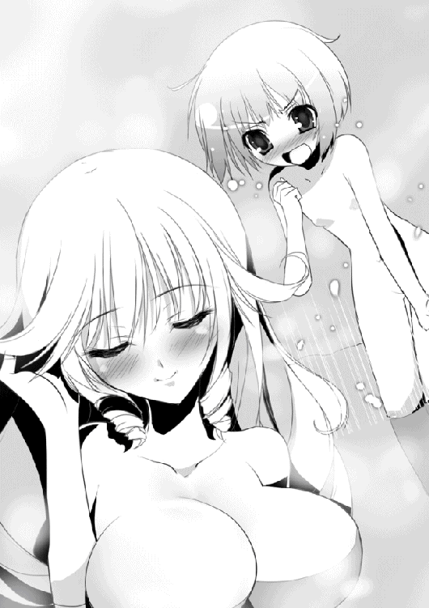
「エレン......エレオノーラ＝ヴィルターリアのことは彼から聞かなかった？ わたくしが彼と知りあったのは、エレンを介してなの」
昨年ブリューヌで起こった内乱と、黒騎士ロランとの戦いをソフィーはオルガに話す。ソフィーは二十一歳で、オルガの七つ上だ。それもあってか、年の離れた姉が妹に昔話を語って聞かせるような感じになった。
ただし、当然ながら省いた部分もある。川で水浴びをしている最中にばったり遭遇してしまったことなどは、さすがに恥ずかしくて言えなかった。
次に会ったのは、ブリューヌの内乱が終わったときだ。特使として派遣されたソフィーは、ブリューヌの王宮でティグルたちと再会した。
王都ニースにいる間はファーロン王の死やティグルの処遇のこともあってあまり話は弾まなかったものの、ジスタートへ向かう道中ではエレンとミラ、ソフィーにリムを加えた四人でティグルを慰め、励ましたものだった。
「では、今回会ったのが三度目なのか？」
話を聞き終えたオルガは半信半疑といった口調で尋ねる。そうよとソフィーが肯定すると、ほっと安堵の息をついた。だが、ソフィーには彼女を安心させる気はまだない。何気ない口調で言った。
「恋人にするなら彼のようなひとがいいわね」
恋人という単語にオルガの頬が赤く染まる。目に見えて少女はうろたえた。
「で、でも、ティグルは親友の親友だって。それに三度しか......」
「ええ。それは本当よ。だけど、人間同士の関係が永久に変わらないとはかぎらないでしょう？ たった一度の出会いでも相手を深く愛し、愛されることはあるわ。まして、さきほども言ったけれど彼は恩人だもの」
ソフィーの台詞に、オルガは視線をそらして黙りこむ。意味もなく湯を指で弾いて飛沫をとばしたあと、ためらいがちに尋ねた。
「......ティグルのこと、好きなのか？」
「そこがまだ自分でもわからないの」
微笑を絶やさぬまま、残念そうにソフィーは肩をすくめる。
「もちろん好きよ？ でも、一言で好きといってもいろいろあるでしょう。家族に対する好きと、友人に対する好きは同じではないように」
十四歳の戦姫はしかめっ面をつくってうなずく。ソフィーのはっきりしない態度は気に入らないようだったが、それが誠実さによるものであることも彼女は理解していた。
オルガの視線がソフィーの顔から下の方へ動いていき、水面に半ば浮いている豊かな胸のところで止まる。胸は浮くのだということを、彼女はこのとき知った。
こうして間近で見ると息を呑むほど大きい。かといって垂れてはおらず、形も整っている。張りあうどころか比べる気すら起こらないほどの見事さだった。
「わたくしからも質問していい？」
あるていどは打ち解けたとみて、ソフィーは控えめな口調で尋ねる。オルガは答えなかったものの、彼女の眼差しは拒絶していなかった。
──さて何から聞こうかしら。
この少女には、質問すべきことが山のようにある。いままでどこでどうしていたのか。このアスヴァールで何をしていたのか。今後どうするつもりなのか。
また、今回の戦についてもだ。すでにティグルとマトヴェイにも聞いてはいたが、彼らが見落としたことや、何らかの理由から言わなかったことがあるかもしれない。ソフィーとしてはより多くのひとから話を聞いておきたかった。
──その前に、念のためにもう一押ししておきましょうか。
ようやくほぐれてきたオルガの態度を、再び頑なにしてしまうのは避けたい。もうすこし雑談を続けることにして、ソフィーはいたずらっぽく笑いかけた。
「あなたは、ティグルヴルムド卿のどういったところが好きなの？」
うろたえるかと思ったのだが、オルガは真剣な表情になってソフィーを見つめる。
「強いし、優しい。それに──」
わずかな逡巡ののち、感嘆と自責の念が混じりあった声でオルガは一気に続けた。
「苦しいことでも、辛いことでも、理不尽としか思えない馬鹿げたことでも、ティグルは逃げなかった。投げだしてもいいはずなのにそうしなかった」
ソフィーは眉をひそめる。オルガの真面目すぎる態度にもだが、その台詞の内容も気になった。ティグルもマトヴェイも、今回の戦についてはそれほど詳しく話していない。
──たしか、ジャーメイン王子に殺されそうになって、王子を殺害したタラード卿と手を組んだのよね......。
ルクス城砦を陥落させ、上陸してきたエリオット軍に夜襲をしかけるなどして進軍を遅らせつつ、サリエンテスで勝利をおさめ、最終的にルルカ村でエリオットを捕らえた。ルクス城砦を守っていたレスターが、トルバランという魔物だったことも聞いている。
城砦をいかに攻めたか、夜襲はどのように仕掛けたのか、他に何か打った手はあったのかというようなことは聞いていない。
「もうすこし、詳しく聞かせてもらえる？」
◎
ティグルとオルガ、ソフィーの三人が宮殿から市街へ出たのは翌日の昼である。三人とも麻織りの服の上に地味な色の外套を羽織り、茶色か灰色の帽子をかぶるといった格好をしていた。目立たないよう、ごくありふれた旅装に身を包んだのだ。
晴れてはいるものの、空に広がる色はぼんやりとした薄い青でいまいちぱっとしない印象を与える。だが、宮殿の従者によれば今日はよく晴れているとのことだった。アスヴァールではそういうものなのかもしれない。
オルガは竜具を布に包んで肩に担ぎ、ティグルは弓を持っているが、ソフィーは手に何も持っていない。光華はいつでも手元に呼び寄せられるし、少数の相手ならば素手で叩き伏せる自信があるからだった。何より、いまはひとりではないのだ。
ティグルとしては、アスヴァール語に堪能なマトヴェイも連れていきたかったのだが、強面の元船乗りには断られてしまった。
「ソフィーヤ殿はアスヴァール語が上手ですから。あの方がご同行なさるのであれば言葉の問題はないでしょう。あと、あまりオルガ殿の機嫌を損ねないようにしてくださいな。私はこれでもあなたとオルガ殿のことをけっこう気に入っているのです」
マトヴェイが言外にほのめかしたのは、オルガがソフィーを嫌っていることだろう。ふたりの戦姫の喧嘩に巻きこまれてはたまったものではないと言いたいらしい。
ティグルも漠然とながら気づいてはいたが、どう対処したものかわからず困っていただけに、ついてきてくれなかったマトヴェイをすこしだけ恨んだ。
いまのところはオルガもソフィーもおとなしい。むしろ、昨日までよりも歩み寄っているようにさえ見える。
──一晩休んでふたりとも気分が落ち着いたのか。
ひとまずティグルはそう楽観的に考えることにした。
宮殿の近くにある建物は石やレンガを積みあげたものが多く、その形も独特だ。基本的には四角いのだが、四隅のどれかを必ず円形の塔にしている。屋根は非常に平たい。
「マリアヨやバルベルデでも、こんな感じの建物は見なかったな」
まわりの建物を珍しそうに見回しながら、ティグルはそんな感想を漏らした。若者の左隣を歩いているソフィーが応じる。
「マリアヨやバルベルデは、さまざまな文化が混じりあっている町なのよ。あの町を作りあげたカディス王国の文化がまずあって、隣接していたザクスタンやブリューヌ、それからアスヴァールの文化が入ってきていまのような形になったといわれているわ」
このあたりは人通りが少ないわけではないが、役人や兵士の姿ばかりが目につく。雰囲気もかなりものものしい。
しかし、王都の中央を流れる川のそばまで歩いてくると、風景に変化が訪れる。石造りの建物はほとんどなくなり、木造の家が多く立ち並ぶようになってくるのだ。石畳も一部の大通りだけに敷き詰められ、土を突き固めた通りが四方に延びている。
緊迫感の漂う空気から解放されて、ティグルとオルガは小さくため息をついた。
「このあたりの家は、船家と呼ばれているわ。解体した廃船の中から、まだ利用できる木材を使って建てたものだそうよ」
ティグルの隣を歩くソフィーが楽しそうな笑顔を浮かべて木造の町並みを見上げる。港まで続いている大きな川へ視線を移しながら、説明を続けた。
「港のそばの造船場で廃船を解体して、川を使ってここまで運んできたのですって。時々古くなりすぎた家は壊して、新しい廃材で新しい家を建てることもあるとか」
「ここにこれだけ建っているんだから問題ないんだろうけど、廃材なんて使えるのか？」
ティグルは足を止めて川を眺める。川幅は三百アルシンぐらいか。群青色の川面には向こう岸までの渡し舟や、港から積み荷を運んできている舟などがいくつも浮かんでいた。舟はすべて白く塗られており、遠目には鳥が翼を休めているようにも見える。
「長年海水に浸かったことで固くなり、虫もつきにくくなっているらしいわ。わたくしも聞いたことしかないのだけれど。旅の者ですと言ってどこかに入ってみる？」
ソフィーにいたずらっぽく笑いかけられ、ティグルは苦笑して首を振った。
興味がないわけではないが、あまり時間に余裕がない。明日にはこの国を発たなければならず、見てまわることができるのはいまだけなのだ。
港へ向かって歩いていくと、露店の並ぶ通りに入った。
商人が主婦や水夫相手に声を張りあげる。道の隅には旅芸人や吟遊詩人が立って、大道芸を披露し、竪琴をかき鳴らしていた。飛び交う言葉はすべてアスヴァール語なのでティグルにはさっぱり意味がわからないものの、雰囲気や態度からおおよそ察しはつく。
「あまり盛りあがっていない」
右隣を黙って歩いていたオルガが、ぽつりとつぶやいた。ティグルも同じことを感じていたので、そうだなとうなずく。通りを行く人々の顔には安堵と不安の色が交互に、あるいは同時に浮かんで見えた。
「内乱がやっと終わった。だけど、勝利したのはつい最近までこの王都に居座っていたエリオット王子じゃなく、ギネヴィア王女だ。不安になるなという方が難しいだろうな」
宮殿付近のぴりぴりした雰囲気も、そのせいなのだろう。
「違う時期に来れば、もっとにぎやかだったのかもしれないな」
ティグルはすこし残念に思った。
それでも、かすかな潮の香りとともに港が見えてくると通りは活気に満ち、喧騒はその大きさを増していく。聞こえる言葉や目にする文字もアスヴァール語だけでなく、ブリューヌ語やジスタート語、ムオジネル語などが混じりはじめた。
オルガがティグルの手をそっと握りしめる。不思議そうな顔で彼女を見下ろすティグルに、薄紅色の髪の少女は見慣れた無表情でぼそぼそと返した。
「はぐれると、よくないから」
それもそうかとティグルは納得して前へ向き直ったのだが、オルガは一瞬だけ、ソフィーに向かって得意げな笑みを見せる。若者の左手には黒弓があり、ソフィーが同じように手をつなぐことはできない。
子供らしいとソフィーは微笑ましく思ったものの、もちろん彼女を勝ち誇らせておく気はなかった。何気ない仕草でソフィーは自分の腕を、ティグルの腕に絡める。これにはさすがにティグルも驚いて彼女を振り返った。緑柱石の瞳が間近にある。
「ど、どうしたんだ、急に」
「わたくしもはぐれないようにと思ったの。いや？」
「いやとは言わないが......」
小首をかしげ、上目遣いでねだってくるソフィーにティグルはしどろもどろな言葉しか返せない。彼女の豊かな胸が腕にあたってやわらかな感触を伝えているのも、若者をうろたえさせている理由のひとつだった。
「その、これはちょっと目立つんじゃないか？」
「だいじょうぶ。もしからまれても、今度はわたくしがあなたを守るわ」
ティグルはため息をつく。ソフィーにこうした悪ふざけを好む部分があることは知っていた。以前も、後ろから手で目隠しをされて「だーれだ」とやられたことがある。何か言っても簡単には聞いてくれないだろう。
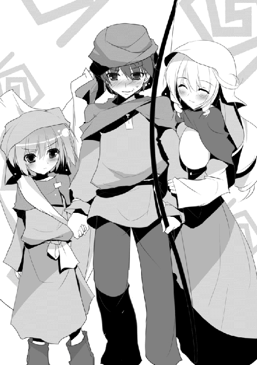
「ほどほどに頼む」
ふたりを見上げるオルガの手に、かすかに力がこもる。無表情はそのままに彼女は歯噛みしていた。背丈からいっても体格からいっても彼女には不可能な芸当だ。戦姫は二重に敗北させられたのだった。
ひとりと手をつなぎ、もうひとりと腕を組んでティグルは通りを歩く。恥ずかしいのはこの際開き直って、町の様子に目を向けることにした。
パンに葡萄のジャムを塗って売る店がある。そのパンの形が違うだけでもおもしろい。その隣には鹿の肉と角切りにしたジャガイモを交互に串で刺して売っている店があり、香ばしい匂いにそそられて、ティグルはそれを買った。
代金を支払ってそれを受けとったのはソフィーである。
「あーん」
ティグルは硬直した。腕はしっかり組まれていて離れない。オルガは仏頂面でソフィーを睨み、代金を受け取った串焼き売りはにやにや笑いながらこちらを見ている。
「......店の邪魔になるから、あっちで食べようか」
その提案が、いまのティグルにできる精一杯のことだった。
離れたところで串焼きを一本分ティグルに食べさせると、ようやくソフィーは若者を解放する。くすりと笑って小さく頭を下げた。
「ごめんなさいね。こういうの、ちょっとやってみたかったの」
「......まあ、新鮮な体験だったよ」
ティグルは胸を撫で下ろしつつそう答える。しかし一方で、沈みこむような不思議な感触が腕から去ったことをすこし残念にも思った。それから、そんな自分に気づいて雑念を払うように首を振る。
「ティグル。あっちに飲みものの店がある」
オルガに引っ張られるようにして、ティグルはそちらへ向かう。串焼きはうまかったが塩気が強かったので、たしかに飲みものがほしいところだった。ソフィーは微笑を湛えながら、一歩遅れてふたりのあとについてくる。
日除けのためだろう、その露店には外套で応急の屋根が設けてあり、黄色をした丸い果実がいくつも吊り下げられて独特の香りを発していた。話を聞くと、遠い東の国から運ばれてきた果実らしい。それを搾った汁に砂糖などをくわえた飲みものだそうだ。
興味が湧いて、ティグルは銅貨を数枚出す。銅貨を受けとった果実水売りは、鉄製の器具で黄色い果実を三つほどまとめて潰し、陶製のコップに注いだ。そこに砂糖やらすり潰した香草やらを入れてティグルに突きだす。
「飲み終わったら、コップはそのへんに捨ててしまっていい」
礼を言って受けとりながら、ティグルはライトメリッツの城下町を思いだしていた。コップの中の果実汁はやや黄色がかった白い液体で、飲んでみると甘さの中に酸味があり、喉越しはさわやかだ。
「うまいな。オルガも飲んでみるか？」
薄紅色の髪の少女はこくりとうなずく。しかし、ティグルがもう一杯注文しようとすると慌てたように止めた。
「......わたしは、残りだけでいい」
「でも、もう半分ぐらいしか残ってないぞ」
ティグルは確認するようにそう聞いたが、オルガはそれでかまわないというようにもう一度うなずいた。首をひねりつつ若者が渡したコップを受けとったオルガは、おいしそうというよりも嬉しそうに飲んでいる。
ティグルはソフィーにも尋ねて、彼女の分の飲みものも買った。他にも三人はウナギのスープやら干した貝、みじん切りにしたタマネギとチーズを詰めて焼いたパンなどを買っては食べ、いろいろなものを見てまわる。
ソフィーを介していろいろなひとと話してみたが、今後のことを心配しつつも、いまは内乱が終わったことにほっとしているという者が多いようだった。
その後、ティグルたちは何軒かの店に立ち寄り、土産を買って宮殿に戻った。
◎
日が暮れたころ、宮殿の大広間では宴が開かれた。
天井のシャンデリアにはすべての蝋燭が灯され、壁にも香料を混ぜた松明が飾られる。円形のテーブルがいくつも並べられ、燭台の他に酒や料理、果物などが置かれた。明るさだけなら昼と見紛うほどだ。
ただし、列席している者の数は多くなかった。その顔触れはタラードの部下であるクレスディルやルドラー、他に国内の有力貴族や他国の外交官などだが、三十人に満たない。
「こんなものでしょうね」
彼らを遠くから眺めて、ソフィーは冷静にそう評する。
「ジャーメイン王子やエリオット王子を支持していた者たちは、まだギネヴィア王女に膝をついていないもの。凱旋式の予定も布告されていないでしょう？」
言われてティグルはそのことに気がついた。ソフィーは若者にだけ見えるようにくすりと笑ったが、すぐに真剣な表情に戻る。
「わたくしたちが明日この国を発つのも、理由のひとつは、向こうにこちらの相手をする余裕がないからよ。従わない者たちを討ち、国内を安定させ、その上で凱旋式を行って即位というところかしら。半年や一年じゃ無理でしょうね」
ソフィーは金色の髪を丁寧に整え、普段まとっているものとは違う薄緑色のドレスに身を包んでいた。やや胸元がきつく見えるのは、調整が間にあわなかったからだ。首から胸元にかけては金色の首飾りが輝いている。これはティグルが今日彼女に贈ったものだ。
金色を基調に真珠を随所にあしらい、胸元には大きな碧玉を飾っている。真珠の白い輝きが、首飾りの金をソフィーの金髪に埋もれさせず、碧玉は白い肌を背景に鮮やかな彩りを見せていた。
ティグルのそばに無言で立っているオルガも、同じようにドレスをまとっている。彼女のドレスは髪に合わせた薄紅色で、ふわりと広がっている裾には鮮やかな花が描かれ、年齢相応のかわいらしさを演出していた。
短めの髪は丁寧に撫でつけられて、髪飾りが光っている。これもティグルが彼女に買って渡したものだった。銀の留め金の上に翠玉と白い貝殻を巧みに飾ってあり、彼女の薄紅色の髪によく映えている。無表情なのが残念ですなと評したのはマトヴェイだった。
そのマトヴェイは肩や袖口に金の飾りをあしらった黒の絹服を窮屈そうに着ている。ティグルも彼とまったく同じ服を着ているが、これは自分で考えるのが面倒だったからだ。
ほどなく宴の主役であるギネヴィアが現れた。ティグルは彼女を見るのはこのときがはじめてだったのだが、その姿を見たときに目を丸くした。若者だけではない、ソフィーや列席者のほとんどもだ。
ギネヴィアは二十歳。ソフィーより一つ年下だ。光の角度によっては緑に見える黒髪は腰まで届くほど長く、身体つきはほっそりとしている。顔は白い卵型。その中に切れ長の目と細い鼻梁、薄い唇がある。目を瞠るほど美しい女性だった。
だが、列席者たちに息を呑ませたのはその美しさだけではない。彼女のまとっているドレスが飾り気のまったくない黒一色だったことだ。アスヴァール王国では、喪に服するとき喪章として黒い何かを身につけるならわしがある。
ドレスに装飾がほどこされていたり、あるいは宝石などで飾りたててあれば、彼女なりの着飾りと理解することもできただろう。しかし、そういったもののない黒のドレスは彼女の立場を列席者すべてに思い起こさせたのだ。
ふたりの兄の屍の上に、ギネヴィアは立っている。
その装いだけで注目を集めることに成功した王女は、ドレスの裾を両手でつまみあげて静かに、そして優雅に一礼した。
「──今宵、みなさまにお集まりいただき、ギネヴィアは深く感謝しております。ささやかではございますが、楽しいひと時を過ごしていかれますよう」
王女とは思えぬ丁重な物腰だが、集まった者たちは冷笑を浮かべることもなければ軽侮の視線を向けることもなく、うなずくばかりだ。場の主導権は、彼女が握っていた。
「それでは乾杯といきたいところですが、その前に紹介したい者がございます」
ギネヴィアに招かれて彼女の隣に立ったのは、タラードだ。内乱を終結に導いたこの青年は白い絹服と黒いズボンという姿で、その上に赤い外套を羽織っている。飾り気のなさが、かえって着ている者の凜々しさを際立たせているかのようだった。
堂々たる態度で名のる彼に反感を抱いた者はいただろうが、それを露骨に口にした者はいない。挨拶をすませると、ギネヴィアとタラードはこちらへ歩いてくる。
「この機会に、親しくさせていただいているお友だちもご紹介させてください。まずはジスタート王国の戦姫ソフィーヤ＝オベルタスさま」
ギネヴィアはソフィーに一礼すると、その手をとって列席者たちを振り返った。もちろんふたりは初対面なのだが、それを知っている者はごく少数である。
金色の髪の戦姫はアスヴァールの王女の手を親しげに握り返し、列席者たちへにこりと微笑みかけた。幾人かの口から感嘆のため息がこぼれる。
ギネヴィアは、オルガとティグルも紹介する。戦姫ふたりに、ブリューヌの内乱を終わらせた英雄。彼女にしてみれば、他国の有力な人物がこれだけいるのだ。周囲に印象づけない手はない。
それが終わったあとに、宴ははじまった。
参加した者たちの数が少ないということもあったのだろう、宴は一刻ほどで終わった。
ティグルはといえば、次から次へと挨拶に現れる者たちへの応対で、精神的に疲れきっている。マトヴェイが気を利かせて食事や酒を持ってきてくれなかったら、何も口にすることができなかっただろう。
印象に残った者はあまりいなかった。
──ああ、でもひとりいたな。
礼服を着たルドラーが紹介してくれた男のことを、薄めた葡萄酒を水晶のグラスで飲みながらティグルは思いだした。
フィッツ＝ラフォールという名で、クレスディルやルドラーと同じくタラードの信頼厚い男だという。武芸については秀でたものがないが、計算や作図に長けており、投石機を改良したのもラフォールだということだった。
年齢は四十近く。ルドラーよりも頭一つ分背が低く、顔は丸い。額は広く、ふわりとした茶色の髪は耳の横あたりでくるりと巻かれている。
彼はティグルの弓の技量を素直に称賛し、どうやれば矢がよく飛ぶのか、材料は何がいいかなど弓のことについてあれこれ聞きたがった。
その態度は好奇心に満ちた子供のようで、とても四十近い男の態度とは思えなかったのだが、それがかえってティグルには好ましく、知っていることを教えたのだった。
大広間を見ると、まだ何人かは去らずに残っている。ソフィーはギネヴィアと話を続けており、オルガは自分のそばであくびを噛み殺しながら目をこすっていた。
ティグルとマトヴェイは、ソフィーの話が終わったらここを出てそれぞれの部屋へ戻ろうと思っていたのだが、戦姫と王女の話はなかなか終わらないようだった。
「なあ、ちょっといいか」
不意に横合いから声をかけられる。見ると、タラードが立っていた。年来の友人のような気さくな態度だ。マトヴェイがどうしますかと視線で問いかけてくる。
ティグルの表情に陰りが差した。若者は手にしていたグラスをそばのテーブルに置くと、眠そうにしているオルガの頭を撫でながら、声をひそめて強面の元船乗りにささやく。
「俺もタラードに話がある。ソフィーの話が終わったら三人で戻ってくれ」
ティグルはタラードとともに大広間からつながるバルコニーへ出た。
ここから市街を一望できるらしいが、月も雲に隠れているような夜とあってはほとんど何も見えない。闇の中に灯るいくつかの小さな光は、外へ漏れた家々の明かりだろう。港の近くで一際明るく輝いているものは、灯台の炎だという。
ふたりはしばらく無言で、夜の街を眺めていた。バルコニーを右から左へと吹き抜けた秋の夜風がふたりの頬を撫でる。
「あんたとこうしてゆっくり話すのは、何日ぶりだろうな。サリエンテス以来か」
先に口を開いたのはタラードだ。ティグルは闇を見つめながらそうだなと短く返した。
サリエンテスでの戦が終わったあと、ティグルは借りた兵をそのまま率いてルドラーとともにルルカ村へ向かったのだ。そうしてエリオットを捕らえた。
その間、タラードはルクス城砦をあらためて奪還し、ティグルだけに任せずエリオットを捜索する一方で、ギネヴィア王女が内乱を終わらせるべく立ち上がったことを国内に布告する作業にいそがしかった。さらに、バルベルデ周辺の治安の強化も行っていたのだ。
ティグルがエリオットを捕らえたあと、ふたりはマリアヨで合流したものの、会話をかわす余裕などとてもなかった。王都へ向かう船団を編成、統率するのにタラードは眠る時間さえ削らなければならないほどだったのだ。
「本当に助かった。何もかも、オレが期待していた以上のことをやってくれたよ」
タラードの称賛に、ティグルはいやと首を振った。怪訝そうな顔をこちらに向けたタラードに、身体ごと向き直ると深く頭を下げる。
「──すまなかった。村を焼いた。井戸にも毒を入れた」
「ああ、そのことか」
タラードの反応は、ティグルが予想していたよりもはるかに冷静だった。ルドラーから報告を受けてすでに知っていたからだろうが、それにしても淡泊すぎる。
「必要だったんだろう？ あんたを責める気はないぞ」
ティグルは唖然とした顔でタラードを見つめた。あまりにもあっけらかんとしたもの言いだったために、自分の言い間違いか、聞き間違いを疑ったほどだ。
だが、タラードは本気で言っているようだった。ティグルへの配慮などではなく。
そして、ティグルは言い返すための言葉を持っていなかった。まさしくタラードの言うように、必要な処置だったのだ。あの村々をそのままにしておいたら、間違いなく利用され、奪われたあとに焼かれただろう。ルルカ村のように。
「オレだって同じ状況に置かれたら同じことをする。よほどの奇策があったとしても、それが絶対成功するとはかぎらないからな。最善を尽くすには、結局焼かねばならない」
そう言うとタラードは闇へと視線を戻す。
「エリオットは詰めの甘い男だが、その詰めに至るまではこちらも手を焼くほどの動きを見せる。正直なところ、三十から四十ぐらいは村を焼くか、焼かれることになると思っていた。そのつもりで考えていたから、むしろ驚かされたよ」
──最悪の被害を想定し、覚悟していたということか。
タラードの態度に、すこしだけティグルは納得できた気がした。だが、まだ腑に落ちない。思っていたより被害が少なかったとはいえ、こうも落ち着いていられるものなのか。
「気にするなとは言わないが、気にしすぎては身も心もすくんでしまって何もできん」
この暗闇ではティグルの表情などわからないはずなのに、若者の内心を見透かしたかのようにタラードは言った。
「オレはこれから、ギネヴィア王女とともにアスヴァールをまとめる。本島も大陸も、まだまだ敵は多い。戦、戦、戦だ。その中で村を焼くこともあれば、敵のたてこもる町や都市を、住人ごと押し潰すこともあるだろう」
ティグルはその光景を想像してしまい、苦渋に顔を歪ませる。自身の手で焼いた村の惨状が脳裏によみがえっていた。だが、嘔吐感はすぐに消える。続くタラードの声に、聞く者をひるませるほどの覇気がこもったからだ。
「オレはやる。それが必要だと、最善の手だと判断すればな」
それは、この青年の進む道がどのようなものであるかの宣言だった。味方や罪なき者の血で塗り固められた道を歩むことになってもかまわないと、彼は言っているのだ。
「それが、オレの目指す王の形だ」
王。そうだ。タラードは王になると言った。
──だが、王はなって終わるものじゃないだろう。
涼しい夜風に吹かれているにもかかわらず、ティグルの額に汗がにじむ。呼吸を整えながら若者は慎重に問いかけた。
「......その判断が間違っていた場合は、どうする」
「間違いのない人生なんてあるか」
かろやかな即答が返ってきた。
「ところで、ティグルはこれからどうするんだ？」
さきほどまでの覇気はふっと消え失せ、気さくな声でタラードは尋ねる。急激な変化に戸惑いつつもティグルは答えた。
「もちろんジスタートに帰るさ」
「そういうことじゃなくてだな。何かどでかいことをやる気はないのかってことだ」
ティグルは三つ数えるほどの間、闇を見つめたあといつもの口調で答えた。
「どでかいというと、伝説になっているような熊とか猪を狩るぐらいかなあ」
タラードは腹を抱えて笑った。
◎
タラードと別れて、ティグルは自分に与えられた客室へと戻った。室内は広く、燭台などの調度品は伝統を感じさせる趣がある。床には絨毯が敷かれ、ベッドも大人が三人は並んで横になれるほど大きい。
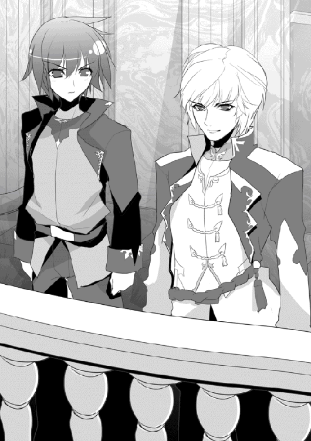
ベッドに寝転がって、ティグルは真っ暗な天井を見つめた。タラードの言葉について考え、それから彼が何の用事だったのか聞き忘れたことに思い当たる。あるいは、ティグルの勇戦を称賛したかっただけなのかもしれない。
──『必要と判断すれば』。
あれだけの発言を彼にさせるのは何なのだろうか。己の能力に対する自信か。
──王を目指す、か。
バルベルデの平和な街並みをふたりで見下ろしたとき、彼はそう言った。あるいは自信ではなく、王を目指すことへの覚悟からだったのだろうか。必要と判断すればという言葉は。王にかかわらず、ひとの上に立つ者に求められる資質には違いないだろうが。
そこまで考えて、ティグルは身体を起こすと苛立たしげに赤い髪をかきまわした。
ベッドのそばに置いてあった鈴を手に取り、鳴らす。何か用があるときはこれで侍従を呼ぶようにと言われていた。ほどなく現れた侍従に、水浴びがしたいので近くに井戸はないかとティグルは尋ねる。侍従は考えるように首をかしげたあと、こう答えた。
「このお部屋から井戸はだいぶ離れておりますし、危のうございます。おそれながら、大浴場ではいかがでしょうか」
「まだ湯は残っているのか？」
「はい。残り湯は、夜が明けたら侍女たちが洗濯や掃除などに使いますので。明かりをすべてご用意することはできませんし、ぬるくなっておりますが、水浴びならば問題ないかと。もちろん湯をお望みとあればご用意いたしますが、沸かすためのお時間を......」
「いや、ありがとう。大浴場でいい」
とりあえず、ティグルとしては水を頭からかぶってさっぱりしたかったのだ。
廊下は真っ暗といってよく、侍従は火を灯した燭台を持ち、身体を拭くための厚手の布と着替えを抱えてティグルを大浴場まで案内する。たどりつくと、ティグルに布と着替えを渡した。
「香料などご入り用のものがあれば、用意いたしますが」
「これだけでいい。俺はひとりで部屋に戻れるから、休んでくれ」
「明かりはどうなさいます？」
侍従の質問に、ティグルは燭台を指で示した。燭台には蝋燭が三本刺さっており、それぞれの先端に火がゆらめいている。
「蝋燭を一本と、火口箱を置いていってくれ」
夜に突然呼び出されても応対する者が、いざというときのために火口箱を持ち歩いていないはずがない。侍従はかしこまりましたと頭を下げ、火を消した蝋燭と火口箱をティグルに渡すと暗がりの廊下を歩き去っていった。
扉を開けると、まず脱衣所がある。このときにはティグルの目もだいぶ闇に慣れてきており、脱いだ服やら蝋燭やらをてきとうに置いて、大浴場へ向かった。
大浴場に足を踏み入れたところで、ティグルは足を止める。壁に明かりがあった。思ってもみなかったことだが、先客がいるらしい。
「──誰？」
水音のはねる音に、誰何の響きが続く。聞き慣れた女性の声にティグルは目を丸くし、おもわず相手の名を口にしていた。
「ソフィーか？」
「......ティグルヴルムド卿？」
暗闇の中でふたりの男女は驚きに息を呑み、その場に固まってしまう。
壁に明かりがあるとはいっても小さなもので、浴場全体を照らしているわけではもちろんない。ティグルには、ソフィーは薄暗い浴場の中にいる黒い影としか見えなかった。ソフィーにしても同様だろう。
先に緊張から解放されたのは、ティグルだった。すまなかったと口早に言って浴場に背を向ける。だが、立ち去ろうとした若者をソフィーが呼び止めた。
「待って！」
再び、場が緊張に包まれる。ティグルは戸惑いと混乱とでその場から動けず、ソフィーは自分の言葉に驚いたのか口ごもっている。どうすればいいんだとティグルが焦りを感じはじめたころ、ソフィーがさきほどよりも落ち着いた声で若者に呼びかけた。
「あなたは、どうしてこんな時間にこんなところに来たの？」
信じてもらえないだろうと半ばあきらめつつも、ティグルは正直に水浴びをしにと答える。答えながら、いかにも覗きを見つかったときの言い訳じみていると思った。
しかし、ソフィーはそっとため息をつくと苦笑したらしい。
「わたくしもそうよ。井戸じゃなくてここを勧められたこともね」
侍従も、まさかこんな時間に先客がいることなど思いもよらなかったに違いない。とはいえ、侍従を責める気にはあまりなれなかった。
「出ていくこともないでしょう。入ったら」
「いや、だが......」
「あなたの目が優れているといっても、この暗さでは、わたくしがどこにいるかがわかるぐらいじゃないかしら。それなら気にしないわ」
冗談めかした口調。どうやらソフィーは完全に余裕を取り戻しているようだった。
「それに──話したいことがあるの。絶対にいまでなければ、とまでは言わないけれど」
彼女の声がしっとりとした陰りを帯びる。ティグルは困惑しつつも、離れていればいいと自分に言い聞かせて浴場に向き直った。ソフィーの言葉が気になるのはたしかだが、心臓が早鐘を打っているのは不安のためか興奮からか自分でもわからない。
──変な気分だ。
浴槽の中にそろそろと足を入れ、ぬるくなった湯に腰まで浸かり、肩まで沈めて一息つく。ティグルはあらためてまわりを見回した。六、七歩ほど離れたところにソフィーらしき黒い影がある。
ソフィーは見えないから安心だと言っていたが、大間違いだとティグルはうろたえた。若者の頭の中には、一年ほど前にはじめて彼女と会ったときの光景が浮かんでいる。
水浴びをしていたソフィーがつまずいて自分に倒れこみ、一糸まとわぬ姿の彼女が視界いっぱいに飛びこんできたのだ。いまでも鮮明に思いだせてしまうあたり、よほど強烈に記憶に焼きついてしまったに違いない。
ぬるま湯の中で身体を動かし、ティグルはソフィーに背を向ける。話をするだけならば相手を見る必要はない。そうして彼女の言葉を待っていると、水音が聞こえた。
ぱしゃ、ぱしゃと小さく水のはねる音が、あきらかにこちらへ近づいてきている。
ティグルは股間を手でおさえて立ち上がろうとしたが、遅かった。両肩にやわらかい手が置かれて、立ち上がりかけたところを再びぬるま湯の中へ戻される。耳元で甘い声がささやいた。
「話があるって言ったのに、どうしてもっと寄ってきてくれないの」
「......話をするだけなら、これぐらいでも」
ティグルの返事は遅れた。うなじのあたりに彼女の吐息を感じる。ぬるま湯に肩まで浸かっているというのに、頭がぼうっとするほど顔も身体も熱い。
「後ろを向いているのはなぜ？ わたくしが見えるわけじゃないでしょう？」
「見えないからいいってものでもないだろう」
その言葉に対するソフィーの返事はなかった。くすりと笑ったような気もしたが、よくわからない。ティグルの左肩に置かれた手が離れたかと思うと、形のよい顎が乗った。長い髪が若者の首筋をくすぐる。
「──ありがとう」
短く、一言。暗闇の中で、ソフィーの声は水面のごとく揺らいでいる。それまでとは違う真摯な響きが、ティグルをはっとさせた。
「オルガから聞いたわ。今度の戦で辛い、厳しい決断をし続けてきたって」
ソフィーの言葉が、村を焼いたことを指しているのはあきらかだった。
「それは......でも、ソフィーに礼を言われるようなことじゃ」
「そんなことはないわ」
ティグルの言葉を遮って、右肩に置かれた彼女の手に力がこもる。
「そんなことはないわ。わたくしを助けてくれたのも、民や兵たちを守ったのも。それに、あなたが自分を見失わなかったのも。何もかも嬉しいの。お礼を言うのは当然よ」
「自分を、見失わなかった......？」
おうむ返しにつぶやくティグルの肩に顎を乗せたまま、ソフィーはそうとうなずいた。
「民を治め、兵を率いる身にはおそらく避けられない道。そこを歩き抜いても、あなたはわたくしやエレンが好きなあなたのままでいてくれた。それはとても素敵なことなの」
言葉を紡ぐうちに声は熱を帯び、ソフィーはいつのまにかティグルを後ろから抱きしめるようにして、若者の背中に強く身体を押しつけていた。
そのことにふたりが気づいたのは、ほぼ同時。戦姫が昂ぶる感情をすべて言葉にし終えて、その余韻が徐々に過ぎ去ってきたころだ。短い悲鳴を発したのは、どちらが先かわからない。水音をはねさせてふたりは勢いよく立ち上がり、離れようとした。
ティグルが足をすべらせる。反射的に、近くにあったものをつかんだ。だが、それは支えにならず、派手な水音とともにぬるま湯の中に引っくり返る。
弾力のある何かがのしかかってきて、溺れそうになったティグルは慌てて身体を起こした。暗いためによくわからないが、どうもソフィーが若者に覆いかぶさるような姿勢で倒れこんできたらしい。さきほどティグルがつかんだのは、彼女の腕だったのだ。
暗闇の中、ふたりは無言で見つめあった。息が荒い。どちらからともなく視線を外し、それぞれ自分の手を見る。ほとんど一瞬のことだったが、ティグルの手は彼女の乳房をつかみ、彼女の手はティグルの腰の下あたりに触れた。
「おっき......」
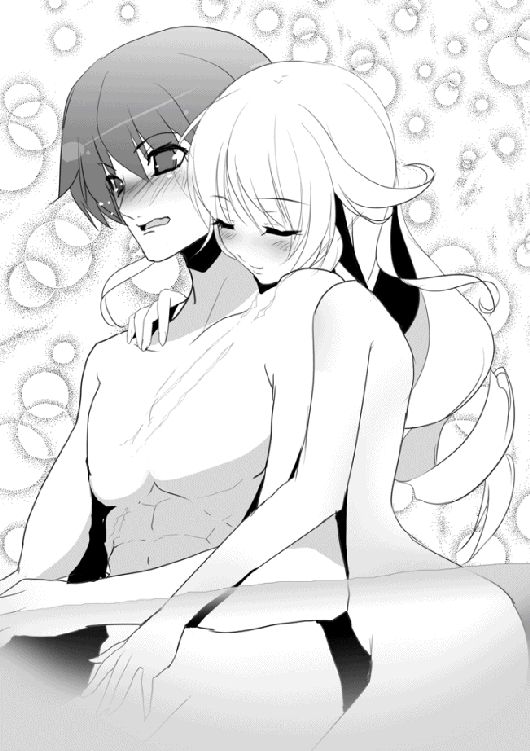
ソフィーが目を丸くしてつぶやき、ティグルは顔を真っ赤にして背を向ける。
「す、すまなかった」
取り繕うように言って、ざぶざぶとぬるい湯をかきわけて進み、浴槽を出た。もう一秒たりともここにいられなかった。いるべきではなかった。
「ティグルヴルムド卿──ううん、ティグル」
脱衣所に入ろうとしたティグルの背中に、ソフィーの落ち着いた声が届く。彼女が自覚的にティグルを愛称で呼んだのは、おそらくこれがはじめてだった。
「わたくしの話は終わりよ。聞いてくれてありがとう。......それから」
わずかに小さな、そして恥ずかしそうな声で金色の髪の戦姫はつけたした。
「今夜のことは誰にも言わないでね。わたくしたちの胸の中にしまっておきましょう」
ああ、とぶっきらぼうに答えてティグルは脱衣所に入る。いったい誰に言えるというのだ、こんなことを。身体を乱暴に拭き、服を着ると若者は急いで廊下に出た。蝋燭に火をつけるのももどかしい。部屋に戻っても、しばらく眠れそうにないだろうと思えた。
ティグルの気配が脱衣所の向こうへ消えたことを確認すると、ソフィーは小さく息を吐いて浴槽の壁によりかかった。頬に手をあてると熱を感じる。
──さすがに強引だったかしら。
自分の行動を思い返すと、苦笑がこみあげてきた。ソフィーのほうが彼より四つも年長なのだから、もうすこしとるべき態度というものがあっただろう。
こんな時間に浴場へ現れた者がいたということと、その人物がティグルだったことが金色の髪の戦姫を過度に狼狽させてしまったのだ。
──でも、こういう状況でなければふたりきりになるのは難しかったし......。
マトヴェイあたりは配慮してくれるだろうが、オルガはおそらくティグルから離れないだろう。ふたりきりにならなければならない、ということはないが、ソフィーとしては他のひとに聞かれるのは少々恥ずかしかった。
ソフィーがそもそもここにいた目的はふたつ。ひとりで落ち着いて考えごとをまとめるためであり、アスヴァールの反応をさぐるためだった。
客室の天井裏や壁の向こう側に密偵や間者が潜んでいることは珍しくない。こちらが突飛な行動をとることで、そうした動きをさぐれないかと考えたのである。
そのふたつについては、どちらも達成できた。だが、ティグルの出現はまったくもって予想外だった。そして、いま伝えなければとソフィーは強く想ったのだ。オルガに詳しい話を聞いたのが昨日。この想いが冷めやらぬうちに、と。
──ちゃんと言いたいことは言えたから後悔はしていないけれど......ううん、やっぱりいろいろ恥ずかしかったわ。彼にどう思われたのかしら。
また、ジスタートの使者として思う部分もある。今回はおたがい多忙だったから仕方ないとはいえ、次は細部までしっかり聞きだすことにしよう。ティグルがこの内乱でやったことは、今後の外交でおおいに使えそうなのだから。
そうして翌朝顔を合わせたとき、ふたりはついおたがいに顔を赤らめ、視線をそらしたのだった。
◎
翌日の朝から昼まで、ティグルたちはタラード、ギネヴィアのふたりと今後について話しあった。ジスタートとアスヴァールの関係についてである。
とはいえ、ソフィーがジスタートを発ったときとはあまりに情勢が違っている。ひとまずギネヴィアの要望と、友好の意思をジスタート王に伝えるというところからはじめなければならなかった。
ティグルたちが今日この国を発つのも、それが理由だ。ギネヴィアたちはジスタート国王の言葉がほしい。ソフィーたちにしても、現在の状況についてしたためた書簡を先に送ったにせよ、帰還して直接伝える必要があった。
「内乱が終わったとはいえ、しばらくの間は国内をまとめるための戦が続きましょう。海賊の残党も一掃せねばなりません。ソフィーヤ殿、オルガ殿、ティグルヴルムド卿におかれましては、なにとぞご助力をお願いいたします」
「我が国と友好を結び、ともに繁栄を望むというギネヴィア殿下のご意志、うけたまわりました。母国に戻りましたら、さっそく陛下にお伝えしますわ」
「よいお返事をいただけること、期待しております」
双方が何を望んでいるかについては、今日までの間に話をすませている。昨夜の宴で、ギネヴィアがソフィーをつかまえて話していたのもそのことだ。この場での話は、その確認のようなものだった。
交渉がただ一度で終わるわけはなく、むしろこれからが本番といってよい。今後、双方の使者が何度もおたがいの国へ足を運ぶようになるだろう。だが、ティグルとソフィーの役目はとにかくこれで終わったのだった。
「あんたの立場を考えると難しいだろうが、気が向いたら遊びに来てくれ。今度はコルチェスターをゆっくり案内してやる。この近くでいい狩り場もさがしておくからな」
タラードは笑ってティグルと握手をかわす。さらに、こんなことをつけくわえた。
「オレはな、あんたとまた会う気がする。いや、そう確信している」
──ずいぶん自信たっぷりだな。
さすがにティグルは内心で呆れたものの、悪意などから出た言葉ではないとわかっているので、冗談で返した。
「妙なところで会わないことを神々に祈っておくよ」
昼になって、ジスタートの船は多くの者に見守られながらコルチェスターの港を出航する。数は四隻で、そのうち三隻は護衛船だ。
護衛船の一隻に、ティグルはこの地で買った大量の土産を預かってもらっていた。
なにしろ買うものが多かったのだ。エレンには狩人が彫られた銀色の腕輪を、ティッタにはアスヴァール独特の模様が織られた外套を、リムには熊の毛皮を使った陶器人形を、ミラには数種類の茶を買った。
サーシャには何を買えばいいのかわからなかったので、マトヴェイと話しあった末に枕やクッション、香料などを購入した。レギンには楽器を買い、手紙を添えてブリューヌへ届けるよう手配する。
さらにルーリックやアラム、ブリューヌにいるマスハスやオージェ子爵にジェラールなどへの土産もあった。ティグルは十七歳だ。ブリューヌから見れば遠い異国の地に、やはりはしゃいでいたのだった。
ティグルは船の縁につかまって、船着き場から見送ってくれる者たちへ手を振る。タラードや彼の部下たちに混じって傭兵隊長サイモンの顔を発見し、噴きだした。彼の姿を見たマトヴェイは皮肉っぽい笑みを浮かべる。
「意外に如才ない男ですな。さすが傭兵隊長というべきかもしれませんが」
ふたりのそばではソフィーがオルガと話していた。
「オルガは、ジスタートに戻るということでいいのね？」
確認するように訊いたソフィーに、オルガはこくりとうなずく。手にしている布の包みに視線を落とした。彼女の竜具である羅轟ムマだ。
「わたしは、投げだしたものに向き合わないといけない。民や臣にはもう手遅れかもしれないけど、わたしを見捨てず、何度も助けてくれたムマにはせめて応えたい」
彼女の言葉は、ソフィーに答えたというよりも竜具へ呼びかけたように響いた。ソフィーは微笑を浮かべると、彼女の決意を肯定し、励ますようにうなずく。
それからオルガは黒曜石の瞳を横へ動かした。彼女の視線の先にいるくすんだ赤い髪の若者はマトヴェイと話しており、少女の眼差しには気づいていない。
──向きあうことで、ティグルに認められたいというあたりかしら？
オルガの表情からソフィーはそう予測したものの、口にはしなかった。この生真面目な少女の場合は、見守る方がよさそうだと判断したのだ。
少しずつ遠ざかっていくアスヴァールの王都を背に、四隻の船は海を進む。白帆は風を受けて大きくふくらみ、青く晴れた空を見上げて、いい航海日和ですとマトヴェイは満足げにつぶやいた。男の背を飾る白イルカの模様も嬉しそうに見える。
「──そういえば」
コルチェスターが小さな白い点になったころ、ティグルの隣に並んで紺碧の海を眺めていたソフィーが思い出したように言った。
「急にごめんなさい。タラード将軍の戦略について、もう一度確認させてもらえる？」
ティグルと、その隣にいたオルガ、マトヴェイも不思議そうな顔になる。金色の髪の戦姫が思いのほか真剣な表情をしていることも、彼らの不審を誘った。
「タラードの戦略って、どれのことだ？」
「あなたたちがルクス城砦を取り戻す前に話していたもののこと。ちょっと気になって」
三人は顔を見合わせたものの、記憶をさぐりつつ説明する。誰かが忘れていたことも他の者が覚えていたりして、ほどなく完全に思いだすことができた。
三千の兵で、ルクス城砦を攻略する。指揮官はルドラー。
その間に、タラードはクレスディルなどの部下とともに兵を集める。一万ほど集まったらルドラーと合流して北上。海を渡ってアスヴァール島へ乗りこむ。
エリオットはマリアヨを攻めているだろうが、タラードがアスヴァール島に上陸したと聞けば引き返してくるだろう。そこを待ちかまえて叩く。
その説明を聞いたソフィーは、金色の髪を揺らして難しい顔になる。
「何が気になるんだ？」
ティグルの質問に、ソフィーは話していいかどうか考える素振りを見せたものの、思いきって口を開いた。
「わたくしの調べたかぎりでは、それだけの数の船を彼らは持っていないのよ。歩兵ならともかく、騎兵に投石機の部隊となるとがんばっても四、五千というところかしら」
ティグルとマトヴェイはきょとんとした顔になる。オルガが眉をひそめた。
「二回にわけて運ぶつもりだったのではないか？」
「そのやり方は時間がかかるし、敵に発見される危険が増すわ。最悪の場合、本島と大陸とに分断されて各個撃破される」
ソフィーの答えに三人は再び顔を見合わせる。この中で、船の数など気にした者はひとりもいなかった。それも当然で、タラードが言うからには船はそろっているのだろうと考えていたし、あのときはまず城砦を攻め落とさなければならなかったからだ。
──待てよ......？
不意に、ティグルの胸中にいくつかの疑問が湧きだす。
エリオットの上陸は、タラードにとって本当に予想外だったのだろうか。
ジャーメイン王子の殺害はひっそりと行われたわけではなく、かなりの騒ぎだった。それをエリオットに知られずにすむと、彼は本気で考えていたのか。
また、村を焼くと決めたときや、ルクス城砦の放棄を提案したときのルドラーの反応。現実を見据えた結果かもしれないが、あまりにもあっさりしすぎていなかったか。
まさか、とティグルは声には出さず呻く。タラードは、ジャーメインの死という餌をちらつかせることで、エリオット王子を内陸深くに引きずりこんだのではないか。
そうすれば、海賊たちと地上で戦うことができる。海上という海賊の得意な戦場ではなく。また、彼らの兵站を伸ばすことで苦しめることもできるだろう。バルベルデ周辺が戦場になっていたならば、エリオット王子を海まで逃がすこともなかったに違いない。
問題点は、敵を引きずりこむことで多くの村や集落が襲われることだが、タラードは言っていたではないか。二十から三十は焼かれると考えていたと。また、必要だと判断すれば村を焼くことも辞さないと。
──いや、証拠はない。俺の考え過ぎだろう......。
「これについてはもうすこし調べてみる必要がありそうね。三人とも、いまの話は内密にお願い」
ソフィーの言葉にティグル、オルガ、マトヴェイはそれぞれうなずく。
潮風と潮騒に包まれて、四隻の船は海を軽快に進んでいった。
◎
「──残念だ。実に残念だ」
タラード＝グラムは仏頂面で唸った。ジスタートの船団を見送ったあと、彼は部下たちとともにまっすぐ宮殿へ戻り、会議室へ足を運んだのである。多忙なこの青年には、今日中に決めなければならないことがいくつもあった。
だが、タラードはすぐに会議をはじめるかと思いきや、面倒くさそうに座った姿勢で椅子を傾け、前後にゆらゆら揺らしている。ふてくされた顔の主を見ながら、欲しい玩具を買ってもらえなかった子供のようだとルドラーは思った。
中央に円卓が置かれたこの会議室には、タラード以外に三人の男がいる。
ルドラーと、丸い顔とふわりとした巻き毛が印象的なラフォール。そして、細く鋭い目がどこか狐を連想させる痩身のクレスディルだ。タラードの腹心といえる三人である。
ルドラーとクレスディルが背筋を伸ばして椅子に座っているのに対し、ラフォールは考えごとでもしているのか円卓の上で指を動かして何かを描いていた。そんな三人に、同意を求めるようにタラードは言葉を続ける。
「ティグルは絶対いい部下になったぞ。城砦攻略はルドラーが付き添っていたとしても、だ。夜襲に、村を焼いての足止め。城砦防衛、野戦と割と何でもござれだ。さすがブリューヌを救っただけはある」
「もう帰らせてしまったものは仕方ありますまい」
むっつりとクレスディルが答える。タラードがティグルを部下にしたいと言ったとき、彼と、そしてルドラーのふたりが反対を唱えたのだった。
「閣下も、昨日の夜にティグルヴルムド卿と話して、諦められたではありませんか」
ルドラーもクレスディルに続いて主をいさめる。昨夜、タラードがティグルとふたりだけで話したのは、部下にならないかと誘う意図があってのことだった。
「彼は、まだ村を焼いたことを悔いていたでしょう」
ルドラーの言葉に、タラードは憮然としてうなずく。
もしもティグルが村を焼いていたことを深く悔いているようならば、部下に誘わない。
タラードがティグルを部下にすると言ったとき、ルドラーはそのように請願し、クレスディルも同調したため、金髪の青年は渋々その条件を受け入れたのだった。赤い髪の騎士は、穏やかな口調を崩さぬよう平静な態度で言葉を続ける。
「ティグルヴルムド卿はそういう方なのです。我々がルルカ村を見殺しにしたことを知れば、彼は閣下を許さないでしょう」
「......だめか」
「彼は、異国の小さな村が野盗に襲われているのを見過ごせなかった男です」
クレスディルが淡々と言葉を紡ぐ。タラードとティグルが出会うきっかけとなったその出来事こそが、この金髪の青年に偽りの戦略を語らせた理由だった。
実際の戦略は、いま海の上でティグルが予想している通りのものだ。ジャーメインを殺害し、それを餌としてエリオットを内陸深くおびき寄せ、騎兵と投石機で叩く。
ギネヴィア王女の協力を得られる確証はなかったが、タラードには勝算があった。
エリオットはただでさえ猜疑心の強い男だ。兄であるジャーメインに殺されかけたあとで、とくに仲がよいわけでもない妹へ疑いの目を向けないはずはない。そして、ジャーメインが死んだあとでは、彼の敵となる者はギネヴィアだけなのだ。
タラードに誤算があったとすれば、ティグルの驚異的な粘りだろう。本来の予定ではサリエンテスよりもさらに南へ敵を引きずりこみ、兵站を伸ばし、徹底的に疲弊させるつもりだったのだから。
「それに、彼は閣下の部下とするには問題の多い男です」
クレスディルの細い目が、いっそう細められる。
「まず、ブリューヌの英雄というだけで扱いにくいことこの上ありません。評判にふさわしい地位を与えなければ彼は不満を抱くでしょうし、閣下が部下を適切に評価しないという悪評のたつ恐れがあります。ですが、異国人を重く用いれば今度はアスヴァールの者たちがおもしろくないと思うでしょう。今度の内乱における彼の功績も問題です。ルクス城砦攻略とサリエンテスでの防衛戦はルドラー殿の手柄としても、なおティグルヴルムド卿にはハミッシュ卿を討ち取り、エリオット王子を捕らえたという武勲があります。手柄としては大きすぎて、周囲の反感や妬みを買うことは間違いありません。また、私は確認しておりませんが、ルドラー殿や兵たちの報告によれば呪術ともつかぬ恐ろしい技を持っているとか。そのような人物は、部下として抱えるには危険すぎます」
「......終わったか？」
姿勢を変えず、言葉の抑揚も変えずに理由を長々と述べ続けた部下に、タラードはうんざりした顔で確認した。クレスディルは言うべきことは言ったという表情でうなずくと口を閉ざす。金髪の青年はため息をついた。
ルドラーやクレスディルの言うこともわかる。だが、タラードとしてはひとりでも多く優秀な人材がほしいところだった。彼がその野望を成し遂げるためには、いかに有能で信頼に足る者だろうと、たった三人で部下が足りるはずもない。
──それに、船に穴を開けるほどの力だって？ なおのこと部下に欲しいじゃないか。その力をこの目で見てみたくもあるしな。ルドラーは警戒しているみたいだが。
「みんな若いのう」
円卓に指で何やら図を描いていたラフォールが感心とも呆れともつかぬ声でつぶやく。
三十八歳の彼にしてみれば二十代のタラードやクレスディルはもちろん、三十二歳のルドラーでさえ若く、また青臭く見えるのだった。話題の人物であるティグルにいたっては言わずもがなである。
「さて、その若者について結論が出たところで、次の話に移らんかな」
ラフォールののんびりとした声に、他の三人は気を取り直す。意識してかどうかはわからないが、ラフォールはこうした雰囲気をつくりだすことができた。ルドラーが表情を真剣なものにして発言する。
「今後の我々の行動としては、まず海賊の一掃による治安の強化が挙げられます」
「サリエンテスにおける海賊の死者はおよそ五千。降伏した者は二千。二万以上が逃走しました。野垂れ死にする者、野盗となる者も出るでしょうが、大半は海へ逃げきって海賊稼業に戻ると予想されます」
クレスディルがそう語った。逃走した者が多いのは、タラードの戦いかたが海賊を殲滅する類のものではなかったということもある。
「我々との戦いに、すべての海賊がいたわけでもありません。とくにここ数日、このアスヴァール島で海賊らしき集団の略奪が相次いで報告されています。アビレス村で我々が確保した、ムオジネルの食糧。あれも奪われました」
ルドラーの言葉に、タラードだけでなくクレスディルとラフォールまでが目を瞠る。
エリオットに協力していたムオジネルの者たち。彼らがアビレス村に積み下ろしておいた膨大な食糧物資を、タラードは当然放っておかなかった。一千ばかりの兵を派遣して手に入れ、数日中に運びだすつもりでいたのだ。
それが、奪われたという。
「どのようにやられた？ 敵はそれほど数が多かったのか？」
「申し訳ありませんが、まだ情報が不足しているので時間をいただきたく思います。現場が混乱しているのか、身の丈三十チェート（約三メートル）はある、角を生やした怪物が襲いかかってきた、などという報告まであるのです」
呆れたようなルドラーの言葉に、タラードはうなずいた。たしかにこれは落ち着くまで待った方がよさそうだ。
「わかった。だが、できるかぎり急ぐように。しかし海賊たちはどうしたものかな」
「降伏を許し、密告には褒賞を与えると布告して、海賊たちを切り崩しましょうか」
クレスディルの意見に、しかしタラードは首を横に振った。
「いや、しばらくは海賊に対して苛烈にいく。切り崩しを仕掛けるとすれば、ジャーメインやエリオットを支持していた貴族たちだ。連中がオレたちに恐れを抱くぐらいに、海賊へは徹底的にやるぞ」
「では、そのように。次に、我々の戦力についてですが、サイモンの傭兵隊との契約はどうしましょうか。彼らはよく働きますが、費用がかかるのもたしかです」
「海賊たちを逃がすようにしたから、特別手当はかなり抑えられたのだろう？」
ひとの悪い笑みをタラードは浮かべる。ルドラーは苦笑をにじませてうなずいた。
「だったら使おう。いまのところ、兵は借りもののほうが多いからな。金銭がかかるが、自前の兵をもうすこし増やすまでは彼らにいてほしい」
そのようにして、四人の男たちは会議を進めていく。なさねばならぬことは数多いが、どの顔も活気や意欲にあふれていた。
◎
ジスタートの船団がコルチェスターを発ってから、四日が過ぎた。海賊や嵐に遭遇することもなく、四隻の船は順調にジスタートへ向かっている。晴天が続いて、船乗りたちの間には退屈を愚痴る声さえあがるほどだった。
船乗りたちの暇潰しでもっとも多いのは賭け事だが、気晴らしに歌を唄ったり、楽器を演奏したりする者もいる。彼らは平和な船旅を謳歌していた。
しかし、使命ある立場となるとそうはいかない。ソフィーはアスヴァールを発つ直前まで細かく情報を集めており、それらの整理にいそがしい。マトヴェイもまた、サーシャへ提出しなければならない書類の作成に追われている。
ティグルも密使としてジスタート王への報告書をまとめなければならないのだが、それはソフィーに任せてしまっていた。というより、書きかたがわからないので彼女に頼むしかなかったのだ。
「わかったわ。それじゃ、わたくしが用意してあげる。できれば書式から手取り足取り教えてあげたいところだけど、今回は時間がないもの。でも、王都に戻って時間ができたらそのときは、ね」
台詞の後半は流し目を送りながらのもので、ティグルは緊張し、オルガは険しい目をソフィーに向けたものだった。
そのオルガはといえば、ジスタート王への謝罪や自領であるブレストに戻ったときのことを考えて自室にこもりがちである。ソフィーも彼女の相談に乗っており、金色の髪の戦姫は文字通り寝る暇もないほど忙しいようだった。
ティグルだけが暇を持て余している。退屈だという船乗りたちでさえ、船上での作業はいくつもあるのだ。彼らの邪魔をしないようにと考えると、一日中甲板にいるわけにもいかない。
仕方なく割り当てられた客室のベッドで昼寝をする。
すると、夜には目が冴えてしまう。夜になるといっそう何かをすることもできず、ただ船の揺れを感じながら、ぼんやりと暗い天井を見上げて眠気が戻るのを待つしかない。
とりとめもないことが次々に浮かび、考えなくてもいいことを考えてしまう。この場合はタラードのことだった。
夕食時にソフィーから聞いた話によれば、タラードの戦略はやはり、村や集落を犠牲にしてでも敵を内陸深くへ引きずりこむもののようだった。ただし、これを証明することはできないだろうともソフィーは言った。
「証拠がないのよ。船の数にしても、たとえばオルガが言ったように、兵をわけて運ぶつもりだったと説明されてしまえばそこまでだものね。この構想自体、主だった数人しか知らされていないでしょうね」
「ソフィーは、タラードのことをどう思う？」
「わたくしは彼と一対一で話したことはないけれど」
そう前置きをして、金色の髪の戦姫は慎重な口調で答えた。
「ジスタートにとって脅威となるかもしれない、ぐらいかしら。いまのところはね。戦の才能ももちろんだけど、わたくしやティグルの想像した通り、彼が複数ある手段のひとつとして非道を活用できる人間だとしたら、おそろしい相手になるわ」
寛容だが地味であまり高い評価を得られない上に時間のかかる方法と、民に犠牲が出て悪評が後々まで残るほど非道だが効率のよい方法があるとする。
どちらかを選べといわれたら、タラードは後者も選択肢に入れて考えるに違いない。ティグルの場合は後者がそもそも選択肢にない。
そういう意味で、自分はタラードにかなわないだろう。能力の優劣ではない、性格の違いだ。だが、その性格の違いが、決定的な状況での判断や行動の違いを生み、それが勝敗をわけることすらある。
──俺はどうして自分と彼をくらべているんだ。
ティグルはため息をついた。彼と弓で競ったからだろうか。自分と彼は、立場も目指すものも何もかも違うのに。
もっとも、いつかティグルがブリューヌなりジスタートなりで重要な地位を占めるようになれば、タラードと向かい合う日が来るかもしれない。
あるいは、自分でなくともエレンやソフィーがタラードと敵対するような事態が起きれば、ティグルは大切な彼女たちのために、あの金髪の青年と戦うことになるだろう。
エレンたちが戦姫であることや、王を目指すというタラードの野望を考えるとこちらの可能性の方が高そうだ。
──そんな日が来ないことが一番なんだけど......。
声には出さずつぶやいたそのとき、くぐもった衝撃音がティグルの耳朶を打った。船の揺れがかすかに大きくなった気がする。次いで、遠くから複数の悲鳴。
半ば寝ぼけていた意識が覚醒し、ティグルはすばやくベッドから跳ね起きるとそばに立てかけていた黒弓と矢筒をつかんで部屋を飛びだした。船内の廊下は暗く、壁に手をつけて足早に進む。矢筒を腰に提げた。
この四日間の船旅で、船の構造は覚えている。数十歩もまっすぐ歩けば梯子があり、甲板に出られるはずだ。甲板には警備中の船乗りたちがいて、彼らは明かりも持っている。
船の揺れがひどさを増した。ティグルは舌打ちしながらも甲板に出る。
夜空には円形に近い月と無数の星が煌めいて、海を照らしていた。すでに多くの船乗りたちがランタンや松明を手にして甲板に立っており、彼らの視線は船から見て左側へ向けられている。悲鳴も破壊音も、そちらから聞こえていた。
──護衛船に何かあったのか!?
三隻の護衛船は、この船の左右と背後に一隻ずつ配置されている。左の護衛船に視線を向けたティグルは驚きに目を見開いた。
船が、傾いている。護衛船にいる船乗りたちの悲鳴や絶叫があちらこちらから響いていたかと思うと、それをかき消すような衝撃音が大気を震わせ、海面を揺らした。波が大きくうねり、こちらの船まで揺れる。船の向こうに、巨大な黒い影が見えた。
「何が起こったの！」
揺れや悲鳴から異変を察知したのだろう、ソフィーが光華を手に現れる。くるりと黄金の錫杖を手の中で回転させると、光華の耀姫は厳かにつぶやいた。
「──我が空を照らせ柔らかき灯よ」
まっすぐ頭上へかざした錫杖の先端から、白金の光が生まれて無数に拡散する。
目を灼くほどに強烈ではなく、しかし闇を払うには充分な明るさを備えた光の粒子はくっつきあい、重なりあいながら大気に乗って帆柱よりも高く舞いあがり、あるいは他の船へ届くほどに広がって、この一帯を昼同然に照らしだした。
次の瞬間、甲板上にいた者たちは半分以上が息を呑み、残りは驚愕の呻き声を漏らす。船乗りのひとりが恐怖とともにつぶやいた。
「......海竜？」
護衛船の向こう側、無数の白い波頭が浮かぶ荒れた海の上に、巨大な蛇のようなものが首をもたげている。胴体の太さは、船の帆柱の数倍はあった。
蛇と違うのは、まずその身体の色だ。顔と背は黒く、腹はぬめりを感じさせて白い。
ぱっと見るかぎり鱗はなく、魚のようなヒレを持っている。顔はティグルの知る他の竜よりも細長く、口の中には無数の鋭い牙が並び、丸い両眼が白っぽい光を放って人間たちを見下ろしていた。
海竜がその巨体をくねらせる。耳をつんざくほどの轟音とともに、護衛船が揺れた。船縁や帆柱につかまっていた船乗りたちが、悲鳴とともに海へ放りだされる。破壊された船体の破片も、彼らに混じって落下していった。
護衛船はどこかに致命的な打撃をくらったらしく、沈みはじめている。それが新たな波を起こして、船の揺れが大きくなった。
「海竜と距離をとれ！」
「あいつから離れて！」
ティグルとソフィーはほぼ同時に、船乗りたちへ叫ぶ。できれば海に落ちた者たちを助けたいところだが、そんな余裕はない。自分たちの船が海竜に沈められてしまう。
船乗りたちはティグルとソフィーの声で我に返り、それぞれの持ち場へいっせいに駆けだした。彼らは海賊に対抗するために剣と弓矢ぐらいは扱うことができたが、相手がこれでは役に立ちそうにない。
混乱の中で、船乗りたちを押しのけるようにしてオルガとマトヴェイも現れた。
「ティグル。何があった？」
短く尋ねたオルガだが、若者の答えを聞くよりも先に、沈みゆく護衛船と海竜を目にしてその場に呆然と立ち尽くす。とっさにティグルにしがみついたのは、ひどく揺れる甲板の上でよろめいたというだけではない。
「いやはや......一生のうちに海竜を二度も見るとは」
マトヴェイも似たようなもので、笑みを浮かべながらそう言うのがせいいっぱいのようだった。オルガの肩を軽く叩いて気を取り直させながら、ティグルは率直に尋ねる。
「戦えるか？」
オルガは首をかしげた。相手がたとえ異形の怪物であっても怯むことのない少女だが、相手は海の向こうにいる。さすがにどうすればいいか考えつかなかったらしい。
「......あいつが、ここまで来るなら」
「そのときはたぶんこの船が沈むな」
ティグルは冗談めかした口調で笑ってみせた。もっとも、このままなら冗談ではすまなくなるだろう。ソフィーに視線を向けると、彼女は申し訳なさそうに首を横に振る。
「ごめんなさい。わたくしの知っている竜技では......」
「明るくしてもらっただけでも充分に助かった」
ティグルはなだめるように彼女に笑いかけると、表情を引き締めて海竜に向き直った。海竜がその巨躯をひねり、海面を割るようにして海の中へ潜る。黒弓に矢をつがえかけていたティグルの表情に、焦りの色がにじんだ。
海竜がどこから襲いかかってくるのか、まるで見当がつかない。
──次に顔を出したときに......。
直後、下から突き上げられるような激しい衝撃がティグルたちの船を襲った。船体そのものが浮きあがり、半瞬の間を置いて海面に叩きつけられる。
ティグルやオルガ、ソフィーはおろか、甲板の揺れに慣れているはずのマトヴェイや船乗りたちですら耐えられずに引っくり返った。樽や木箱がはねるように甲板上を転がる。ティグルの腰に提げた矢筒から、大量の矢がこぼれてぶちまけられた。
着水の衝撃で海面は大きくうねり、膨大な波飛沫が甲板上に降り注ぐ。一瞬で、ティグルたちは頭からつま先までずぶ濡れになった。海水が口の中に入って咳きこみ、視界がぼやける。海水の冷たさに夜風も手伝って、体温が急速に奪われていく。
だめだとティグルは思った。これまで戦ってきた地竜などとは勝手が違いすぎる。嵐と対峙するようなもので、手の打ちようがない。
甲板上に黒い影が差す。どうにか身体を起こして顔を上げたティグルは、息を呑んだ。海竜の巨体がすぐそばにある。だが、ティグルを驚かせたのは海竜ではなく、その背に乗っているものの存在だった。
「ひさしぶり、というほどでもないか。弓よ」
身体の造りは人間に似ているが、人間ではない。ティグルの倍近い巨躯。体毛のない、不気味なほどに白い肌。額には螺旋状の角を三本生やし、両眼は赤い光を放っている。顔の右半分は醜く焼けただれ、右肩から右胸にかけても痛々しい傷跡があった。
「......トルバラン」
「覚えていてくれたか」
愕然とするティグルのつぶやきに反応し、異形の怪物はいびつな笑みを浮かべる。人間に化けてレスターと名のり、ルクス城砦を守備していた怪物だった。この怪物が海竜を操っているのだ。
──やはり生きていたのか。
「まだ傷の癒えぬ身ではあるが、やられっぱなしというのはおもしろくないのでな」
にやりと鬼の魔物の口角がつりあがる。ティグルは立ち上がって黒弓に矢をつがえたが、先に動いたのは海竜だった。
衝撃と轟音が船を襲い、ティグルたちは再び派手に転倒する。全身を見えない力で激しく揺さぶられたかのようだった。海竜が船腹に強烈な一撃をくらわせたのだ。
転がってきた樽がティグルの背中を打ち据え、飛んできた木箱がマトヴェイをはね飛ばす。まとめてあった予備のロープがほどけてオルガやソフィーに絡まる。船乗りたちの悲鳴と絶叫が重なって、船内は阿鼻叫喚の渦に包まれた。
海竜は、実のところ船よりも二回りほど小さい。しかし、波に流されることなく海の中を自在に動き、身体ごとぶつかってくる。その威力は尋常ではなかった。もしも海竜と同じかそれより小さい船だったら、木っ端微塵に砕け散っていただろう。
──戦いどころじゃない......！
甲板に這いつくばってティグルは呻いた。ただ立っていることさえままならない。オルガとソフィーも同じで、地上にいれば一騎当千の戦姫が手も足も出せずにいた。
海竜の動きは非常に鈍いが、一回の攻撃で船はおおいに揺れ、その間ティグルたちはほとんど動くことができない。結果として、海竜に翻弄され続けるのだ。
──エレンかミラがいてくれれば。
歯噛みする。彼女たちならば、海と船が舞台のこの戦場でも存分に戦えるだろう。エレンは風を味方とし、ミラは海を凍らせて。
それから内心で自嘲した。この状況でないものねだりをしてどうするのか。それこそエレンとミラに叱り飛ばされてしまう。
「どうした。反撃をしないのか」
海竜の背でトルバランが哄笑した。もう一撃。轟音が鼓膜を痛めつけ、衝撃が視界を揺らす。波が弾けて海水が豪雨のごとく甲板に降り注ぎ、船縁の一部が粉々に吹き飛んで船乗りたちが何人か海へ吹きとばされた。
白い光に包まれて昼同然に明るかった周囲が、暗くなりはじめる。ソフィーの生みだした光の粒子が徐々に消滅しているのだ。
濡れて重くなった服を引きずるようにして、ティグルは身体を起こす。いつのまにか、船縁にだいぶ近いところで倒れていた。何かで傷つけたらしく頭から血が流れて、顔を赤く染めている。血は服や手、黒弓にまで飛び散っていた。
──明るいうちに......。
腰の矢筒に手を伸ばすと、幸い矢は一本だけ引っかかっている。何度も甲板に叩きつけられたために身体中が痛むが、骨が折れている気配はない。
まだ揺れのおさまらぬ船の上をティグルはよろよろと歩き、どうにか船縁までたどりついた。三、四歩進むだけで身体がふらつき、ソフィーやオルガ、マトヴェイらの様子を見る余裕などない。ただ、無事を祈った。
トルバランは楽しげな笑みを浮かべてティグルを睥睨している。海竜が波飛沫をまき散らして巨躯をくねらせた。
その瞬間を見逃さず、ティグルは亀裂の入った船縁に足をかける。跳んだ。
船が何度目かの衝撃にさらされたとき、ティグルの身体は空中にあった。慣れた手つきで矢を弓につがえる若者にトルバランは気づいたが、もはや遅い。
──頼む......！
両足で踏ん張ることができないために腕の力だけで弓を引き、矢を放つことになるが、ティグルは気にしなかった。左手に握りしめる黒弓へ、祈る。
使い手の意志に応えて、鏃が黒い光を帯びた。力が抜け、血が一瞬で失われたような、熱を奪われる感覚がティグルの身体を襲う。それは空中に跳躍してから海に落ちるまでのわずか数秒に過ぎなかったはずだが、その何倍もの時間に感じられた。
海の冷たさを肌で感じ、身体が海面に叩きつけられる直前にティグルは矢を射放つ。
突風が巻き起こった。黒い光をまとった矢は海面を激しく波立たせながら一直線に突き進み、海竜の巨躯を穿つ。
肉の弾け、えぐれる鈍い音が大気を圧し、次いでそれをかき消すかのような海竜の悲鳴が周囲に響き渡った。ほとばしる血が海面を赤黒く染め、海竜は激痛に身をよじって海をかきまわし、新たな荒波を幾重にも起こす。
海竜の目から光が失われた。最期に海面を叩いて、海竜の巨躯が倒れる。巨大な水柱が噴きあがった。
ティグルは頭から海に落ちたが、必死にもがいてどうにか海面に顔を出す。重苦しい息を吐いた。黒弓の力を単独で使ったときは、全身が強い疲労感に包まれる。指一本すら動かすのが億劫になるほどの。
若者の視線の先で、海竜は胴体の一部だけを海面に覗かせ、ほとんど沈んでいた。痙攣しているものの、生きているがゆえのものでないことはあきらかで、そのまわりでは海水に混じった赤黒い血が広がり続けている。
──トルバランはどこだ？ それに、引き上げてもらわないと......。
朦朧とする意識をどうにか奮い立たせ、そんなことを考えたときだった。黒い影がティグルの頭上に差す。顔を上げた若者の顔から、血の気が引いた。
ソフィーの生みだした光を遮って、こちら側へ傾いていたのは船だった。海竜の最期の一撃が船腹を引き裂いて修復不可能な穴を開けていたのだ。
樽や木片、船の残骸が降ってくる。ティグルはそれを呆然と見上げていた。もう矢は一本もなく、泳いだり潜ったりするだけの体力も残っていない。
しかも、船腹に開いた穴へ海水が流れこんでいるらしく、奇妙な流れが海面に生じていた。ティグルの身体はその流れに乗せられ、船へと吸い寄せられる。
一瞬遅れて船の半ばが海の中に沈み、やはり水柱と波が生じる。ソフィーもオルガもマトヴェイも荒れ狂う海の中へ投げだされた。
激しく揺れる波間に浮き沈みを繰り返しながら、ソフィーはもう一度竜技を使う。しかし、彼女もそれが限界だった。沈みゆく船を照らしながら、金色の髪の戦姫は気を失う。
無数の木片とともに海へ倒れこんだソフィーをとっさに支えたのは、この場にいたもうひとりの戦姫だった。
オルガは自分よりはるかに長身のソフィーを背負い、右手に握りしめた竜具で海水をかきわけながらどうにか沈まずにいる。海水は冷たく、服も靴もひどく重い。薄紅色の髪は顔にべっとりと張りつき、海水が幾筋も幼さの残る顔を伝っていた。
ぐるりと見回せば、目を覆いたくなるような惨状だ。
無数の残骸と、何十、何百もの人間たちが海面を漂い、自分たちの乗っていた船が空気の白い泡を吐きだしながら海面に渦をつくって沈んでいく。すこし離れたところでは、黒と白の巨大な死骸がゆらゆらと漂っていた。
──ティグルは？ それに、あの魔物......。
オルガの顔にも疲労の色が濃く、唇は体温を失って紫色になっている。それでも彼女は戦意を失わずに警戒の視線を巡らせた。
「ティグル！」
逡巡の末に、おもいきってティグルの名を叫ぶ。トルバランにこちらの位置を教えてしまうことになるが、不安と焦りが勝った。
だが、返事はない。そして、魔物も姿を見せない。
無事だった二隻の護衛船が近づいてくる。作業や救助に使う小型の舟を次々に海へと落として船乗りたちの救出をはじめた。オルガとソフィーも彼らに助けられる。
薄紅色の髪の戦姫としてはティグルをさがしたかったが、おとなしく舟に乗った。ソフィーの竜技によってあたりは明るく照らされているが、いまは真夜中なのだ。海はおそろしいほどに冷たく、海面を吹き抜ける夜風がさらに身体の熱を奪っていく。
船に引き上げられたとき、オルガは濡れた服を脱ぎ、厚手の外套を重ねて羽織ったにもかかわらず震えが止まらなかった。もっともこれは他の船乗りたちも同じで、船に引き上げられると同時に息を引き取った者も多く出たのだ。
オルガはムマを握りしめてトルバランが姿を現すのを待ったが、いつまでたっても怪物は現れなかった。
やがて、ソフィーの竜技がその効果を失い、周囲は夜の闇に覆われる。金色の髪の戦姫は気を失ったままだった。船乗りたちは彼女を起こそうとはせず、松明やランタンを手に救出作業を続ける。
彼らが作業を終えたのは、東の空が白みはじめてきたころだった。
オルガがマトヴェイと再会したのは、救出作業が終わりつつあるころだった。彼も、船乗りたちに助けられていたのだ。顔にはいくつもの傷があり、左腕の骨を折って布で吊っている姿が痛々しかった。
ふたりはおたがいの無事を素直に喜んだあと、まったく同じ質問をする。
「ティグルは？」「ティグルヴルムド卿は？」
質問が重なり、ふたりの顔をそれぞれ絶望が彩った。船乗りたちが作業を終えたのは、海に落ちた者をすべて助けたという確信を抱いたからではない。
夜明けごろまでに助けられなかった者は、まず間違いなく凍え死んでいるからだ。
早く救助されたオルガたちでさえ凍えたのだ。船上の作業で鍛えられ、若く健康な男たちでも、長い時間海に漂っていれば生きてはいられない。
「小型の舟を借りて、海を見てくる」
「落ち着いてください」
疲れきっているだろうにいまにも駆けだしそうな素振りを見せたオルガを、マトヴェイは冷静な声で押しとどめる。
「他の誰かが助けたかもしれません。まず、それを確認しましょう」
「......確認して、いなかったら？」
無表情を崩し、いまにも泣きそうな顔でオルガは強面の巨漢を見上げた。マトヴェイは困ったような顔になったが、無理矢理笑顔をつくる。
「そのとき考えましょう。オルガ殿も休んでください」
こうしたことには経験の豊富なマトヴェイですら、それしか言えなかった。
助けだされた者たちの中に、ティグルの姿はなかった。
オルガとマトヴェイ、そして意識を取り戻したソフィーが頼みこみ、もう一刻だけ救出作業を行う。ティグルはジスタートにとっても重要な人物であり、遺体すら見つからないというのは大きな問題になると説明して。
船乗りたちにしても、辛くはあるが、仲間の遺体をひとりでも多く引き揚げてやりたいという思いがあった。明け方の太陽に照らされて残骸と死体が漂う波間に、疲れきった顔で小型の舟を出す。
だが、それでもティグルは見つからなかった。
ソフィーとオルガ、マトヴェイはなおも諦めきれなかったが、これ以上捜索を続けることができないこともわかっていた。船内は負傷者だらけで、埋葬すべき死体も多く積みあげられている。残ったこの二隻が無傷だという確証はないし、食糧や水の問題もあった。
とにかく、一度港町へ行かねばならない。
二隻の船は、ついにジスタートへ向かって帆をかかげる。
彼らは悄然として帰国の途についた。
◎
アスヴァールの王都コルチェスターから船で三日ほど東へ進んだあたりに、小さな島が三、四つほど寄り集まっている。
いずれも険しい岩場と断崖ばかりで人間が暮らすには適さない。中には潮が満ちると沈んでしまうような島もあった。また、このへんは岩礁も多く、船が停泊するにも条件が厳しい。そのため、どの国の船も気に留めたことがなかった。
これらの島に目をつけたのは海賊たちだ。使いかたさえ気をつければ、隠れ家として使うにはもってこいだった。
この群島にトルバランが姿を現したのは、彼が海竜を駆ってティグルたちを襲った翌日のことである。海竜を失ったので、泳いできたのだった。
「我ながら無様なことだ。ドレカヴァクがいれば、即日でも海竜を三、四頭は用意してくれただろうに」
海竜が倒された時点で、トルバランは潔く撤収した。ティグルが海に落ちたのは確認したものの、海竜を失った状態でふたりの戦姫を相手にするのは無謀だったし、船を二隻沈めたことであるていど溜飲は下がったからだ。
島のひとつを選んで上陸すると、トルバランは身体を人間へと変化させた。中肉中背の体格をした三十代前半の男。ほぼ禿頭で、耳の上あたりにのみ茶色い髪が残っている。
顔の右半分と、右肩から右胸にかけての焼けただれた傷跡はこの姿でもあった。人間に化けている間は消すこともできるのだが、面倒なのでそのままにしている。
彼はかつてこの姿とレスターという名前で、人間として日を送っていた。アスヴァール王国に仕え、暇潰しに手柄をたてては、ときどき嗜好を満足させるために陰で幼い娘をさらっては犯し、喰らっていたのだ。
岩場に隠しておいた衣服を手早く身につけると、トルバランは慣れた足取りで島の中央へ歩いていった。この島は木や草の一本もない小さな岩場に見えるが、中央には固い岩壁を掘り抜いてつくった洞窟があり、内部は意外に広い。
まだ昼にもなっていない頃合いだが、島の上空には灰色の雲がわだかまって薄暗い。ここから見える海も黒かった。
トルバランが洞窟に入ると、奥から誰何の声が聞こえる。
「私だ。レスターだ」
落ち着き払った声で名のると、燃えさかる松明を持った幾人かの男が姿を見せた。誰もが薄汚い身なりをしており、腰には剣や手斧を下げている。
彼らは海賊だ。そのほとんどは、エリオットに協力したもののタラードとティグルに敗れ、命からがら逃げだしてきた者たちだった。
「状況を報告しろ」
トルバランが短く言うと、先頭に立っていた男がへい、と怯えるような表情で答える。
「仲間の数は一万五千を超えやした。細かい数字は、ええと一万五千に七百十七です。あと、大陸から逃げてきたって連中に会いやした。数は四千ぐれえです。大将のことを話したら会うと言ったので、今日いっぱいまで待ってもらうことにしてやした」
大将。彼らはトルバランのことをそう呼んでいた。どう呼ばれようと、そこに恐怖か畏怖があるかぎりこの魔物は気にしないことにしている。
ルクス城砦でティグルとオルガに敗れたトルバランは、死んではいなかった。城砦の北側にある森まで吹き飛ばされたのだ。そのときに受けた傷はいまだに癒えていない。
トルバランは、すぐさま復讐戦に臨むようなことはしなかった。自分はいま休眠期──不完全な状態にある。それに、彼らがエリオットとどう戦うのかにも興味があった。
そうしてトルバランはふたつの計画をたてる。ひとつは海竜を調達してティグルたちを襲う。もうひとつは、海賊たちを統率して戦を挑むというものだった。
ふたつめに関しては、趣味的な傾向が強い。もともと人間に化けてアスヴァールの騎士となったのも、半分は休眠期でいる間の暇潰しだったが、もう半分は好奇心からだった。
ともかく目的を決めて、トルバランは精力的に行動を開始する。アスヴァール人たちが本島と呼ぶアスヴァール島に渡り、海賊たちに接触する傍らで海竜を一頭手懐けた。
あとは従えた海賊たちを使って村や町を襲い、武器や食糧を蓄えつつ、敗残兵となった海賊たちをさがしては取りこんでいったのである。その手際のよさは、さすが城砦ひとつの守備を任されただけのことはあった。
この群島はトルバランの拠点のひとつだ。彼はかき集めた海賊たちを、こうした隠れ家に待機させていた。
「今日いっぱい待つ、か......。運がよかったな。客人の数は？」
四千の海賊すべてが会うと言っているわけでは、もちろんない。その中から選ばれた何人かが、代表として待っているということだ。
「六人でさあ。この先におりやす」
男に先導させて、トルバランは岩盤を掘り抜いた洞窟を進む。ほどなく奥に着いた。
その空間は、十数人が余裕をもって座れるほど広い。粗末なものながらテーブルと椅子も置かれている。テーブルには塗装の剥げた燭台があり、頼りなげな火を灯していた。
天井も低くはなく、また小さな穴がいくつか空いている。光を取りいれつつ、空気を入れ換えているのだ。
この洞窟を使っていた者に聞いたところ、何百年も前からその時代ごとの海賊が隠れ家としてきたらしい。よくできた洞窟だとトルバランも思う。
いまそこには、十人近い数の海賊がいた。そのうち何人かはトルバランに従っている者たちであり、帰ってきた大将の姿を見ると顔を引き締めて居住まいを正す。
トルバランの言う客人たちは無言のまま、値踏みするような眼差しを向けてきたが、地面に座っていたひとりだけが、立ち上がると大股でこちらへ歩み寄ってきた。人間に化けているトルバランとほぼ同じ体格で、手にはすでに反り身の剣を抜き放っている。
「てめえがレスターか」
そうだとトルバランは薄い笑みを浮かべて答えた。たまに、こういうわかりやすいのがいてくれると助かる、などと内心では考えている。男はトルバランを睨みつけて、居丈高に言い放った。
「アスヴァールの騎士さまだったんだってな？ ずいぶんひでえ傷だな。てめえが何をする気かは知らねえが、あまりでかい態度をしているとただじゃすまねえぞ」
「どうする？」
トルバランの問いかけに、男は行動で答える。手にした剣で鋭く斬りつけた。
鈍い、不快な音が見ていた者たちの耳朶を打つ。男の口から漏れたのは呻き声だった。剣を持った腕が、不自然な方向へとねじまがっていたのだ。
だが、男には悲鳴をあげる暇すら与えられなかった。トルバランが男の頭をつかみ、とくに力を入れる様子もなく軽々と持ちあげたのだ。
「おまえは不要だ」
トルバランはにこやかな笑顔で告げると、すこしだけ手に力をこめた。男の頭部がみしりときしんだかと思うと、異様な音を発して鼻や口、耳から血を垂れ流す。トルバランが手を離すと、すでにこと切れた男の肉体は糸の切れた人形のように地面に倒れた。
海賊たちは慄然として、誰もが懸命に声をおさえる。トルバランがそれこそ筋骨隆々たる肉体の持ち主ならばまだ驚きは小さかったかもしれないが、鍛えられて引き締まっているとはいえ、彼の体格は中肉中背といったところだ。それが恐ろしさを増幅した。
もし彼の機嫌をそこねるような真似をすれば、地面に倒れて動かなくなったこの男の後を追うのは間違いなかった。
たったいまひとりの人間を殺したばかりとは思えない笑顔を、トルバランは今日はじめてここを訪れた海賊たちに向ける。
「よく来たな」
海賊たちは絶句するか、口の端を引きつらせてうなずくばかりだった。殺すという行為に慣れている彼らでさえも、トルバランの見せた光景には恐怖を覚えずにはいられなかったのだ。怪力などというものではない。人間にあらざる力だった。
「すでに私の名を聞いているようだが、あらためて名のろう。レスターだ。すこし前まではアスヴァールの騎士だった」
海賊のひとりが椅子をトルバランの前まで運んでくる。それに座ると、人間に化けている魔物は海賊たちをぐるりと見回した。
「私はいま、おまえたちのような海賊を集めている。ある国を、襲うためだ」
「......アスヴァールか？」
震える声で、海賊のひとりが聞く。トルバランはゆっくりと首を横に振ると、もったいぶらず率直に答えた。
「ジスタートだ」
すでにトルバランに従っている海賊たちは、理由をわかっているので無言でその場に立っている。そうでない者たちは、理由がわからないといいたげな視線をかわした。
「私はエリオット王子に仕えていたのだが、彼は敗れた。もはやアスヴァールには戻れんが、先立つものがなくては生きていけぬ。ここまではわかるな」
海賊たちがうなずくのを待って、トルバランは続ける。
「野盗の真似事も悪くないが、それで手に入るものなどたかが知れている。奪うならば、より大きく、より豊かに。だが......そうなると数が必要だ」
「それで、おれたちを？」
おそるおそるといった感じの問いかけに、トルバランはうなずいた。
「そうだ。二万の海賊で、ジスタートの港町を襲う。好きなように奪い、犯し、焼く。若い者は男女にかかわらず捕らえ、奴隷として売り払う。子供と老人はいたぶり殺して町は徹底的に破壊する」
海賊たちは不安そうに顔を見合わせた。ひとりが唾を呑みこみ、喉を湿らせてから口を開く。燭台の炎に揺らめくトルバランの笑みは、ひどく禍々しいものに彼らには見えた。
「だが、ジスタートは遠い。アスヴァールや、昨年内乱があったというブリューヌの方が近く、襲いやすいと思うが」
「浅いな」
トルバランは冷笑を浮かべる。張り合いはないが、やりやすい。
「アスヴァールとブリューヌは警戒している。自分たちが弱っていることを自覚しているからだ。そこへいくと、ジスタートはそこまで用心しておらん」
トルバランの両眼が、一瞬赤い光を放ったかのような錯覚を海賊たちは抱いた。彼らはもはやアスヴァールの元騎士から目を離さず、その言葉を一言も聞き洩らさないという真剣さで耳を傾けている。恐怖に酷似した畏怖が、そうさせていた。
「ジスタートが気を引き締めるのは、アスヴァールやブリューヌが襲われてからだ。その隙を突く。どちらがやりやすいか、おまえたちにもわかるだろう？」
「だが、ジスタートまでの食糧はあるのか？」
懸念を口にする海賊に、トルバランは自信に満ちた笑顔でうなずく。
「カラスムギ、芋、干し肉に干し魚......。二万人を十日間以上食わせることができる」
海賊たちの口から呻き声が漏れた。しかし、なおも疑いを捨てない者もいる。
「それだけの量を、どうやって用意した」
「さきほども言ったが、私はアスヴァールの騎士だったのでな。いくつかの町や村、城砦の内部に詳しいのだ。──さて、答えを聞こうか。私に従って富を得るか。茫漠たる海をさまよって死ぬか。あのエリオットのように、捕らえられてさらし首になるか」
ひとり減って五人となった客人たちは、迷うことなくトルバランに従う旨を表明した。アスヴァールが海賊に厳しい対応をとっていることを、彼らは知っている。また、トルバランのまとう異様な雰囲気に、逆らうことなどできなかった。
こうして人間に化けた異形の魔物は、計画通り二万近い兵を手に入れたのである。
ある日の夜、サーシャことアレクサンドラ＝アルシャーヴィンは母の夢を見た。
目を覚まして、彼女は複雑な微笑を浮かべる。母の夢を見たことなど、何年振りだったろうか。
サーシャを起こすために現れた従僕にその話をすると、忠実な老人は返答に困ったようだった。顔をしわくちゃにして、さようでございますかと答える。それはよい夢をご覧になられましたな、とは言わなかった。
「そういえば、アスヴァール王国の内乱が終わったという噂を耳にはさみました」
「本当？」
サーシャの表情がぱっと輝く。この老いた従僕が強引なのを承知で話題を変えたことはわかっていたが、ひさしぶりに明るい話を聞いた気がしたのだ。
彼女の治めるレグニーツァにおいて、交易から得られる収入は非常に重要だ。アスヴァールの内乱は、決して他人事ではなかったのである。
──ソフィーと、それからティグルがうまくやってくれたのかな。
お節介を承知でマトヴェイをティグルにつけたのだが、あの強面の元船乗りは彼の役に立っただろうか。平和になった以上は、ソフィーたちも帰ってくるだろう。そうしたら公宮に寄ってもらって、話を聞こう。そう考えるとサーシャは楽しくなってきた。
不意に、背骨に痛みを覚える。呼吸が苦しくなり、黒髪の戦姫は激しく咳きこんだ。ちょうど退出しようとしていた従僕が、血相を変えてサーシャへと駆け寄る。
「アレクサンドラさま！」
「......だいじょうぶ。だいじょうぶ、だから......」
たったそれだけを答えるのでさえ辛い。咳がおさまると、サーシャは小さく息をついてベッドに横になった。従僕は鈴を鳴らして医師を呼ぶ。
──診せても無駄なのに。
部屋の内外に響く鈴の音が、彼女にはとてもうっとうしいものに感じられた。
枕元に視線を向けると、そこには彼女を戦姫たらしめる二本の剣がある。短剣よりも拳ひとつ半ぐらい長い刀身を持つ、二本で一対の双剣。不思議な紋様が刻まれ、一本は黄金の刃を、もう一本は朱色の刃を持ち、触れるとほのかな熱を感じる。
──おまえは、あとどれくらい僕のそばにいてくれるのかな。
声を出さず、サーシャは双剣にそう話しかけた。煌炎と呼ばれるこの竜具は、彼女が病に侵されてからも離れることなく、そばに居続けている。
長く生きられないだろう。
サーシャが十歳になった年の、ある夜。彼女の母は唐突に、明日の天気の話でもするかのような何気ない口振りであっさりと告げた。
「うちの女は代々短命なのよ。『血の病』とやらでね。曾祖母ちゃんも、祖母ちゃんも、祖母ちゃんの妹もみんな、三十になるかどうかってあたりで死んじゃった」
村はずれの小さな家の中の、頑丈さと大きさが取り柄のベッド。母といっしょに寝床に入ったサーシャは、突然の話にただただびっくりした。「えっ」と声を漏らしたきり、頭の中が真っ白になって何も考えられない。
母は微笑を浮かべて、娘が衝撃から立ち直るのを静かに待った。
いったいどれほどの時間が過ぎただろうか。ようやく気を取り直したサーシャは、母の顔をまじまじと見つめた。
母はまだ三十にもなっていない。若く健康で、いつも明るい。とても病を患っているようには思えなかった。
しかし、その眼差しは娘に何かを教えるときのように真剣だ。
物心ついたときから、サーシャは母にさまざまなことを教わっていた。裁縫や洗濯、掃除の仕方はもちろん、木を擦りあわせて火を熾す方法や森に生えている草やキノコの毒の見分け方、簡単な罠の仕掛け方、さらには短剣の持ち方と戦い方まで。
普段は優しい母が、このときだけは非常に厳しかった。できるようになるまで何度も繰り返しやらされ、サーシャはそのたびに母を恨んだものだ。もっとも、指示なしにできるようになると母は手放しで褒めてくれたので恨みはすぐに消え去ったのだったが。
母が決して嘘や冗談を言っているのではないと悟ると、サーシャの背筋を恐怖が凍りつかせた。不安と緊張のために己の胸をおさえながら、娘はおそるおそる尋ねる。
「......治らない病気なの？」
うなずいた母の微笑に陰りは見られない。サーシャが驚くほどに、その表情は恐怖や悲壮感から遠いものだった。母はサーシャの黒髪を優しく撫でる。
「サーシャ。あなたもいつか誰かを好きになって、こどもを生むわ。そうしたら、ちゃんと伝えてあげて。あなたの知るかぎりのことを教え、歩む道を選べるように」
翌年、母は死んだ。
風邪をひいて何日か寝込んだと思ったら、そのまま亡くなったのだ。その顔は眠っているかのように穏やかだった。
サーシャは驚き、悲しみもしたが、村の大人たちが驚くほどすぐに立ち直った。わかっていたのだ。いつかこういう日が来ると。
サーシャの家族は母しかいない。父は自分が生まれたころにいなくなったと母には聞かされていた。死んだのか、村から出ていったのかもよく知らない。彼女は、母がそばにいてくれれば充分だったからだ。
村の大人たちに手伝ってもらって母の埋葬をすませると、サーシャは村長に呼ばれた。
「これからどうする」
今年で五十三になる村長は、率直に尋ねた。この村では、身寄りのない子供は村長や村の有力者が引き取ることになっている。村長の質問は、誰に引き取られたいかという希望を聞いたものだった。
「旅に出ます」
自分でも意外なほどすんなりと、その言葉は彼女の口から滑りでた。
母の埋葬をしている間にサーシャは頭の片隅で考え、そして理解していた。
不思議に思っていたのだ。裁縫や洗濯などは、村の他のこどもたちもそれぞれの親に教わっているからともかくとして、なぜ女の自分が罠や戦いについての知識や技術を身につけなければならないのか。そういうのは村の外へ狩りに出る男たちの役目のはずなのに。
いつか訪れる己の死に備えて、母は自分に教えてくれたのだ。
ひとりでも生きていけるようにと。
「旅に......か」
村長の声には申し訳なさと安堵感が同居している。ぎこちなくなった雰囲気を振り払うように、サーシャはことさら明るい表情で応じた。
「はい。こんな私と結婚してくれるすてきな旦那様をさがす旅です」
村長には嫌味に聞こえてしまったかもしれない。村の者たちが『血の病』について知らないはずはなく、そんな娘と結婚したがる物好きなどまずいないだろうからだ。
わずかばかりの餞別をもらって、サーシャは村を出た。
十一歳の娘の一人旅は、想像以上に辛いものだった。男装が当たり前のものとなり、話しかたもほどなく「私」から「僕」に変わった。母から学んださまざまな知識と技術がなければ一ヶ月ともたなかっただろう。物乞いをしたこともある。
ただ、身体を売ることだけはしなかった。病を移されることを恐れたためだが、なにより村長に語った理由はほぼ本心だったからだ。自分の『血の病』を受け入れてくれて、なおかつ子をつくろうと言ってくれる者を、サーシャは求めた。
娘が生まれたら、自分が母にしてもらったように知るかぎりのことを教え、鍛えよう。息子が生まれてもやはり同じように。息子は発症しなくとも、息子が誰かとの間になした子が女であれば、発症するかもしれないから。
左右の手にそれぞれ小剣を持って操るようになったのも、長い旅の中で身につけたものだった。利き腕が使えなくなったときに備えて、もう一方の手でも剣を振るえるよう訓練したのだ。剣に振りまわされないようにするため、刀身の短い小剣を選んだ。
竜具に選ばれたのは旅に出てから四年目。十五のときだった。
その身に病を抱えている自分が、なぜ選ばれたのかはわからない。だが、いつかはわかるだろうと考えてサーシャは金と朱の双剣を握りしめ『煌炎の朧姫』の称号を得た。
サーシャは王都シレジアでヴィクトール王から正式に戦姫と認められ、アルシャーヴィンの姓をいただき、領地であるレグニーツァを訪れた。
膝をつく文官、武官たちへ最初に告げたのは血の病のことだ。
自分は長く生きられないだろうが、それでもかまわないかと彼らに問うた。不満があれば、竜具を置いて自分は去るとも。
血の病については、ヴィクトール王に謁見したときも述べている。だが、老いた王は面倒くさげに手を振って、竜具が認めたのならば問題なかろうと答えたのみだった。
このひとたちはどのような反応を見せるだろうか。すこしだけ意地の悪い期待を、サーシャは抱いた。
文官のひとりが顔をあげる。厳めしい顔つきの老人だった。十五歳のサーシャの、三倍以上は間違いなく生きているだろう。もしかしたら四倍かもしれない。
「承りました。他には何かございますか」
「......かまわないの？」
意表を突かれた黒髪の戦姫は、ややうろたえ気味に同じ問いかけを繰り返した。
「私は三年前から腰を痛めており、走ったりすることはほとんどかないません。冬には風邪もよくひきます。ですが、いまもなおこの公宮に勤めさせていただいております。むろん、戦姫さまの患っておられる病と比較するべきではないでしょうが」
老文官が言い終えると、別の武官がサーシャを見上げて口を開く。引き締まった体躯に甲冑を着こみ、顔に細かい傷を多く負った若い男だ。
「戦姫を選ぶのが竜具ならば、戦姫を否定するのもまた竜具でございます。我々は、戦姫さまが戦姫たらんとされるのを支える者であり、拒む者ではございませぬ」
若いからなのか、老文官よりもよほど率直なもの言いだった。竜具と戦姫に対する皮肉ともとれる発言である。何人かが呆れた顔をしたものの、咎めだてする者はいなかった。
サーシャも男を叱りつけるような真似はせず、苦笑をこぼした。彼女も、次代の戦姫は竜具が選ぶという点にある種の安心感を覚えていたからだ。
自分よりも年上の彼らに、サーシャは頭を下げた。
「──よろしくお願いします」
それから五年は平穏に過ぎた。政治に携わるなどもちろんはじめてのことだったが、サーシャは彼女を支えてくれる者たちに恵まれ、彼らの進言をよく聞いてレグニーツァの統治に務めた。
エレンやミラ、ソフィーやリーザといった他の戦姫とも知りあい、とくにエレンとは誓いをかわすほどに気が合った。エレンもサーシャと同じく平民の生まれであり、小さなころから放浪を続けていたという共通点が、二人をより親密な間柄にしたのかもしれない。
サーシャは十九歳になっていた。
死が訪れるまで、あと十年。母を思いだしてそんなことを考えていたとき、彼女は倒れた。公宮の執務室で。
意識を取り戻したとき、サーシャは寝室に運ばれていた。ゆったりとした服に着替えている。公宮に勤める侍女長が着替えさせてくれたのだ。
背骨に痛みを感じる。身体がだるく、手足は鉛のように重い。
『血の病』が発症したのだと悟った。
サーシャは従僕を呼び、主だった文官、武官たちを集めて静かに告げた。
「そのときが、来てしまったらしい」
彼らは一様に顔を青ざめさせる。呻き声を漏らした者もいた。黒髪の戦姫は彼らの顔を見回して、ありがとうと礼を言った。
次いでサーシャは、己の膝の上にある黄金と朱色の双剣を見せる。誰かが運んできたのではない。煌炎が、己の意志で空間を超えてサーシャのもとへ現れたのだ。彼女を戦姫に選んだときのように。
「この通り、この子たちはまだ僕の手元にある。僕もいますぐ死ぬというわけでもないから、それぞれの職務に関してはいつもと同じように滞りなくやってほしい」
さらに二年が過ぎて、現在。
サーシャは自分でも意外なことに、まだ生きている。ほとんど寝たきりの生活を送りながら、休息の合間に執務をとるという形で戦姫で在り続けていた。
煌炎が手元から去れば、彼女はその日のうちに公宮を出るつもりでいるのだが、この竜具はいまだに自分のそばから離れない。竜具に向かって諭したことも何度かあったが、効き目はなかった。
窓の外では日が沈み、闇が濃さを増しつつある。
薄暗い天井をぼんやりと眺めて、サーシャはため息をこぼした。結局、今日はあれから寝たきりのまま終わってしまったのだ。
──アスヴァールの内乱のこと、誰かに聞きたかったんだけどな。
しばらく話はおあずけだろう。サーシャの容態をみて、問題ないと判断するまで。
「......僕はいつ解放されるのかな」
いつか死ぬ。それは間違いない。では、いつ死ぬのか。
──曾祖母ちゃんも、祖母ちゃんも、祖母ちゃんの妹もみんな、三十になるかどうかってあたりで死んじゃった......か。母さんも、三十になる前に死んだな。
最悪の場合、あと九年近くこの状態が続く。そう思うと、嫌気がさす。
死ぬのは怖い。恐ろしい。だが、一日の大半をベッドの中で過ごすような生活に、サーシャは疲れきっていた。身体も心も日増しに萎え、弱くなっていくのが辛かった。
──いけない。どうも暗くなっているな。
外の景色が、ではない。サーシャの心がだ。母の夢を見たせいかもしれない。優しく強かった母は黒髪の戦姫にとって間違いなく誇りだったが、死と病の象徴でもあった。
ふと、ティグルの顔が思い浮かぶ。彼と会って話したのは先月ぐらいだったろうか。
──僕とはまるで逆だったな。
サーシャの顔は自然とほころんだ。ティグルの誠実な人柄は彼女にとって好ましいものだったが、それ以上に諦めないという強い意志、絶対に生き抜いてみせるという覚悟が印象に残っている。
──エレンやミラ、ソフィーにもああいう部分は少なからずあるけど、彼女たちよりも強かった気がする。男の子だからかな。
見習ってみようかと思う。生き抜いてみせる、というのはちょっと難しいが、最後の最後まで自分の考える戦姫らしく。
眠気が襲ってきた。母のことやアスヴァールのこと、ティグルのこと、エレンたちのことがサーシャの中で奇妙に入り混じる。
「こども、ほしかったな......。ねえ、エレン。君は僕みたいには──」
言葉が途切れ、彼女の口からは静かな寝息がもれた。
翌日になって、サーシャの体調は持ち直したように思われた。
いつものように彼女を起こしに現れた従僕へ穏やかな返事を返しながら、アスヴァールの内乱についての続報がないか尋ねる。
「いえ、とくには何も──」
老いた従僕はうやうやしく頭を下げたが、サーシャはその態度を咎めるように目を細めた。自分の質問に対して、彼が視線をそらしかけたのを見逃さなかったのだ。彼女以外の者ならば、まず気づかなかっただろう。
ベッドの上に身体を起こすと、サーシャは諭すような声で従僕に言った。
「こういう言いかたは好きじゃないけど、隠し事をされるほうが僕の体調にはよくないと思うよ」
「アレクサンドラさま......」
主の三倍近い年齢の従僕の口からは、懇願するような声がこぼれる。その目は聞かないでほしい、思いとどまってほしいと強く訴えていた。罰せられることを恐れているのではなく、サーシャの体調を慮っているのだった。
「話してくれ」
サーシャは老人の気遣いをありがたく思ったものの、静かな口調で促す。苦渋に満ちた顔で従僕は答えた。
「昨日のことですが、ソフィーヤ様からの伝言を預かったという船がリプナの港町に現れまして」
従僕が報告を控えるのだから、よくない内容であることは察しがつく。サーシャは充分に身構えていたのだが、それでも続く従僕の言葉に、驚きを隠すことはできなかった。
「海竜......？」
サーシャは海竜を見たことはないが、地竜などには遭遇したことがあるのでその存在を疑ったことはない。しかし、こうして話を聞くとやはり衝撃だった。
「ソフィーヤ様は本船一隻にくわえ、三隻の護衛船とともにアスヴァールを発たれたのですが、護衛船を一隻と本船を沈められ、残った二隻の護衛船に生き残った船乗りたちを乗せ、こちらへ向かっているとのことです」
一刻も早く状況を伝えることが肝要だと判断したソフィーは、二隻の船のうちの片方に負傷者や積み荷を集め、軽くした方をジスタートへ急がせたのだ。その船は昨日の明け方ごろリプナの港町にたどりついた。
話を聞いたリプナの長はすぐに公宮へ伝令を飛ばし、医師と薬を集めて救援のための船を準備させた。そして昨夜、従僕は報告を受けとったのだ。
肩のあたりで切りそろえた髪を小さく揺らして、サーシャは満足そうにうなずいた。
「ソフィーの判断は正しいね。リプナの長もよくやってくれた」
二隻もの船が沈められたのだ。負傷者の数はそうとうなものだろう。彼らを乗せた船を先に行かせたところで、あまり時間を短縮できないとソフィーは考えたのだ。それならば荷を軽くした船を先行させ、医師と薬を一刻も早くよこしてもらった方がいい。
従僕はサーシャの様子にほっと胸を撫で下ろし、報告を続けた。
ティグルが海に落ちて行方不明だという話を聞いた黒髪の戦姫は、さすがに深刻な表情になる。もちろん若者のことも心配だが、このことがジスタートという国に与える影響は決して小さくない。
ジスタートがティグルを密使にしたことが明るみに出れば、ブリューヌは当然猛烈に抗議してくるだろう。国内においてもエレンやミラなどの戦姫や、ジスタート王ヴィクトールに不満を抱いている貴族が黙っているはずはない。
戦争や内乱にまで発展することはないとしても、そうしてできた国内外の亀裂をムオジネルあたりが広げてくることは充分に考えられる。
「とにかく、王都へ伝令を走らせる必要があるね。それからリプナに軍船を集めてくれ。ティグルヴルムド卿が海竜を打ち倒したとはいっても、まだ安心はできない。アスヴァールにも話を聞きたいけれど......そちらはまず陛下の許可を得ないとだめか」
そこまで言ってすこし迷いを見せたあと、サーシャは穏やかな声でつけくわえた。
「ルヴーシュのエリザヴェータにも伝令を向かわせてくれ。彼女にも知らせよう」
従僕が深く頭を下げる。戦姫エリザヴェータ＝フォミナとサーシャは、仲がよいとはいえない。昨年度は海賊討伐の件で、兵を率いて争ったことさえある。サーシャは病のために動けず、やむを得ずエレンに救援を頼んだのだった。
その争いはまだ人々の記憶に新しく、レグニーツァの民にはルヴーシュとその主であるエリザヴェータに対して反感を抱く者が少なくない。サーシャはそれを承知のうえで、ルヴーシュにも知らせるよう手配させた。
「さて、エレンにはどうしようか......」
昨年会ったときの、ティグルのことを楽しそうに話していた白銀の髪の戦姫の笑顔を思いだす。表向きはティグルは賓客であり、エレンは饗応役ということになっている。しかし、それだけの関係ではないことはあきらかだった。
──きついだろうな......。
このことがエレンに与える衝撃を想像すると胸が痛むが、彼女の親友として、また戦姫のひとりとしてサーシャは話さないわけにはいかない。天井を仰いですばやく考えをまとめると、従僕に言った。
「筆と紙を用意してくれ。僕が手紙をしたためる」
「内容を仰っていただければ、書記官が......」
「いや、僕が書かないと意味がない」
従僕の申し出を強い口調で遮って、サーシャは首を横に振る。エレンはわかってくれるかもしれないが、それに甘えすぎるのはよくない。ましてティグルのことについては、今後どのような展開を見せるかサーシャにも予測がつかないのだ。
戦姫であり、このレグニーツァの統治者として最善を尽くしておく必要があった。
◎
先行した護衛船に二日遅れて、ソフィーたちの乗った船はリプナの港町に着いた。
「ソフィーヤ様、オルガ様におかれましては、無事にご帰還されて何よりでございます」
ソフィーたちを迎えるべく港に現れたリプナの長へ、光華の耀姫は丁重に礼を述べる。
「心より感謝いたします。あなた方の迅速な対応のおかげで、多くの者が命を落とさずにすみましたわ」
ソフィーの隣で、オルガも同じように感謝の言葉を伝えた。
それから、リプナの長はマトヴェイと顔を合わせると、笑顔を見せておたがいの肩を叩く。ふたりは旧知であり、再会を喜びあうのにはこれだけで充分だった。
港を歩きながら、リプナの長とソフィーは今後のことを話しあう。
「お忙しいのは承知ですが、せめて今日一日はこちらで休まれていってはいかがでしょうか。戦姫さま方をお泊めするのに充分とは申せませんが、宿を用意してあります」
長い船旅、それも負傷者を満載した船に乗っていたのだ。疲れていないはずがない。しかし、リプナの長の申し出を、ソフィーはおっとりとした微笑を浮かべて謝絶した。
「ありがとうございます。ですが、あなたの言ったように、わたくしたちは急いでやらねばならぬことがいくつかあるのです。そのお気遣いだけいただいて......と言えればすこしはさまになるのでしょうけれど」
金色の髪の戦姫は冗談っぽく口元をほころばせて言葉を続けた。
「馬を七、八頭ほど貸していただけないでしょうか。この町から公宮までの食糧と水も」
ソフィーとオルガとマトヴェイで、二頭ずつ。残りは荷物を載せるのだ。その意図を了解したリプナの長は「ただちに」と答えた。
ふたりの後ろで、オルガは真剣な表情で会話を聞いている。戦姫として彼女が学ばなければならないことはいくらでもあった。そして、そのオルガを、マトヴェイは微笑ましげに見守っているのだった。
それからおよそ一刻後に、ソフィーとオルガ、マトヴェイはリプナを発つ。護衛船と負傷者たちについてはリプナの長に任せた。
公宮へ続く街道を馬で疾走りながら、ソフィーはマトヴェイに小さく頭を下げる。
「こんなことにまでつきあわせてしまって、本当にごめんなさいね。マトヴェイ殿」
「お気になさらず。アレクサンドラ様への報告は仕事の範疇ですからな」
強面の元船乗りは本心からそう答えたが、ソフィーのような美女にいたわりの言葉をかけてもらって悪い気はしない。しかし、すぐに真剣な顔つきに戻った。
「ところで、アレクサンドラ様には必ずお会いできるとはかぎりませんが......」
サーシャが病に伏していることを、ソフィーは知っているはずだ。確認するようにそのことを言うと、金色の髪の戦姫は表情を曇らせた。
「会えなかった場合は仕方ないわ。サーシャには手紙を渡して、わたくしとオルガは王都へ向かう。陛下にご報告しなければならないもの」
そこまで言って、ソフィーは困った顔のまま後ろを見る。オルガではなく、彼女が手綱を握っている、荷物を載せた馬をだ。荷物の中には、ティグルがアスヴァールで買った土産もあった。護衛船に預けていたのが幸いして、海に沈むのをまぬがれたのだ。
ティグルの顔が脳裏をよぎり、緑柱石の瞳が涙で濡れかけたが、ソフィーは堪えた。彼のことを想って涙を流す前に、やることがある。それもせず、ただ泣きくれるだけなどというのは彼女の主義ではなかった。
「あれは、わたくしが預かるわ。彼に代わって、受け取るべきひとに......」
「──待って」
ソフィーの視線から察したのだろう、オルガが馬の足を速めて隣に並ぶ。
「それはわたしがやる。いや、やらせてほしい」
薄紅色の髪の少女の顔はソフィーに劣らず真剣で、誠実だった。彼女もまた、ティグルのために何かをしたいと強く想っているのだ。しかし、ソフィーは首を横に振った。
「あなたには、これからやらなければならないことがたくさんあるわ。卑怯な言いかたをさせてもらうけれど、ティグルがそれを望むかしら？」
オルガは顔を歪めてうつむく。彼女の表情を濃く彩っているのは、ティグルのために何もできなかったという悔しさであり、悲しみだった。ソフィーは彼女に申し訳なく思ったものの、それでも、このことだけは絶対に任せるつもりはなかった。
──まずサーシャ。そしてエレンとリム、ミラ、それからティッタでしょう。あとエレンのところのルーリックといったかしら......。リムに確認すればわかるでしょうけど。
彼女らの反応を考えると、親しいソフィーでさえ気が重いどころではない。オルガがこれから戦姫として生きていくならば、この十四歳の少女に対するエレンやミラの印象をよくないものにすることは、可能なかぎり避けるべきだろう。
それでも諦めきれずにいるオルガへ、マトヴェイがなだめるように声をかける。
「オルガ殿。ここはソフィーヤ殿に任せましょう」
飾り気のない言葉の中に、膨大な感情が封じられていた。ティグルのために何かをしたいということでは、この元船乗りも変わらないのだ。しかし、彼はソフィーに任せることを選んだ。それに気づいて、オルガも折れたのだった。
幸い、ソフィーたちはサーシャに会うことができた。
基本は砂色の石を積みあげ、ところどころに白大理石を混ぜた堅実な造りの公宮。その奥にある彼女の寝室へ、ソフィーとオルガ、マトヴェイは案内される。マトヴェイは腰の剣を外して預けたが、ソフィーとオルガはそれぞれ光華と羅轟を手にしていた。
いつもどおりというべきか、サーシャはベッドの上に身体を起こした姿勢でいたが、ソフィーの顔を見ると目を輝かせ、はにかむような笑みを浮かべる。ソフィーも微笑を返してサーシャに歩み寄り、彼女の身体をそっと抱きしめた。
「すこし痩せたんじゃないの。ちゃんと食べてる？」
「問題ないていどにはね。君こそおいしいものの食べすぎですこし太ったんじゃない？」
「ご挨拶ね。でも、そんなことが言えるぐらいならだいじょうぶかしら」
ソフィーは二十一歳で、サーシャはひとつ上の二十二歳だ。他に二十代の戦姫はヴァレンティナしかいない。そのせいかソフィーとサーシャの間には、エレンたちとはいささか趣の異なる友情があった。
それからソフィーはオルガを紹介する。オルガはサーシャと会うのははじめてであり、黒曜石の瞳に緊張の色を湛えながらも堂々と名のった。
「羅轟に選ばれ、陛下よりブレストの地をたまわったオルガ＝タムです」
サーシャはよろしくと答えて手を差しだす。オルガはうなずいてその手を握り返した。
それからマトヴェイがサーシャの前に膝をつく。黒髪の戦姫は微笑を浮かべてご苦労さまと短くねぎらいの言葉をかけた。巨漢の背中を飾る白イルカが喜びに打ち震える。
挨拶をすませたところで、ソフィーがティグルの土産を渡した。いまでなくてもと思わないでもなかったが、サーシャの病のことを考えると、様子を見るなどという悠長な真似はできなかったのだ。
アスヴァール独特の模様が入ったクッションをサーシャは受け取ると、さっそくとばかりに背中へ押しこんだ。枕も取り替える。
「ありがとう。大切に使うよ」
サーシャはティグルのことには触れず、その微笑に影が差すこともなかった。それが来客への配慮であることはあきらかで、オルガとマトヴェイは無言で顔をうつむかせる。
ソフィーは神々に祈りを捧げるかのようにそっと目を閉じたが、一呼吸分の間を置いて普段通りの微笑を浮かべた。いつもの口調で、アスヴァールでの出来事と帰りの船での戦いについて話す。
アスヴァールの内乱については、サーシャはときおり相槌を打つていどだったが、海竜とトルバランについては眉をひそめて疑問を口にした。
「すると、その魔物が海竜を従えて襲ってきたってこと？」
「あの魔物は、わたしのことを斧、ティグルのことを弓と呼んでいた」
ルクス城砦でトルバランと戦ったオルガが、強い戦意を目に宿しながら説明する。
「竜具と何か関係があるのだと思う」
「アスヴァールとは？」
「断言できないけれど、あの魔物は偶然アスヴァールにいただけという感じがするわ」
サーシャの疑問に答えたのはソフィーだ。
「不自然な点が多いのよ。最初はエリオット王子に味方していたのに、王子が敗れると救出もせずに見捨てているんだもの。海竜を従えてわたくしたちを襲ったときも、かたき討ちという印象は受けなかったわ」
「ギネヴィア王女やタラード卿に協力していた可能性は？」
「それだと、タラード卿がルクス城砦を攻め落としたことに説明がつかないわ。攻めるふりだけでよかったはずよ。せっかく人間に化けてアスヴァールという国に溶けこんでいたのに、正体を明かす理由も考えつかないわ」
サーシャは珍しく顔をしかめ、腕を組んで考えこむ。なだめるようにソフィーが言う。
「いまは考える材料が少なすぎるわ。今度、エレンやミラにも話を聞いてみましょう」
「......そうだね。ミラだったら何か知っているかもしれない」
ミラことリュドミラ＝ルリエの母と祖母は、いずれも凍漣を振るう戦姫だった。母娘三代にわたって戦姫というのはジスタートの歴史でも類を見ない。それだけに他の戦姫では語り継がれなかったようなことを、彼女が教わっている可能性は高かった。
ちょうど話がひと段落ついたところで、扉が外から叩かれる。それは、黒髪の戦姫がひとと語らう時間の終わりを告げる音だった。残念そうにソフィーがつぶやく。
「時間のたつのは早いものね」
「でも、だいたい重要なことは話せたと思うよ。ありがとう」
金色の髪の戦姫に礼を言うと、サーシャはオルガに視線を向けた。
「興味からなんだけど、ひとつ教えてもらっていいかな」
オルガがうなずき、彼女より八つ年長の黒髪の戦姫は、妹に対する姉のような表情で優しく尋ねる。
「長く旅をしていたって聞いた。どうして戻る気になったの」
場に硬質の沈黙が訪れた。ソフィーは目を丸くして口元を手でおさえ、マトヴェイは絶句してなりゆきを見守る。
聞かれたオルガはといえば、一瞬泣きだしそうに顔を歪めたあと、すぐ無表情に戻ってサーシャを見つめた。黒髪の戦姫は微笑を湛えて、静かに答えを待っている。
──興味からと言っていたけど。
自分の嫌う意味での興味とは違うようだと判断して、オルガは口を開いた。
「......アスヴァールの戦いで、わたしはずうっとティグルを見てきた」
さきほどオルガが泣きそうになったのは、ティグルのことを思い浮かべたからだった。
「やるべきことをやろう。ティグルはそう言って、その通りにしてきた。わたしはティグルの隣に立ちたい」
背筋を伸ばし、精一杯大人びた口調でオルガは述べたが、横で聞いていたソフィーとマトヴェイは、非常にもどかしいという顔つきをしていた。
言葉が足りなさすぎるのだ。この言葉から彼女の心情を汲み取れるのは、リプナの港町から行動をともにしていたマトヴェイくらいだろう。
ふたりの大人の視線からそれを感じたのか、あるいは自分で言葉の不足に思い至ったのか、五つ数えるほどの時間を置いて薄紅色の髪の少女はつけくわえた。
「隣に立ちたいと言っても、ティグルに認めてほしいということではない。自分の前に立ちはだかり、迫ってくるものがどれほどの困難や、あるいは絶望であっても、恐れず、逃げずにやるべきことをやる。そうありたいということだ。──それから」
刃を下にして持っていた羅轟を、オルガは両手でそっと抱える。
「ムマは、こんなわたしを辛抱強く待ってくれた。領民たちには手遅れだろうが......」
かつてソフィーに言ったことを、薄紅色の髪の戦姫は揺るぎない口調で繰り返した。
サーシャは微笑を浮かべて礼を言った。
「ありがとう。急な質問だったけれど、聞けてよかったよ」
またの再会を約束して、ソフィーたちはサーシャの寝室を辞した。
◎
レグニーツァの公宮にひとつの凶報が飛びこんできたのは、その翌日のことだ。
「リプナから西へ、海を五、六日ほど行ったところに、だ、大規模な櫂船の集団が確認されたとの報告が、入りました。その数、七十から八十隻とのことです」
よほど動揺したらしい。その知らせを受けた文官は顔を真っ青にし、息せき切って従僕に報告した。それを聞いた従僕もまた、絶句して言葉を呑みこむ。
櫂船とはガレー船のことであり、海賊たちがよく使う船だ。人手が必要だが、風に影響を受けやすい帆船とは違って自在に動くことができる。
領土のかなりの部分が海に面しているレグニーツァは、これまでもたびたび海賊の襲撃にさらされ続けてきた。
しかし、八十隻など前代未聞である。小国の海軍と同等か、それ以上の数字だ。
「我が国やブリューヌ、アスヴァールなどの船団ではないのだな？」
一縷の望みにすがって確認したが、文官は顔中の汗が飛ぶほどの勢いで首を振った。
「どの国の国旗や軍旗もかかげていなかったとのことです。見つかった商船はことごとく襲われ、いまわかっている範囲でもそうとうな数にのぼると......」
この時期、ブリューヌやアスヴァールに他国を侵攻する余裕などない。船に乗っていた者たちの顔ぶれはさまざまだったとのことで、ムオジネルでもない。海賊だ。
ソフィーとオルガが王都へ、マトヴェイがリプナへ発ったのはちょうどその一刻前のことであり、老いた従僕は我に返ると、あまりの間の悪さに年甲斐もなく床を蹴りつけた。
これほど重大な知らせを、サーシャに報告しないわけにはいかない。しかも、一秒でも早く。迷ったり悩んだりしている余裕などない。
なんなのだ、と大声で叫びだしたかった。海竜の件といい、なぜ、このときになって立て続けに厄介ごとが舞いこんでくるのか。
──どうしてアレクサンドラさまをゆっくり休ませてくれないのか。
震える自分の膝を叩き、額ににじむ汗を衣のすそで拭って、せめて平静を装っていようと決めた。自分が動揺していては、主によけいな心労をかけるだけだ。
従僕はいつも決まった時間にサーシャを起こしに行っていたが、今日はいつもより半刻ほど早まってしまった。申し訳ないと思いつつ扉を叩き、己の名を告げる。
「──どうしたの？」
すぐに反応があったことに驚いた。いつから起きていたのだろうか。眠りをさまたげずにすんだことにささやかな安心を噛みしめて、従僕は扉を開ける。
毎日見ている寝室。その一隅に置かれたベッドの上に、やはりいつものようにサーシャは身体を起こしていた。たったいままで寝ていたというような気配はない。従僕はうやうやしく一礼して静かに足を踏みいれた。
海賊の出現を告げると、部屋の主に配慮してやや薄暗くしてある寝室は、異様なまでの沈黙に包まれる。
「──侍女長を呼んでくれ。着替えるのを手伝ってもらう」
沈黙を破るというよりも静かに取り去る風情で、黒髪の戦姫は言った。
「何人使ってもかまわないから、沿岸にあるすべての港町にこのことを知らせるように。王都へも誰かを走らせて。それから、軍船をリプナの港町に集めるんだ。漕ぎ手と兵も。海竜の一件でちょうど集めているところだったはずだね」
声に、張りがある。従僕はおもわず目を瞠っていた。サーシャのこのような声を聞いたのは、いつ振りだったろうか。
「船は、二日後までにどのていど用意できる？」
サーシャがそう聞いたのは、この公宮からリプナまでがだいたい二日の道のりだからだった。彼女の質問に、慎重な口調で従僕は答える。
「推測ですが三十以上、四十未満というところでしょうか」
「そんなところだろうね。ルヴーシュに伝令を飛ばしてくれ。いますぐ動かせるだけの軍船をかき集めてくれと。海竜の件以上に、彼女にとっても他人事じゃないだろう」
「こうも続けて伝令を送ると、嫌味でも返ってきそうですな」
従僕がため息をこぼすと、サーシャは慰めるような微笑を浮かべた。
「火事や嵐には、嫌いあってても協力して対応するだろう。それと同じだと考えよう」
従僕は苦笑し、かしこまりましたと答えてから、ふといやな予感を覚えた。いつものサーシャならばこうした指示を出す前に、まず総指揮を任せる者を呼ぶはずなのだ。
しかし、彼女の口からはまだその台詞が出てこない。おそるおそる訊いた。
「指揮は......どなたに？」
「僕が執る」
当然のようにサーシャは答え、従僕はいまにも泣きだしそうに顔を歪め、頭を抱えた。
「──アレクサンドラさま」
咎める声を発した従僕の視線をまっすぐ受け止めて、黒髪の戦姫は言った。
「そう。僕は戦姫だ。このレグニーツァを、そしてジスタートを守るための。だから、行かせてほしい」
膝の上に置かれている双剣が、その戦意を歓迎するかのように金色の光を帯びる。
サーシャの声は決して感情的ではなく、穏やかなものだったが、彼女の瞳から放たれる強い意志の輝きを無視することはできないかと思われた。
だが、老いた従僕はそれでも諦めずに一歩前へ進みでる。たとえ一時の怒りをこうむることになっても、行かせてはならないと信じた。
「病に侵された身で、何ができるとおっしゃるのですか」
「戦場にいることぐらいはできるよ」
「病が......」
「いつかは死ぬ身だ」
従僕の言葉を遮って、サーシャは微笑む。混じり気の一切ない、透き通った微笑というものがあるならばこれに違いなかった。従僕はおもわず退きそうになったが、震える膝を衣の上から叩いて主を見据える。
「戦姫のやるべきことは、何だと思う？」
唐突に、サーシャは尋ねた。虚を突かれて、従僕はとっさに答えられない。手に持った双剣へ優しげな視線を落としながら、黒髪の戦姫は続ける。
戦姫は、竜具が選ぶ。王侯貴族のように血脈によって継がれるのではなく。
このレグニーツァと領民たちは、戦姫となったときに国王から任されるものだ。
では、先代の戦姫から受け継ぐものは何もないのか。
次代の戦姫に渡せるものは何もないのか。
「僕の考えだけどね。最後にやるべきは、ベッドの上で眠るように息を引き取ることじゃない。この煌炎を次に振るう者へ、示すことだ。戦姫とは何か。先代の戦姫は、何を為したのか。やるべきと信ずることをやったのか」
主の意志に応えるかのように、色の違う二つの刃が光を帯びる。サーシャの微笑はそのままであるにもかかわらず、従僕は圧倒されてついに一歩退いた。
「だから──僕は戦う」
従僕は苦しそうに歯を食いしばり、説得の言葉を必死にさがす。だが、何を言ってもいまのサーシャをベッドに戻すことはできないように思われた。
寝室の扉を屈強な兵で固めて外に出さないということさえ考えたが、無駄だという結論が出る。兵たちの主は従僕ではなくサーシャだ。
むしろ、彼女の指揮の下で戦うことを歓迎するだろう。そうした者の心当たりならば山ほどあるし、従僕はある考えからそうした者たちを調べてもいた。
ついに、従僕は折れた。ひとつの条件を提示する。
「ルヴーシュの戦姫さまにも指揮を執っていただけるのであれば」
これは兵の士気を下げないための、ある意味では当然の措置だった。
敵が八十隻の海賊となれば、もはや討伐などというものではなく戦である。その最中、サーシャにもしものことがあれば兵たちは動揺し、敗走する可能性さえ出てくる。
しかし、エリザヴェータがいればそのような惨事は防げるだろう。彼女とサーシャの間にある軋轢はともかく、エリザヴェータも戦姫であるには違いないのだから。
サーシャはそんなことかと言いたげな微笑を浮かべてうなずいた。
「わかった。彼女は真面目だから頼まなくても来てくれるとは思うけど、念のためにお願いしておこうか」
その言葉に、従僕は意外な顔で主を見つめる。指示を受けた文官が興奮の面持ちで退出するのを待って、思ったことを率直に尋ねた。
「ルヴーシュの戦姫さまを評価しておられるのですか」
「彼女は彼女なりに、美点も欠点もあるよ。それは認めないとね」
内緒だよ、といたずらっぽい口調でサーシャはつけくわえる。
ほどなく侍女長が着替えを抱えて訪れ、従僕は一礼して退出する。
「やるべきことをやろう......か」
黒を基調とした軍装に袖を通しながら、サーシャは小さくつぶやいた。怪訝な顔をする侍女長に笑顔を見せて、なんでもないと首を振った。
黒髪の戦姫が思い浮かべたのはティグルのことだった。もっと話したかったと思った。
公宮の中庭に出ると、五十人の騎士たちが整列して待っていた。いずれも革鎧を身につけ、頭には鉄片で補強した帽子をかぶり、槍を持ち、腰には小剣を差している。海での戦いに即したいでたちだった。海では、重い甲冑も長剣も邪魔になる。
彼らの先頭に立っているのは従僕だった。さすがに驚くサーシャに一礼し、説明する。
「戦姫様に、ぜひとも連れていっていただきたいという者たちです」
「手際がいいね」
くすりとサーシャは笑った。彼女が戦場に出ると告げてから、およそ一刻。人選も含めて考えると、事前に決めてでもいないかぎり、装備まで整えて待機できるはずがない。
「戦姫様はまだお若いゆえ」
従僕は皺くちゃの顔を無理矢理にほころばせる。
「いつか率いていただくときを夢見て騎士隊長らと協議を重ね、一年ごとに選び直しておりました」
今度こそ、サーシャは本当に驚かされた。気づかなかったのだ。顔を上げて、五十人の男たちへ視線を走らせる。どの顔も精悍さに満ちていた。
「僕でいいの？」
つい、素に戻ってしまった。騎士のひとりが楽しげな感情を目元ににじませる。
「戦姫は竜具が選ぶ。それは知っております。ですが、我々は人間に仕えているのです」
ここにいる騎士たちは、ある意味において戦姫アレクサンドラ＝アルシャーヴィンを象徴するものだった。
病に侵されながらも知恵を絞り、統治に心を砕いてきた、ひとつの結果だった。
風が吹いてサーシャの前髪を乱し、軍装をそよがせる。黒髪の戦姫はうつむき、前髪を直すふりをして顔をすばやく拭った。
そうして顔を上げたとき、彼女の顔からは笑みが消えていた。騎士たちに優るとも劣らぬ覇気を両眼に宿し、華奢な身体からは想像できない大音声で言い放った。
「これより海賊たちを討つ！ この地を、民を守るため、諸君らの勇戦に期待する！」
五十人分の歓声が、戦姫の叫びに答える。
サーシャは騎士たちともに公宮を発ち、リプナの港町へ馬を走らせた。
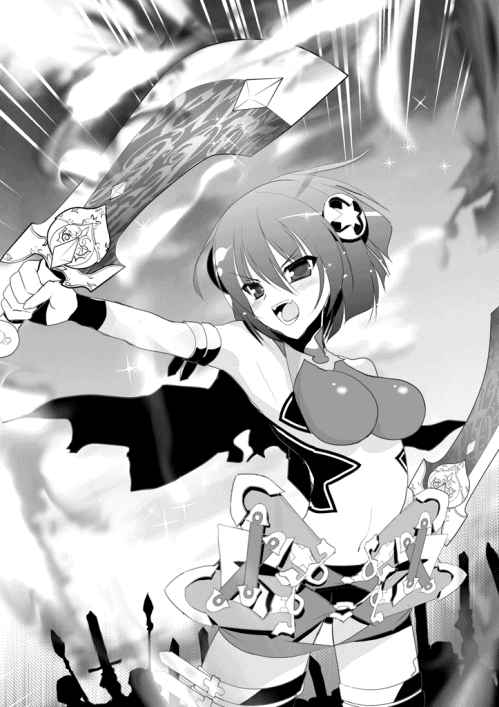
◎
そのころのエレンは、ありていにいってひどい有様だった。
陽射しを浴びて輝く白銀の髪からは艶が失われて灰色っぽくなり、髪は使い古したホウキのように乱れ、その表情はただただ昏い。
最初の変化があったのは五日前だが、そのときはまだそれほどひどくなかった。
急激な悪化を見せたのは三日前だ。それから昨日、今日と日がたつにつれて、白銀の髪の戦姫は長年仕えている騎士や侍女ですら息を呑むほどの変貌を見せた。最上の紅玉を思わせる瞳からは輝きが失せて乾いた血のような色になり、瞼にはうっすらと隈がある。
兵士や侍女に対しても気さくに声をかけていたのが、そんなゆとりもない様子だった。
王都からの使者や、陳情を携えてきた領民などに対しては身だしなみを整え、背筋を伸ばし、顔も引き締めて戦姫として立派に応対する。だが、まわりにいるのが知っている者だけになると、とたんに疲れきった老猫のようになってしまうのだ。
公宮に勤める者たちはエレンの副官であるリムアリーシャに説明を求めたが、彼らの満足できるような回答を、リムは出せなかった。
「統治のことで、エレオノーラ様を悩ませる事態が起きているのです。ただ、そう何日も続くものではありませんので、いつも通り職務に励んでいただきますようお願いします。エレオノーラ様もそれを望んでおられます」
このような通り一遍の言葉しか吐けない自分のいたらなさにリムは憤りを覚えるが、彼女にも打てる手はない。
ティグルに仕える侍女のティッタもエレンを心配し、彼女にできるせめてものこととして、菓子をつくってリムに渡した。エレンに食べてほしいと言って。リムは内心で複雑な葛藤を抱えながらも、礼を言ってそれを受けとったのだった。
まず五日前。王都シレジアと、南にあるオルミュッツからそれぞれ使者が現れた。彼らの述べた内容はほとんど同じもので、南を警戒し、いつでも兵を出せるように備えよとのことだった。
ジスタートの南には、ムオジネル王国がある。民の肌は褐色で、周辺諸国の中でいまでも奴隷制を続けている国だ。現在の王になってからはとくに好戦的で、ジスタートとムオジネルは幾度か刃をまじえたことがある。
そのムオジネルが、十万の兵を両国の国境線付近に動かしたのだという。ジスタートはただちに何の目的かを問うための使者を送ったが、それだけでは不充分だ。突然の襲撃に備えて南を警戒しておく必要があった。
ジスタート王国の南にいる戦姫といえば、オルミュッツを治めるリュドミラ＝ルリエとポリーシャを治めるソフィーヤ＝オベルタスのふたりである。ただし、ソフィーはいまレグニーツァから王都シレジアへ向かっている。
そこで、ライトメリッツのエレンに要請が来たのだった。十万の兵がもし国境を越えて侵攻してきた場合、まずはミラが、次いでエレンが迎え撃つ形となる。
エレンは不機嫌そうな顔をしつつも、リムや騎士たちに命じていつでも兵を出せるよう整えさせた。本音をいえば、犬猿の仲であるミラと肩を並べて戦うなど冗談ではないとはねのけたいところである。
だが、十万の敵というのはそのようなわがままを許さない相手だ。そのていどのことがわからないエレンではなかった。
そして三日前。今度はレグニーツァからサーシャの手紙が届いた。
丁寧に蜜蝋で封のされた手紙を受けとったとき、エレンはずいぶん仰々しいなとしか思わなかった。彼女とリムしかいない執務室で封を切り、中の手紙に目を通す。
白銀の髪の戦姫の顔色が、変わった。
「エレオノーラ様......？」
エレンの変化に気づいたリムが気遣う声をかける。エレンは何も言わず、読み終えた手紙を彼女に押しつけた。リムは当惑しつつ手紙を受け取る。
そして、今度は彼女が愕然とする番だった。
ティグルヴルムド＝ヴォルンが、アスヴァールからの帰還中、海に落ちて行方不明。
サーシャの綴った文はエレンを慰め、励まし、希望はあると訴えていたのだが、白銀の髪の戦姫は感情の赴くままに叫ぶのを堪えるのがやっとだった。
「何だ、これはっ......！」
てのひらに爪が食いこんで血がにじむほど強く握りしめ、エレンはおよそ一ヶ月前の自分──ティグルをアスヴァールへ行かせた自分を激しくののしった。
彼女を落ち着かせたのは、懸命なリムの声だった。
「エレオノーラ様。アレクサンドラ様の手紙の内容に文句を言うわけではありませんが、ひとつの手紙だけで何もかも判断することはできません。それに、いまはまた状況が変わっているかもしれません」
リムにとってのティグルは、成長の楽しみな弟子のようなものであり、彼女の受けた衝撃も大きかったのだが、エレンの感情の荒れ狂いようがそれ以上だったために、かえって冷静さをたもつことができたのだった。
やがて、そこそこ思考を働かせるていどにまで落ち着くと、エレンはリムに飲みものを用意するよう頼む。
「強い酒がいい」
「まだ昼です」
短く応じるリムの声が冷たかったのは、内心では彼女も同感だからだった。しかし、公宮の主とその副官が、日が高いうちから酔っ払うわけにはいかない。
冷たい水に葡萄を絞って蜂蜜を溶かしたものを出す。エレンはそれを一口飲んでため息をつくと、いままで見せたことのないようなしかめっ面でリムに言った。
「これ......ティッタにはどう話す？」
自分の分の飲みものを用意していたリムは、ぽかんと口を開けて立ち尽くす。手にしていた蜂蜜の瓶を落としこそしなかったが、ついグラスの中に傾けすぎてしまっておそろしく甘ったるい飲みものができた。
ティッタはただの侍女ではない。ティグルが小さなころからいっしょに過ごし、若者が領主になれば侍女として仕え、ティグルがライトメリッツで暮らすことが決まると健気にもついてきて、身の回りの世話を務めた少女だ。
彼女がティグルに対して主従を超えた想いを抱いていることは、エレンもリムも知っている。ティグルがアスヴァールへ発ってから、ティッタが主を心配して小さな胸を痛めるたびに、エレンもリムも彼女を慰めたり励ましたりしたものだった。
それだけに、結論を出せない。エレンもリムも決して優柔不断ではなく、思考の幅が狭いわけでもないのに、具体的な案がまるで思い浮かばなかった。
「......しばらく、様子を見るというのではいかがでしょうか」
やがて、リムは彼女らしからぬ、先延ばしでしかない提案をした。エレンも苦い顔でそれを受け入れる。サーシャからの手紙を見た者は、自分たちふたりだけだ。どこから漏れるかわからないので、誰にも話せない。
「そうだな。いずれはアスヴァールの内乱が終わったことも知れ渡るだろうが......」
「はい。とりあえずそのときまでは、ティグルヴルムド卿はまだ旅から戻ってこない、ということにして......」
ふたりは一応そう決めたのだが、その日はまったく仕事にならなかった。書類を手にとっても字を追う気にならず、どこかへ向かおうとして通路を間違える。食事を用意させても手につかず、気がついたときにはスープも何もかもが冷めきっていた。
そして、今日。今度はサーシャに仕えている従僕が手紙を送ってきたのだった。
──ティグルのことに関する続報だろうか。
そう思ったが、それならばサーシャではなく従僕の手紙である理由がわからない。エレンは首をかしげたものの、封を切った。
このとき、エレンは海賊たちが八十隻の大船団を率いてジスタートへ向かっていることを知ったのである。そして、サーシャが戦場へ赴いたということも。
──どういうことだ？ 病がよくなったなどとは聞いてないぞ？
従僕は、この手紙はサーシャに黙ってしたためたと綴っている。勝手な願いではあるがサーシャの戦いを見届けてもらえないかとも。
『アレクサンドラ様は、戦場を己の眠る場所としてお選びになられたようです。我々は臣ではあっても、あの方の友ではありませんでした。あの方の友であるエレオノーラ様にお願い申しあげます。リプナの港町までお越しいただくわけにはまいりませんでしょうか』
血を吐くような思いで従僕はこの手紙を綴ったのだろう。手紙の最後の文字は、ひどく歪んでいた。
サーシャを助けるのではなく、その戦いを見届けてほしいと。
「エレオノーラ様」
エレンに続いて手紙に目を通したリムが、聞き慣れた淡々とした声音で言った。
「リプナへお行きください」
「リム。おまえ、何を──」
エレンは反論しかけたが、リムの碧い瞳に、続く言葉をおもわず呑みこんだ。
「南への対応は、僭越ながら私が行います。アレクサンドラ様のもとへ駆けつける役は、エレオノーラ様以外の誰にもできません」
いつになくきっぱりとした口調で言われ、エレンはうろたえた。行きたくないはずがない。しかし、エレンが留守にしている間にムオジネルが動けば、ジスタートという国そのものの命運にかかわってくる。
いつもは明朗さに満ちたエレンの紅の瞳が、逡巡と不安とで揺れ動いた。リムはなおも言い募る。
「エレオノーラ様がここから動かなかったとします。そして、アレクサンドラ様の訃報を聞いたとします。まともな判断ができますか？ ティグルヴルムド卿が、生死定かでなく行方不明だというだけで、これほど取り乱されているというのに」
「......それをおまえが言うのか」
さすがにエレンは憤慨して、親友でもある年長の副官を睨みつけたが、すぐに肩の力を抜いて不器用な笑みをつくった。
「──行ってくる」
迷いを断ち切れば、決断は早い。その答えに、リムは満足そうにうなずいた。
「お気をつけて」
その日のうちにエレンは馬を駆り、公宮を出て北へ向かった。ただ無心に、街道を駆ける。サーシャの戦いに、間にあってくれとだけ願い続けた。
◎
レグニーツァから街道を北へ進み、広大なヴァルタ大河を船で越えるとルヴーシュに入る。戦姫エリザヴェータ＝フォミナの治める地だ。レグニーツァまではまだ秋の空気に満ちていたが、ルヴーシュでははやくも冬の気配が漂いはじめていた。
エリザヴェータが主だった部下たちを公宮の会議室に集めて出陣を告げたのは、サーシャがリプナの港町へ向かった数日後のことだ。
壁の一画に設えられたレンガ造りの暖炉には赤々とした火が燃えている。暖気を逃さないため窓は閉ざされ、そのために室内は明るいとは言い難かった。胡桃材の巨大なテーブルを、エリザヴェータは十人近い部下たちと囲んでいる。
「レグニーツァの要請を受け入れなさるのですか」
意外だという顔の部下に、エリザヴェータは当然だという顔でうなずいた。
「領内にある港町からも、海賊の大軍を見たという報告は受けているのでしょう？ 領民が被害に遭う前に叩き潰すのは当然のことですわ」
腰まで届く赤い髪を揺らして、ルヴーシュの主は微笑んだ。今年で十八歳になる。他の戦姫たちと同じように、彼女にも『雷渦の閃姫』『鞭の舞姫』といった異名があるが、エリザヴェータはもうひとつの異名で呼ばれることが少なくない。
『異彩虹瞳』。左右で異なる色の瞳を持つ者を、ジスタートではそう呼ぶのだ。
エリザヴェータの右目には金色の瞳が、左目には碧い瞳が輝いている。その前には彼女の豊かな肉体も、布地を幾枚も重ね、フリルやレースを用いた派手なドレスも、印象が霞んでしまうのだった。
数日前の海竜が現れたという話に対しては、ルヴーシュ領内の港町へ警戒を呼びかけるだけですませたのだが、相手が海賊の大軍とあっては話が別だ。
海竜が港町の近くに姿を見せたという話は聞かないが、海賊は港町を襲ってくる。ルヴーシュの主として、戦姫として撃退せねばならない。
──それに、気になることがひとつ。
サーシャからの手紙に、エリザヴェータはあらためて目を通す。サーシャ自身も兵を率いて船に乗ると、間違いなく書かれていた。
この一文が、エリザヴェータに与えた衝撃は決して小さくない。病に侵され、寝室から離れられないあのアレクサンドラ＝アルシャーヴィンが出陣するというのだ。
──病から回復したという話はまったく聞いていないわ。戦場で指揮をとれるほどまでに持ち直したのならば、そうした噂が私の耳に届いてもいいはずだけれど。
エリザヴェータとしては、サーシャの様子を自分の目で確認したかった。
「ですが、何の条件もつけずにお引き受けなさることはないのではありませんか」
部下のひとりの不満そうな訴えが、己の思考に没頭していたエリザヴェータを現実に引き戻す。ルヴーシュの民もまた、レグニーツァの民のことをこころよく思っていない。サーシャに対しても、病人が戦姫を名のっていると陰口を叩く者が少なくなかった。
「あちらの戦姫様も出陣なされるというのなら、一日か二日ほどは向こうに苦労していただけばよろしいのでは」
「私もそう思います。戦は騎士の誉れとはいえ、進んで重い荷をかつぐことはないかと」
さらに部下たちが勢いこんで主を説得しようとしたときだった。空気を切り裂く音に、硬い何かが石の床を鋭く打ち据える音が続く。暖炉の炎がゆらめいた。
エリザヴェータが手にしていた鞭を振るったのだと、部下たちは即座に理解する。
赤い髪の戦姫はいつのまにか椅子から立ち上がり、部下たちを睥睨していた。彼女の手にある漆黒の鞭は、触れれば吹き飛ばされそうな金色の光を帯びて、静かに輝いている。
これこそが、エリザヴェータを戦姫たらしめている竜具だった。雷渦と呼ばれるこの鞭を、彼女は敵にしか振るったことはない。だが、その恐ろしさを知らない部下はいない。
さきほどまでの熱狂が嘘のように、会議室は静まり返る。ほぼいっせいに口をつぐんだ部下たちを二色の瞳で見回して、満足そうにエリザヴェータは微笑んだ。
「嫌いな相手に苦労を押しつけるのは大好きですわ。でも──病人を働かせるのは大嫌いなの」
とくに台詞の後半が、彼女の偽りのない本心であることを理解できた者は、この場にいなかった。ただ、その声音に含まれた雷のごとき威厳に打たれ、部下たちは椅子から立ち上がるとそろって膝をつく。エリザヴェータは鷹揚にうなずくことで彼らを許した。
「アレクサンドラが出てくるのならば、レグニーツァの兵たちの士気は非常に高いと思いますわ。こちらも、ルヴーシュの武威を見せつけてやる必要があるのではなくて？ すくなくとも私は、そのつもりですわよ」
対抗心を煽られて、部下たちの戦意に火が灯る。エリザヴェータは彼らの表情からそれを確認すると、一刻後の出立を命じた。
部下たちが慌ただしく退出し、ひとりきりになった会議室でエリザヴェータは暖炉の火を眺めやる。ふと、湧き出た疑問が口をついた。
「......アレクサンドラが出陣するというのならば、エレオノーラはどうするのかしら」
エリザヴェータの二色の瞳を、複数の感情が複雑に彩る。エレンのことを考えるとき、彼女はどうしても思いだしてしまう。八年前、田舎の寒村でふたりがはじめて会った日。ふたりとも戦姫ではなかった遠い昔を。また二年前に起きたいくつかの事件を。
我に返ると、エリザヴェータはこの場に自分しかいないとわかっているのに周囲へ視線を走らせ、それから表情を鋭く引き締めた。首を振って疑問も郷愁も振り払う。
思い出に浸ると、まるで母親を見失った子供のような顔つきになってしまう自分を、彼女はよく知っていたのだった。
◎
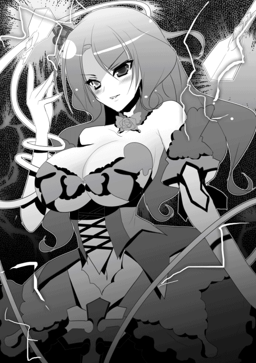
レグニーツァの所有する軍船には、二種類ある。どちらもガレー船ではあるのだが、大きさが違った。
ひとつは『槍』と呼ばれる細身のガレー船だ。帆柱は一本で、百二十人の漕ぎ手と八十人の兵士を乗せることができる。とにかく小回りがきくのが取り柄の船といってよい。
もうひとつは『弩』と呼ばれる大型のガレー船だ。船自体が三段構造になっており、帆柱は二本または三本。こちらは二百八十人の漕ぎ手と百五十人の兵士を乗せることができる。船体が大きいだけに動きは鈍重だが、投石機などを積むこともできた。
もっとも、騎士か生粋の船乗りでもないかぎり『槍』『弩』と呼びわけるようなことはしない。もっと乱暴に「大きいの」「細いの」というやりとりが主流だ。
ちなみに帆船はない。動きが風任せになってしまう帆船は、戦には向かないからだ。
レグニーツァにかぎらず、ルヴーシュでも、またブリューヌやアスヴァールといった王国においても、軍船の区分けは似たようなものである。いろいろな構造の船や兵器を造った者はいるのだが、戦場でそれらが主流になることはなかった。
サーシャがリプナに着いたとき、港にはすでに三十を超える数の軍船が出航を待ちわびていた。リプナの長は軍装をまとったサーシャを見て驚きの表情を浮かべたが、すぐに気を取り直すとうやうやしく一礼する。
黒髪の戦姫は微笑を返し、それからリプナの長の隣に知った顔が立っていることに気づいた。短い髪に、陽に焼けた赤銅色の肌。黒絹の帽子と、巨躯を包む真紅の上着。なにより目を合わせるだけで子供を泣かしてしまいかねないその顔だち。
「戦姫さま。私は兵士ではなく一介の元船乗りですが、もしお許しいただけるなら戦列の端にお加えいただけますでしょうか」
おおげさなほどの礼をしたその男は、マトヴェイだった。サーシャは彼に歩み寄ると肩をすくめながら尋ねる。
「長旅から帰ってきたばかりだろう。疲れているんじゃないか？」
「仰る通りにございますが、いささか暴れ足りない気分でして」
「......他には？」
諧謔気味のマトヴェイの声に、真摯な思いのかけらが混じっていることに気づいてサーシャは短く問いかけた。マトヴェイは笑みを消し、静かに答えた。
「海賊討伐が終わりましたら、船を一隻に食糧と水をお借りしたく」
ティグルをさがしたいということなのだろう。本当はいますぐにでも海へ出たい気分なのかもしれないが、さすがに八十隻もの海賊がうろついているところへ足を踏み入れることはできない。サーシャの下で戦うのが、もっとも手っ取り早いはずだった。
「わかった。じゃあ、この戦の間だけ僕の側仕えになってもらおう」
あっさりとサーシャは承諾したのだが、これには言われたマトヴェイのみならず、隣に立っていたリプナの長も驚いた。ふたりに微笑みかけると、黒髪の戦姫はすぐ真剣な表情になり、必要なことを確認する。船の数、漕ぎ手の人数、兵の人数、食糧と水、今後の天候と風向きの予想に、敵を最後に発見した海域。知っておくべきことは数多くあった。
それから半刻後、レグニーツァの海軍は港を発つ。陣容は『槍』が三十一隻に『弩』が三隻、もっとも状態のいい『弩』がサーシャの旗艦となる。
伝え聞く海賊たちの半分以下の数だが、サーシャはとくに気にしなかった。
「まずは大陸沿いに北上して、エリザヴェータの海軍と合流しよう。海戦は陸の戦い以上に物量がものをいうとはいっても、レグニーツァだけで八十隻以上そろうのを待っていたら被害が拡大するばかりだからね」
旗艦の甲板で潮風を身体に浴びながら、サーシャは部下たちにそう説明する。また、大陸沿いであればレグニーツァ軍の方が岩礁や潮の流れに詳しいという自負があった。
三十四隻の船団は、紺碧の海をかきわけるようにして北へと進んでいく。
サーシャは甲板に椅子を用意させ、それに座って指揮を執っていた。とはいえ、行軍が順調ならば彼女がとくに口をさしはさむことはない。黙って、総指揮官の姿を船乗りたちに見せていればよかった。
空は青く晴れ渡って照りつける陽射しが厳しいほどだったが、サーシャは船室に引っこむようなことはせず、甲板上にその姿を示し続けた。
戦姫の矜持を最大のものとして理由はいくつかあるが、薄暗い船室が公宮の寝室を思い起こさせたのと、潮風を浴びながら海をぼんやりと眺めるのが好きだったからだ。また、公宮を発ってからとくに体調が悪化しなかったというのもある。
戦姫が総指揮官とあって兵、漕ぎ手ともに士気は高く、レグニーツァ軍は快調に海を進んでいった。
偵察に出た船が、海賊船らしき集団の姿を見たと報告したのは、レグニーツァ軍が海に出てから三日が過ぎたころだった。海賊船は十隻前後で、こちらの姿を見るとすぐに遠ざかってしまったという。
報告を受けたサーシャは、穏やかさを残しながら表情を引き締めた。
「これから何日かは、おたがいに兵力のさぐりあいになるね」
エリザヴェータの率いるルヴーシュ軍とは、明日に合流できる予定だ。彼女がちゃんと出てきてくれたことを、サーシャはおおっぴらにできないものの嬉しく思う。
──ルヴーシュも三十隻ほどか。こちらと合わせて六十ちょっと。海賊との二十隻近い差は、僕とエリザヴェータで埋められるかな......。
日が沈み、船は錨を降ろして停泊する。サーシャは船室に戻るよう勧められたが、もうすこしだけと言って厚手の外套をまとい、まだ甲板に残っていた。
現在、甲板上には彼女の他に数人の見張りがいるだけだ。空には金色の月が輝いて、星々とともに海を淡く照らしている。空気はだいぶ冷えこんできたが、サーシャの腰にある二本の刃が勝手に主をあたためはじめたので、あまり寒さを感じない。
「いまさらだけど、おまえたちって僕の話を全然聞いてくれないよね」
サーシャは苦笑を浮かべて、金色の刃と朱色の刃を見つめる。
この二振りはまさしく炎を思わせて活発といえば聞こえはいいが、よかれと思って突っ走っているのか、主の要求に耳を貸さないことがたいへん多い。いまもこうしてサーシャの手元にあるのがその証明といってよいだろう。
「エレンのアリファールやミラのラヴィアスはもっと素直だっていうけど......。次の戦姫のときは、もうちょっと話を聞いてあげるように──」
そこでサーシャは言葉を中断させた。外套を払いのけ、椅子から立ち上がったときには腰の双剣を左右の手に握りしめている。不気味な気配を感じたのだ。
彼女の手にある二本の刃も、刀身にそれぞれ紅蓮と黄金の炎をまとわりつかせ、さかんに警告を発している。想像もできないほど危険な何かが近くにいると。
──船首か......。
手や足に強張りがないことを確認して、サーシャは船首へ歩いていく。揺れる船の上だというのに、彼女の足取りは地上を歩くのと変わらない。
はたして、そこにひとつの影が立っていた。月に照らされてぼんやり浮かびあがる輪郭は人間のそれだ。年齢ははっきりしないが、髪がないのか頭部は丸く、体格は中肉中背。
異様なのは、その人影から放たれている粘つくような敵意だった。人間とはあきらかに違う。獣でもない。サーシャは一瞬、自分がこの世ならぬどこかに迷いこんでしまったような錯覚さえ覚えた。
ぽたぽたと、小さな音が不規則な間隔でサーシャの耳を打つ。よく見ると、頭頂部からつま先まで男はずぶ濡れだった。この奇妙な音は、男の服の裾や指先から垂れている滴によるものだったのだ。
──泳いできたのか。この夜の海を。
「......何者だ、おまえは」
鋭い誰何の声を、サーシャは叩きつける。返答はないので別の質問をした。
「ここにいた男はどうした？」
船首には常にひとり、見張りを置いている。不審な人物を見かけて、声をあげないはずはない。その人影は、笑ったように見えた。
「死人のことより、おまえ自身の心配をするべきではないか。──双剣」
奇妙な呼び方にサーシャは眉をひそめたが、あることに思い当たってすばやく双剣をかまえる。人影を睨みつけて、問うた。
「──トルバランか？」
オルガがそう言っていた。彼女のことを斧、ティグルのことを弓と呼んでいたと。
潮風に混じって、それとは違うなまあたたかい空気が吹きつけられる。人影との距離は十数歩も離れているのに、野獣と対峙しているのにも似た緊張と重圧がサーシャを包む。
「斧か錫杖から聞いたのか？ 何にせよ、話が早くて助かる」
武器も持っていなければ鎧も身につけていないその男は、嬉しそうに笑いながら無造作に距離を詰めてくる。だん、と力強い踏みこみに甲板がきしんだ。そのときにはサーシャも腰を低くして甲板を蹴っている。
「好みにはほど遠いが......されど戦姫！ 我が贄となりて腹におさまるがいい！」
叫び声と同時に、すさまじい瘴気が放たれた。男の両眼が殺気を帯びた赤い光を放ち、身につけている麻の服が内部からの膨張に耐えかねて無数に引き裂かれる。
瞬く間に、男の身体はサーシャの倍以上までふくれあがっていた。月に照らされた肌は嫌悪感を覚える不気味な白。体毛はなく、額には螺旋状の角が三本。顔の右半分は醜く焼けただれ、右肩から右胸にかけて何かでえぐられたような傷跡があった。
──これが魔物......！
サーシャは驚きに目を瞠ったが、彼女がその場に立ちすくんだとしても、それは一瞬未満のことだった。サーシャを狙って振り下ろされた白い豪腕は、甲板だけを粉砕して大きな穴を穿つ。破壊音とともに吹き飛ぶ木片の中には、火の粉だけが舞い散っていた。
トルバランから数歩分離れたところで、サーシャは双剣を交差させるようなかまえで立っている。甲板の下にいた船乗りたちから悲鳴があがっているが、黒髪の戦姫はそれを無視した。この状況では何を言っても混乱を助長させるだけだ。
甲板の上を滑るように動きながら、両者は徐々に距離を詰める。サーシャが音高く床を蹴った。一瞬遅れて、怪物の全身から目に見えない衝撃波が放たれる。
足元を破壊しないように調整したそれは、舳先や船縁を容赦なく打ち砕き、樽や数人乗りの舟を粉々に吹き飛ばした。サーシャの双剣が帯びていた炎の残滓も吹き散らされて闇の中に溶ける。
トルバランの顔は不審に染まった。また、手応えがなかったからだ。
「──上か！」
魔物が豪腕で頭上を殴りつける。その一撃をかいくぐって落下してきた影が、床に降り立った。その正体はむろんサーシャだ。着地の反動を利用して距離をとろうとした黒髪の戦姫に対し、間髪入れずトルバランは衝撃波を放出する。
だが、サーシャの疾さはそれすら上回った。
舞うような動きで衝撃波を躱し、魔物から十歩近く離れたところで双剣を構えなおす。刀身を包む炎が、尾を引いて闇をわずかに払った。
ほう、とトルバランは感嘆の声をあげる。サーシャが立っているのは、衝撃波が届く範囲の文字通り一歩手前だった。つまり、彼女は衝撃波の射程範囲を、一撃目で正確に見抜いたということになる。
衝撃波そのものはオルガなどから聞いて知っていたとしても、それがどこまで及ぶのかをこの闇の中、揺れる船の上で測り、ぎりぎりの範囲で避けるとは尋常な技量ではない。
「わざわざここまで来て、正解だったな。実に楽しめる──」
そのとき、トルバランの右腕に異変が起こった。
肘あたりで魔物の腕がずれたかと思うと、どんという重たげな音とともに肘から先が床に転がる。断面は黒く焼け焦げており、血が噴きだすようなことはなかった。
サーシャの手にある双剣は、色の異なる焔をそれぞれ勢いよく立ち昇らせている。主の戦意を示すかのように。
「──次は、その不愉快な首を落とす」
炎をまとった二色の剣をかまえて、刃の舞姫は静かに告げた。
（続く）
あとがき
まずはお詫びからさせていただきます。
五月発売の予定だった本作ですが、僕の体調不良から二ヶ月ばかり延期し、こうして七月の刊行となりました。
また、それによって発売日が定まらず、読者の皆さまはもとより多方面の方々を混乱させ、ご迷惑をおかけすることとなってしまい、本当に申し訳ありませんでした。
春の終わりごろのことだったのですが、
「すいません。ちょっと体調崩したみたいで......」
「だいじょうぶですか？ ゆっくり休んでください。ところで、原稿の方はどうなっていますか？ 身体の具合と原稿の進み具合によっては延期を──」
「あー、だいじょうぶです。すぐに治りますから」
これを読んでいる皆さまならもうおわかりだと思うのですが、すぐには無理でした。
このあとがきを書いているいまはすっかり回復して、健康そのものなわけですが、そのときは思ったより長引いたこともあり、大事をとって七月まで延期とさせてもらったんですね。いや健康って大事。あと過信と安請け合いはよくない。
というわけで、あらためまして川口士です。『魔弾の王と戦姫』七巻をお届けします。今回はいままで以上に次巻へ続くといいましょうか、分冊的な展開になりましたが、いかがでしたでしょうか。
続きはあまりお待たせせず......といきたいところですが、年内を予定しております。どうかお待ちいただければと思います。
それでは謝辞を。編集のＩさん、今回は本文だけでなくスケジュールやら何やら、本当に最初から最後までお手数をおかけしました。次からは健康にも気をつけます、いやほんとに。そして入れ代わり立ち代わり登場する何人もの戦姫を描いてくれたよし☆ヲさん、ありがとうございました。
拙著が本屋に並ぶまでの、いくつのも工程に携わった関係者の方々にも、お礼を申し上げます。
それではまたどこかでお会いしましょう。
川口 士
著者
川口士（かわぐち・つかさ）
１９７９年生まれ。２００６年、第18回富士見ファンタジア長編小説大賞にて『戦鬼』で大賞を受賞
その後、いろいろなところでいろいろ書く。
大変お待たせして申し訳ありませんでした！ いまはただ楽しんでいただければと思います。
イラスト
よし☆ヲ（よし☆を）
☆ ☆
☆
てってーん☆なんと
へへーんななかんになりました！
ペンがうなるお！☆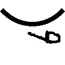★
ろっかんはごめんなさい...
☆ ☆
＋＋＋＋＋＋
よし☆ヲのtwitter
http://twitter.com/yoshi_wo
魔弾の王と戦姫７
著者名......川口士
発行者......三坂泰二
発行所......株式会社メディアファクトリー
http://www.mediafactory.co.jp/
２０１３年７月31日 電子書籍版 ver.1.0.1
無断で複製・複写・放送・データ配信などをすることは、かたくお断りいたします。
©2013 Tsukasa Kawaguchi